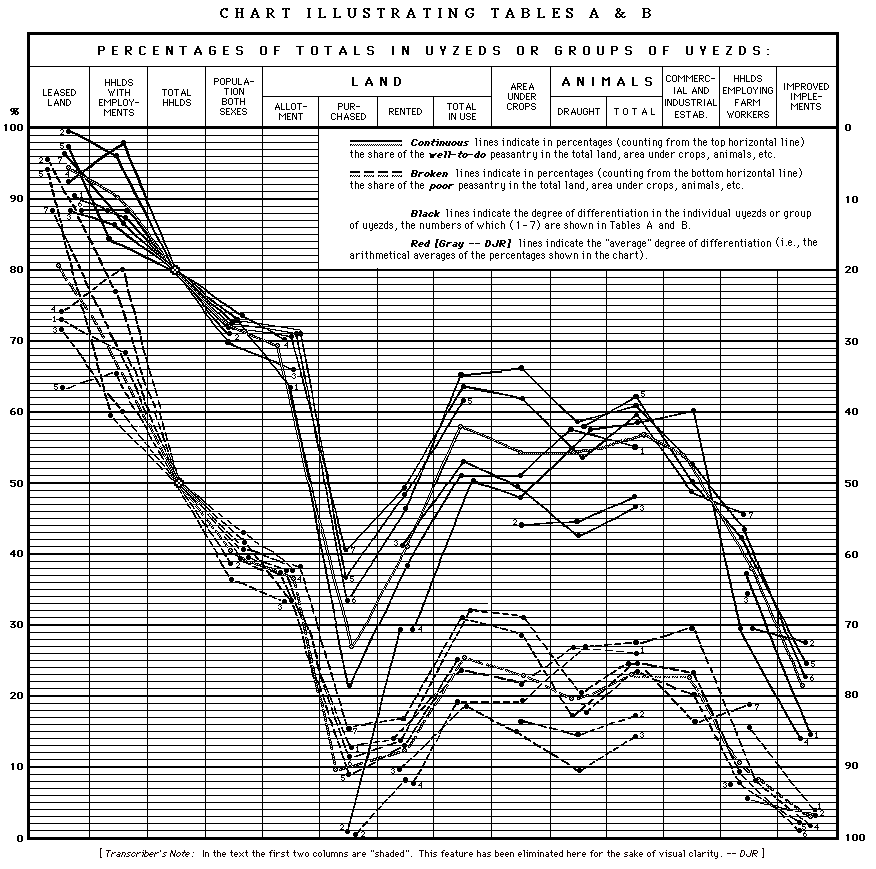

(pp. 70-188)
Written in 1896-99.
Published according to the text
Vol. 3, pp. 21-607.
Translated by Joe Fineberg and by George Hanna
V. I. Lenin
THE DEVELOPMENT OF
CAPITALISM IN RUSSIA
The Process of the Formation of a
Home Market for Large-Scale Industry
[Part 2 -- Chapter II]
First printed in book form
at the end of March 1899
of the second edition, 1908
From V. I. Lenin, Collected Works, 4th English Edition,
Foreign Languages Publishing House, Moscow, 1961
Edited by Victor Jerome
Prepared © for the Internet by David J. Romagnolo,
djr@marx2mao.org
(Corrected and Updated December 2001)
C O N T E N T S
|
[Part 2]
| |||
|
Chapter II. T h e D i f f e r e n t i a t i o n o f t h e P e a s- |
| ||
|
I. |
Zemstvo Statistics for Novorossia . . . .
. . . . . |
70 | |
|
|
|
Economic groups of the peasantry 70-71. -- Commercial agri- |
|
|
II. |
Zemstvo Statistics for Samara Gubernia . . . . .
. . |
85 | |
|
|
|
Data concerning the farms of the different peasant groups in Nov- |
|
|
III. |
Zemstvo Statistics for Saratov Gubernia. . . . .
. . |
93 | |
|
|
|
Data concerning the farms of the different groups 93-94. -- The |
|
|
IV. |
Zemstvo Statistics for Perm Gubernia . . . . .
. . . |
106 | |
|
|
|
Data concerning the farms of the different groups 106-107. -- |
|
|
V. |
Zemstvo Statistics for Orel Gubernia . . . . .
. . . |
112 | |
|
|
|
Data concerning the farms of the different groups 112-113. -- |
|
|
VI. |
Zemstvo Statistics for Voronezh Gubernia . . . .
. . |
115 | |
|
|
|
Methods of classification in Voronezh abstracts 115-116. -- Data |
|
|
VII. |
Zemstvo Statistics for Nizhni-Novgorod Gubernia . . . |
119 | |
|
|
|
Data concerning groups of farms for three uyezds 119-122. |
|
|
VIII. |
Review of Zemstvo Statistics for Other Gubernias . . . |
122 | |
|
|
|
Novgorod Gubernia, Demyansk Uyezd 122-123. -- Chernigov |
|
|
IX. |
Summary of the Above Zemstvo Statistics on the Dif- |
| |
|
|
|
Methods of marking the summary 127-129. -- Combined table |
|
|
X. |
Summary of Zemstvo Statistics and Army-Horse Census |
| |
|
|
|
Zemstvo Statistics for 112 uyezds of 21 gubernias 141-143. -- |
|
|
XI. |
A Comparison of the Army-Horse Censuses of 1888- |
| |
|
|
|
Data for 48 gubernias of European Russia 146-147. -- Statisti- |
|
|
XII. |
Zemstvo Statistics on Peasant Budgets . . .
. . . . |
148 | |
|
|
|
Character of the data and methods of treating them 148-150. -- |
|
|
XIII. |
Conclusions from Chapter II . . . . . .
. . . . . . |
172 | |
|
|
|
The significance of commodity economy 172. -- 1) Capitalist |
|
page 70
THE DIFFERENTIATION OF THE PEASANTRY
We have seen that in capitalist production the basis for the formation of a home market is the process of the disintegration of the small cultivators into agricultural entrepreneurs and workers. Almost every work on the economic position of the Russian peasantry in the post-Reform period refers to the so-called "differentiation" of the peasantry. It must consequently be our task to study the principal features of this phenomenon and to determine its significance. In the following exposition we employ the statistical data of Zemstvo house-to-house censuses.[40]
Mr. V. Postnikov, in his book Peasant Farming in South Russia (Moscow, 1891),[42] has collected and processed the Zemstvo statistics for the Taurida and partly the Kheson and the Ekaterinoslav gubernias. This book should be given first place in the literature on the differentiation of the peasantry, and we consider it necessary to arrange according to the system we have adopted the data gathered by Mr. Postnikov, supplementing them occasionally with data from Zemstvo publications. The Zemstvo statisticians of Taurida have grouped the peasant households according to area under crops -- a very sound method, one that renders it possible to form a precise judgement of the economy of each group due to the predominance in that locality of grain cultivation with extensive farming. Here
are the general data for the economic groups of the Taurida peasantry.[*]
Dnieper Uyezd | Three uyezds Groups of % of per- % of Average Total % of
I.
Cultivating no
IV. Cultivating 10
V.
Cultivating 25
Total . . . . 100 6.2 1.4 100 17.1 1,439,267 100
Mr. Postnikov employs the following method. From the total crop area of the farm, he separates the following: the food area (which provides sustenance for the family and the farm labourers), the fodder area (which provides fodder for the cattle) and the farm-service area (seed-plot, land occupied by buildings, etc.), and thus arrives at the size of the market or commercial area, the produce of which goes for sale. It is shown that in the group with 5 to 10 dess. under crops, only 11.8% of the cultivated area yields produce for the market, whereas this percentage grows with the increase in the area under crops (by groups) as follows: 36.5% -- 52% -- 61%. Consequently, the well-to-do peasants (the top two groups) engage in what is commercial cultivation, and secure a gross money income ranging from 574 to 1,500 rubles per annum. This commercial cultivation then becomes capitalist farming, for the areas cultivated by the well-to-do peasants exceed the family labour norm (i.e., the amount of land that a family can cultivate by its own labour), and compel them to resort to the hiring of workers : in the three northern uyezds of Taurida Gubernia, the author estimates, the well-to-do peasants hire over 14,000 rural workers. The poor peasants, on the contrary, "provide workers" (over 5,000), that is, resort to the sale of their labour-power, since the income from cultivating the land amounts, in the 5 to 10 dess. group, for example, to only about 30 rubles in cash per household.* We observe here, consequently, the very process of the creation of a home market that is dealt with by the theory of capitalist production -- the "home market" grows as a result of the conversion into a commodity of the product of commercial, entrepreneur farming, on the one hand, and of the conversion into a commodity of the labour-power sold by the badly-off peasants, on the other.
In order to acquaint ourselves more closely with this phenomenon, let us examine the position of each separate group of the peasantry. Let us start with the top group. Here are the data for the amount of land it owns and uses:
Dnieper Uyezd, Taurida Gubernia
Area cultivated per household Groups of households Allotment Purchased Rented Total
I.
Cultivating no land
6.4
0.9
0.1
7.4 Average 11.2 1.7 7.0 19.9
Let us take the data for livestock and implements:
Three uyezds, Taurida Gubernia
In Dnieper Uyezd Animals per household
% house-
There are per Groups of households Draught Other Total
I.
Cultivating no land
0.3
0.8
1.1
80.5
--
-- Average 3.1 4.5 7.6 15.0
Thus the well-to-do peasantry are far better supplied with implements than the poor and even the middle peasantry. It is sufficient to glance at this table to see how totally fictitious are the "average" figures which people are so fond of bringing into play when they talk of the "peasantry". The commercial cultivation of the peasant bourgeoisie is accompanied here by commercial livestock farming, namely, the breeding of coarse-wool sheep. Regarding implements, we shall quote in addition figures for improved implements, which we have taken from Zemstvo statistical returns.[*] Out of the total reaping and mowing machines (3,061), 2,841, or 92.8%, belong to the peasant bourgeoisie (1/5 of the total households).
It is quite natural that the well-to-do peasantry also employ a farming technique much above the average (larger size of farm, more plentiful supply of implements, available financial resources, etc.); that is to say, the well-to-do peasants "do their sowing faster, make better use of favourable weather, sow the seed in more humid soil," and reap their harvest in proper time; they thresh their grain as it is carted in from the field, etc. It is also natural that the expenditure on the production of agricultural produce diminishes (per unit of product) as the size of the farm increases. Mr. Postnikov proves this proposition in particular detail, using the following system of calculation: he determines the number of people working (including hired labourers), the number of draught animals, implements, etc., per 100 dessiatines of crop area in the various groups of the peasantry. It is proved that these numbers diminish as the size of the farm increases. For example, those cultivating under 5 dessiatines have per 100 dessiatines of allotment land 28 people working, 28 draught animals, 4.7 ploughs and scarifiers, and 10 carts, whereas those cultivating over 50 dessiatines have 7 people working, 14 draught animals, 3.8 ploughs and scarifiers, and 4.3 carts. (We omit more detailed data for all groups, referring those interested in the details to Mr. Postnikov's book.) The author's general
conclusion is: "With the increase in the size of the farm and in the area cultivated by the peasant, the expenditure on the maintenance of labour-power, human and animal, that prime item of expenditure in agriculture, progressively decreases, and, among the groups that cultivate large areas, drops to nearly one half per dessiatine under crops of the expenditure among the groups with small cultivated areas" (op. cit., p. 117). To this law of the greater productivity and, hence, of the greater stability of the big peasant farms Mr.Postnikov quite rightly attaches great importance, proving it with very detailed data not only for Novorossia alone, but also for the central gubernias of Russia.* The further the penetration of commodity production into crop cultivation, and, consequently, the keener the competition among the agriculturists, the struggle for land and for economic independence, the more vigorously must this law be manifested, a law which leads to the ousting of the middle and poor peasants by the peasant bourgeoisie. It must, however, be noted that technical progress in agriculture expresses itself in different ways, depending on the system of agriculture, on the system of field cultivation. Whereas in the case of grain growing and extensive cultivation this progress may find expression in a mere expansion of the crop area
It is interesting to note how this law is reflected in Mr. V, V.'s arguments. In the above-quoted article (Vestnik Yevropy, 1884, No. 7) he makes the following comparison: In the central black-earth belt there are 5-7-8 dess. of arable per peasant horse, whereas "according to the rules of three-field crop rotation" there should be 7-10 dess. (Batalin's Calendar ). "Consequently, the decline in horse-ownership by part of the population of this area of Russia must to a certain extent be regarded as the restoration of the normal proportion between the number of draught animals and the area to be cultivated" (p. 346 in the article mentioned). Thus the ruin of the peasantry leads to progress in agriculture. Had Mr V. V. paid attention not only to the agronomic but also to the social-economic aspect of this process he could have seen that this is the progress of capitalist agriculture, for "the restoration of the normal proportion" between draught animals and arable is achieved either by landlords who acquire their own implements, or by big peasant crop growers, i.e., by the peasant bourgeoisie.
and reduction of the number of workers, animals, etc., per unit of crop area, in the case of livestock or industrial crop farming, with the adoption of intensive agriculture, this same progress may find expression, for example, in the cultivation of root crops, which require more workers per unit of crop area, or in the acquisition of dairy cattle, the cultivation of fodder grasses, etc., etc.
The description of the top group of the peasantry must be supplemented by indicating the considerable employment of wage-labour. Here are the data for the three uyezds of Taurida Gubernia:
Groups of households
Percentage
Proportion
I.
Cultivating no land . . . . . .
3.8
--
Total. . . . .
. . . . . . 12.9 100
of manufacturers, large and small) as a percentage of the total number of families engaging in industries in Russia; the result would be a "quite insignificant" percentage of the "mass of the people." It is far more correct to compare the number of farms employing labourers with the number of actually independent farms, i.e., of those living on agriculture alone and not resorting to the sale of their labour power. Furthermore, Mr. V. V. lost sight of a trifle, namely, that the peasant farms employing labourers are among the biggest: the percentage of farms employing labourers, "insignificant" when taken "in general and on the average," turns out to be very imposing (34-64%) among the well-to-do peasantry, who account for more than half of the total production and produce large quantities of grain for sale. One can therefore judge how absurd is the opinion that farming based on the employment of labourers is "fortuitous," something that occurred 100 to 200 years ago! Thirdly, only by disregarding the real specific features of cultivation can one take as the criterion of "peasant capitalism" only farm labourers, i.e., regular workers, and ignore the day labourers. It is commonly known that the hiring of day labourers plays a particularly important role in agriculture.[*]
Let us take the bottom group. It consists of peasants who cultivate no land or who cultivate little; they "do not differ much in economic status . . . both groups serve as farm labourers for their fellow villagers, or engage in outside, mainly agricultural employments" (p. 134, op. cit.), i.e., belong to the rural proletariat. Let us note, for example, that in Dnieper Uyezd the bottom group constitutes 40% of the households, and those having no ploughing implements 39% of the total households. In addition to selling their labour-power, the rural proletariat obtain an income from leasing their allotment land:
Dnieper Uyezd
Groups of households
of householders
of leased
I.
Cultivating no land . . . . . .
80
97.1
For uyezd . . .
. . . . . . 25.7 14.9
In three uyezds allotment land (dessiatines) as %
by peasants cultivating up to 10 dess. per household
16,594
6
Total . . . . . . .
. . . . . . 256,716 100
that the "kulak" and the "usurer" have nothing in common with the "enterprising muzhik." On the contrary, the threads both of merchant's capital (the loaning of money on the security of land, the buying-up of various products, etc.) and of industrial capital (commercial agriculture with the aid of wage-workers, etc,.) merge in the hands of the peasant bourgeoisie. It depends on surrounding circumstances, on the greater or lesser degree to which the Asiatic way of life is eliminated and culture is widespread in our countryside as to which of these forms of capital will develop at the expense of the other.
Let us examine, finally, the position of the middle group (cultivating from 10 to 25 dess. per household, with an average of 16.4 dess.). Its position is a transitional one: its money income from agriculture (191 rubles) is somewhat lower than the sum annually spent by the average Tauridian (200 to 250 rubles). Here draught animals work out at 3.2 head per household, whereas for a full team 4 are required. Hence the position of the middle peasant's farm is an unstable one, and to till his land he has to resort to "yoking."*[45]
The cultivation of the land on a "yoking" basis is, it goes without saying, less productive (time lost in moving from place to place, shortage of horses, etc.), so that in one village, for example, Mr. Postnikov was informed that "yokers often scarify no more than one dessiatine per day, which is half the normal rate."** If to this we add that in the middle group about 1/5 of the households have no ploughing implements, that this group provides more workers than it hires (according to Mr. Postnikov's calculations), its unstable character and its transitional position between
the peasant bourgeoisie and the rural proletariat will be clear. We shall quote somewhat more detailed data about the ousting of the middle group (see Table on p. 81).
Thus, the distribution of allotment land is the most "equalised," although here, too, the ousting of the bottom group by the top ones is marked. But the situation radically changes when we pass from this compulsorily-held land to the free, i.e., to the purchased and the rented land. The concentration of this land is enormous, and as a result, the distribution of the total land in use by the peasants is quite unlike the distribution of the allotment land: the middle group is pushed into second place (46% of allotment land -- 41% of land in use), the well-to-do group very considerably enlarges its holdings (28% of allotment land -- 46% of land in use), while the poor group is being pushed out of the ranks of the cultivators (25% of allotment land -- 12% of land in use).
The table reveals an interesting phenomenon, one that we shall meet again, namely, the decline in the role of allotment land in peasant farming. In the bottom group this is due to the leasing out of land; in the top group to the fact that in the total farming area purchased and rented land is overwhelmingly predominant. The remnants of the pre-Reform system (the tying of the peasants to the land, and equalised, tax-assessed land tenure) are being utterly destroyed by the penetration of capitalism into agriculture.
As for land renting in particular, the figures given enable us to clear up a very common mistake in the arguments of the Narodnik economists on this subject. Take the arguments of Mr. V. V. In the article quoted above he bluntly raised the issue of the relation of the renting of land to the break-up of the peasantry. "Does the renting of land help to differentiate the peasant farms into big and small and to destroy the average, typical group?" (Vestnik Yevropy, loc. cit., pp. 339-340.) Mr. V. V. answered this question in the negative. Here are his arguments: 1) "The large percentage of persons who resort to the renting of land." Examples: 38 to 68%; 40 to 70%; 30 to 66%; 50 to 60% respectively in different uyezds of different gubernias. -- 2) The small size of the rented plots per household: 3 to 5 dess., according to Tambov
Dnieper Uyezd, Taurida Gunernia[*] % of total Allotment Purchased Rented Land Total land used Area under Groups
Poor . . .
39.9
32.6
56,445
25.5
2,003
6
7,839
6
21,551
65.5
44,736
12.4
38,439
11 Total for 100 100 221,083 100 33,910 100 137,883 100 32,901 100 395,975 100 326,397 100
statistical returns. -- 3) The peasants with small allotments rent more land than those with big ones.
To enable the reader clearly to judge the appropriateness of such arguments, let alone their soundness, we quote the corresponding figures for Dnieper Uyezd.[*]
% of
Arable per
Cultivating up to 5 dess. . .
. . .
25
2.4
15.25 For uyezd . .
. . . . . . 56.2 12.4 4.23
It would be a great mistake to imagine that the concentration of rented land in the hands of the peasant bourgeoisie is limited to individual renting and does not apply to renting by the village community. Nothing of the kind. The rented land is always distributed "according to where the money lies," and the relation between the groups of the peasantry does not change in the least where land is rented by the community. Hence, the argument of Mr. Karyshev, for example, that the relation between community renting and individual renting expresses a "conflict between two principles (!?),the communal and the individual" (p.159, loc. cit.), that community renting "is characterised by the labour principle and the principle of even distribution of rented land among the community members" (ibid., 230) -- this argument belongs entirely to the sphere of Narodnik prejudices. Not withstanding the task he set himself of summing up the "results of Zemstvo statistical investigation," Mr. Karyshev carefully avoided all the abundant Zemstvo statistical material about the concentration of rented land in the hands of small groups of well-to-do peasants. Let us quote an example. In the three indicated uyezds of Taurida Gubernia, state lands rented by peasant communities are distributed among the groups as follows:
No. of
No. of
As % of
Dess. per
Cultivating up to 5 dess. .
. . .
83
511
1 \
4
6.1 Total . .
. . . . . . 4,136 44,307 100 10.7
Such are the Zemstvo statistical data on peasant farming in South Russia. No room is left by these data for doubting the complete differentiation of the peasantry, the complete domination in the countryside of the peasant bourgeoisie.[*] Highly interesting, therefore, is the attitude of Messrs. V. V. and N.-on towards these data, the more so that formerly both these writers admitted the need of raising the problem of the differentiation of the peasantry (Mr. V. V. in the above mentioned article of 1884, and Mr. N.-on in Slovo [The Word ] in 1880, when he remarked on the interesting phenomenon in the village community itself that the "unenterprising" muzhiks neglect their land, while the "enterprising" ones take the best land for themselves; cf. Sketches, p. 71). It should be noted that Mr. Postnikov's work is of a dual character: on the one hand the author skilfully gathered and carefully processed extremely valuable Zemstvo statistics and managed, in doing so, to escape the "tendency to regard the peasant community as something integral and homogeneous, as it is still held to be by our urban intelligentsia" (p. 351, op. cit.). On the other hand, the author, not being guided by theory, failed totally to appraise the data he had processed, and regarded them from the extremely narrow point of view of "measures," proceeding to concoct projects
about "agricultural-handicraft-factory communities" and about the necessity of "restricting," "enjoining," "observing," etc., etc. Well then, our Narodniks did their best to ignore the first, the positive part of Mr. Postnikov's work and concentrated their attention on the second part. Both Mr. V. V. and Mr. N.-on began with highly serious air to "refute" Mr. Postnikov's absolutely unserious "projects" (Mr. V. V. in Russkaya Mysl [Russian Thought ], 1894, No. 2; Mr. N.-on in his Sketches, p. 233, footnote), accusing him of the evil intention of introducing capitalism into Russia, and carefully avoiding the data which revealed the prevalence of capitalist relations in the countryside of South Russia today.[*]
From the country's southern outer area let us pass to the eastern region, to Samara Gubernia. Let us take Novouzensk Uyezd, the last one investigated; in the statistical report for this uyezd we find the most detailed classification of the peasants according to economic status.** Here are the general data on the groups of the peasantry (the data that follow cover 28,276 allotment-holding households, numbering 164,146 persons of both sexes, i.e., only the Russian population of the uyezd, without Germans or farmsteaders -- householders who farm both on community land and on separate non-community farmsteads. The inclusion
of the Germans and the farmsteaders would considerably heighten the picture of differentiation).
Groups of householders Average area
Poor
/ With no draught animals . . .
20.7 \
37.1%
2.1
2.8 \
8.0%
Middle
/ " 2 to 3 draught animals . .
26.6 \
38.2%
10.2
17.1 \
28.6%
Rich
/ " 5 to 15 " " . .
17.1 \
24.7%
24.7
26.9 \
63.4%
Total . . . .
. . . . . . 100
15.9 100
Groups of % of Total
With no draught animals . . .
2.1
0.03
0.5
1.5 \
6.4%
" 2 to 3 draught animals . .
60.5
4.5
4.0
16.8 \
28.6%
" 5 to 15 " " . .
82.4
40.3
10.9
29.2 \
65.0% Total . . . . . . . 52.0 13.9 6.4 100
Thus, in the bottom group there are very few independent peasant farmers; the poor peasants have no improved implements at all, while the middle peasantry have them in insignificant numbers. The concentration of animals is still greater than the concentration of area under crops; the well-to-do peasants evidently combine capitalist livestock raising with their large-scale capitalist cropping. At the opposite pole we have "peasants" who ought to be classed as allotment-holding farm labourers and day labourers, for their main source of livelihood is the sale of their labour-power (as we shall see in a moment), and the landowners sometimes give one or two animals to their labourers to tie them down to their farms and to reduce wages.
It goes without saying that the peasant groups differ not only as to the size of their farms, but also in their methods of farming: firstly, in the top group a very large proportion of the peasant farmers (40 to 60%) are supplied with improved implements (mainly iron ploughs, and also horse and steam threshers, winnowing machines, reapers, etc.). In the hands of 24.7% of the households, the top group, are concentrated 82.9% of the total improved implements; 38.2% of the households, the middle group, possess 17% of the improved implements; 37.1%, the poor, possess 0.1% (7 implements out of 5,724).* Secondly, the peasants with few horses are compelled by necessity to carry on "a different system of farming, a system of economic activity" entirely different from that of the peasants with many horses, as the compiler of Returns for Novouzensk Uyezd says (pp. 44-46). The well-to-do peasants "let their land rest . . . plough in the autumn
. . . plough it again in the spring and sow after harrowing . . . roll the ploughed land when the soil has aired . . . plough twice for rye," whereas the badly-off peasants "do not let their land rest but sow Russian wheat year after year . . . for wheat they plough in the spring once . . . for rye they provide neither fallow nor ploughed land, but merely break the surface before sowing . . . for wheat they plough in the late spring, and as a result the corn often does not come up . . . for rye they plough once, or merely break the surface and not at the proper time . . . they plough the same plot of land unwisely year after year, without allowing it to rest." "And so on and so forth without end," the compiler concludes this list. "The facts enumerated concerning the radical difference between the farming systems of the better- and the badly-off peasants result in grain of poor quality and bad harvests for the latter and comparatively better harvests for the former" (ibid.).
But how could such a big bourgeoisie arise under the agricultural community system? The answer is supplied by the figures for land possessed and in use according to groups. The peasants in the section taken by us (76 households) have a total of 57,128 dess. of purchased land and 304,514 dess. of rented land, of which 177,789 dess. are non-allotment land rented by 5,602 households; 47,494 dess. of the allotment land rented from other village communities are held by 3,129 households, and 79,231 dess. of the allotment land rented in their own village communities are held by 7,092 households. The distribution of this enormous area of land, constituting more than 2/3 of the peasants' total area under crops, is as follows (see Table on p. 89).
We see here an enormous concentration of purchased and rented land. More than 9/10 of the total purchased land is in the hands of 1.8% of the households, the very richest. Of all the rented land, 69.7% is concentrated in the hands of peasant capitalists, and 86.6% is in the hands of the top group of the peasantry. A comparison of the figures on the renting and the leasing-out of allotment land clearly reveals the passage of the land into the hands of the peasant bourgeoisie. Here, too, the conversion of the land into a commodity leads to the cheapening of the wholesale purchase price of land (and, consequently, to profiteering in land). If we determine the price of one dessiatine of rented non-allotment land
Renting of allotment land Renting Groups of householders % of % of
With no draught animals . .
0.02
100
0.2
2.4
1.7
1.4
5.9
5
3
0.6
47.0 Total .
. . . . . . 0.3 751 100 19.8 31.7 11.0 15.1 25 11 100 12
we get the following figures, counting from the bottom group to the top: 3.94; 3.20; 2.90; 2.75; 2.57; 2.08; 1.78 rubles. To show what mistakes the Narodniks fall into by thus ignoring the concentration of rented ]and, let us quote by way of example the arguments of Mr. Karyshev in the well-known symposium The Influence of Harvests and Grain Prices on Certain Aspects of the Russian National Economy (St. Petersburg,1897). When grain prices fall, with an improvement of the harvest, and renting prices rise, the entrepreneur renters, concludes Mr. Karyshev, have to reduce demand and hence the renting prices had been raised by the representatives of consumers' economy (I, 288). The conclusion is absolutely arbitrary: it is quite possible that the peasant bourgeoisie raise renting prices in spite of a drop in grain prices, for an improvement in the harvest may compensate for the drop in prices. It is quite possible that the well-to-do peasants raise renting prices even when there is no such compensation, reducing the cost of production of grain by introducing machinery. We know that the employment of machines in agriculture is growing and that these machines are concentrated in the hands of the peasant bourgeoisie. Instead of studying the differentiation of the peasantry, Mr. Karyshev introduces arbitrary and incorrect premises about an average peasantry. That is why all the conclusions and deductions similarly arrived at by him in the publication quoted are of no value whatever.
Having ascertained that diverse elements exist among the peasantry, we can now easily get clarity on the question of the home market. If the well-to-do peasants control about 2/3 of the total agricultural production, it is obvious that they must account for an incomparably larger share of the grain on sale. They produce grain for sale, whereas the badly-off peasants have to buy additional grain and sell their labour-power. Here are the data:*
Groups of householders % of house- % of working
With no draught animals . . . . . .
0.7
71.4 Total . . . . . . . . . 9.0 25.0
to the complete adaptation of the notorious "communal ties" to the farms of big crop growers that employ labourers.
The relationship between the peasant groups proves to be absolutely analogous in Nikolayevsk Uyezd (cited statistical returns, p. 826 and foll.; we leave out those living away from home and the landless). For example, 7.4%, the rich households (having 10 and more draught animals), comprising 13.7% of the population, concentrate in their hands 27.6% of the total livestock and 42.6% of the rented land, whereas 29%, the poor households (horseless and one-horse), comprising 19.7% of the population, have only 7.2% of the livestock and 3% of the rented land. Unfortunately, the tables for Nikolayevsk Uyezd, we repeat, are too scanty. To finish with Samara Gubernia, let us quote the following highly instructive description of the position of the peasantry from the Combined Returns for Samara Gubernia.
". . . The natural increase in the population, augmented by the Immigration of land-poor peasants from the western gubernias, in connection with the appearance in the sphere of agricultural production of money-grubbing speculators in land, has with every passing year complicated the forms of the renting of land, raised its worth and converted the land into a commodity which has so quickly and immensely enriched some and ruined many others. To illustrate the latter point, let us indicate the area cultivated by some of the southern merchant- and peasant-owned farms, where the tillage of 3,000 to 6,000 dessiatines is no rarity, while some practise the cultivation of 8-10-15 thousand dessiatines of land, renting several tens of thousands of state-owned land.
"The existence and the growth of the agricultural (rural) proletariat in Samara Gubernia are to a considerable extent the product of recent times, with their increasing production of grain for sale, rise in renting prices, ploughing up of virgin and pasture land, clearing of forests, and so forth. The landless households throughout the gubernia number 21,624 in all, whereas the non-farming ones number 33,772 (of those households that have allotments), while the horseless and one-horse households together number 110,604 families, with a total of 600,000 persons of both sexes, counting five and a fraction persons per family. We take the liberty of counting these, too, as proletarians, although legally they
have a share of communal land; actually, these are day labourers, ploughmen, shepherds, reapers and similar workers on big farms who cultivate 1/2 to 1 dessiatine of their own allotments so as to feed their families who remain at home" (pp. 57-58).
Thus, the investigators regard as proletarians not only the horseless peasants, but also those who have one horse. We note this important conclusion, which fully coincides with that of Mr. Postnikov (and with the data in the classified tables) and points to the real social-economic significance of the bottom group of the peasantry.
We now pass to the central black-earth belt, to Saratov Gubernia. We take Kamyshin Uyezd, the only one for which a fairly complete classification of the peasants according to draught animals held is available.[*]
Here are the data for the whole uyezd (40,157 households, 263,135 persons of both sexes. Area under crops, 435,945 dessiatines, i.e., 10.8 dessiatines per "average" household):
Groups of Aver- % of Animals
With no draught
" 2 draught
" 5 and more
Total . . . 100 100 10.8 100 22.7 5.2 100
Thus, here again we see the concentration of land under crops in the hands of the big crop growers: the well-to-do peasantry, constituting only a fifth of the households (and about a third of the population),[*] hold more than half the total area under crops (53.3%), the size of this area clearly indicating the commercial character of the farming: an aver age of 27.6 dess. per household. The well-to-do peasantry have also a considerable number of animals per household: 14.6 head (in terms of cattle, i.e., counting 10 head of small domestic animals for one of cattle), and of the total number of peasants' cattle in the uyezd, nearly 3/5 (56%) is concentrated in the hands of the peasant bourgeoisie. At the opposite pole in the countryside, we find the opposite state of affairs; the complete dispossession of the bottom group, the rural proletariat, who in our example comprise a little less than 1/2 of the households (nearly 1/3 of the population), but who have only 1/8 of the total area under crops, and even less (11.8%) of the total number of animals. These are mainly allotment-holding farm labourers, day labourers and industrial workers.
Side by side with the concentration of crop areas and with the enhancement of the commercial character of agriculture there takes place its transformation into capitalist agriculture. We see the already familiar phenomenon: the sale of
labour-power in the bottom groups and its purchase in the top ones.
Groups of householders % of peasants % of farms
With no draught animals . . . . .
1.1
90.9 Total . . . . . . . . 8.0 67.2
household returns on peasant farming will be unsatisfactory so long as peasant "industries" are not classified according to their economic types, so long as among the "industrialists" employers are not separated from wage-workers. This is the minimum number of economic types without discriminating between which economic statistics cannot be regarded as satisfactory. A more detailed classification is, of course, desirable; for example; proprietors employing wage-workers -- proprietors not employing wage-workers -- traders, buyers-up, shopkeepers, etc., artisans, meaning industrialists who work for customers, etc.
Coming back to our table, let us observe that after all we had some right to consider "industries" as being the sale of labour-power, for it is usually wage-workers who predominate among peasant "industrialists." If it were possible to single the wage-workers out of the latter, we would, of course, obtain an incomparably smaller percentage of "industrialists" in the top groups.
As to the data regarding wage-workers, we must note here the absolutely mistaken character of Mr. Kharizomenov's opinion that the "short-term hire [of workers] for reaping, mowing and day labouring, which is too widespread a phenomenon, cannot serve as a characteristic criterion of the strength or weakness of a farm" (p. 46 of "Introduction" to the Combined Returns ). Theoretical considerations, the example of Western Europe, and the facts of Russia (dealt with below) compel us, on the contrary, to regard the hiring of day labourers as a very characteristic feature of the rural bourgeoisie.
Lastly, as regards rented land, the data show, here too, the same concentration of it in the hands of the peasant bourgeoisie. Let us note that the combined tables of the Saratov statisticians do not show the number of peasants who rent land and lease it out, but only the total land rented and leased out*; we have, therefore, to determine the amount of land rented and leased per existing, and not per renting household.
Dessiantines per Percent of total land Total land in Groups of Allot- Rented Leased Allot- Rented Leased %
With no draught
" 2 draught
" 5 and more
Total . . . 9.3 5.4 1.5 100 100 100 100
Let us examine in greater detail these data on land renting. With them are connected the very interesting and important investigations and arguments of Mr. Karyshev (quoted Results ) and Mr. N.-on's "corrections" to them.
Mr. Karyshev devotes a special chapter (III) to "the dependence of land renting on the prosperity of the lessees." The general conclusion he arrives at is that, "other things being equal, the struggle for rentable land tends to go in favour of the better-off" (p. 156). "The relatively more prosperous households . . . push the less prosperous ones into the background" (p. 154). We see, consequently, that the conclusion drawn from a general review of Zemstvo statistical data is the same as that to which we are led by the data we are studying. Moreover, a study of the dependence of the amount of rented land on the size of the allotment led Mr. Karyshev to the conclusion that classification according to allotment "obscures the meaning of the phenomenon that interests us" (p. 139): "land renting . . . is more resorted to by a) the categories that are worse provided with land, but by b) the groups within them that are better provided. Evidently, we have here two diametrically opposed influences, the confusion of which
prevents the understanding of either" (ibid.). This conclusion follows naturally if we consistently adhere to the viewpoint that distinguishes the peasant groups according to economic strength ; we have seen everywhere in our data that the well-to-do peasants grab rentable land, despite the fact that they are better provided with allotment land. It is clear that the degree of prosperity of the household is the determining factor in the renting of land, and that this factor merely undergoes a change but does not cease to be determining, with the change in the conditions of land allotment and renting. But, although Mr. Karyshev investigated the influence of "prosperity," he did not adhere consistently to the viewpoint mentioned, and therefore characterised the phenomenon inaccurately, speaking of the direct connection between the degree to which the lessee is supplied with land and the renting of land. This is one point. Another point is that the one-sidedness of Mr. Karyshev's investigation prevented him from appraising the full significance of the way rentable land is grabbed by the rich peasants. In his study of "non-allotment renting", he limits himself to summarising the Zemstvo statistics on land renting, without taking account of the lessees' own farms. Naturally, with such a method of study, a more formal one, the problem of the relation between land renting and the "prosperity," of the commercial character of land renting could not be solved. Mr. Karyshev, for example, was in possession of the same data on Kamyshin Uyezd as we are, but he limited himself to reproducing absolute figures only of land renting (see Appendix No. 8, p. XXXVI) and to calculating the average amount of rented land per allotment holding household (text, p. 143). The concentration of land renting in the hands of the well-to-do peasants, its industrial character, its connection with land leasing by the bottom group of the peasantry, were all overlooked. Thus, Mr. Karyshev could not but see that the Zemstvo statistics refute the Narodnik notion of land renting and show that the poor are ousted by the well-to-do peasants; but he gave an inaccurate description of this phenomenon, did not study it from all sides and came into conflict with the data, repeating the old song about the "labour principle," etc. But even the mere statement of the fact of economic discord and conflict among the peasantry seemed heresy to the Narodniks, and they pro-
ceeded to "correct" Mr. Karyshev in their own way. Here is how Mr. N.-on does it, "using," as he says (p. 153, note), Mr. N. Kablukov's arguments against Mr. Karyshev. In § IX of his Sketches, Mr. N.-on discusses land renting and the various forms it assumes. "When a peasant," he says, "has sufficient land to enable him to obtain his livelihood by tilling his own, he does not rent any land" (152). Thus, Mr. N.-on flatly denies the existence of entrepreneur activity in peasant land renting and the grabbing of rentable land by rich peasants engaged in commercial crop growing. His proof? Absolutely none: the theory of "people's production" is not proved, but laid down as law. In answer to Mr. Karyshev, Mr. N.-on quotes a table from the Zemstvo abstract for Khvalynsk Uyezd showing that "the number of draught animals being equal, the smaller the allotment the more must this deficiency be compensated by renting" (153),[*] and again, "if the peasants are placed in absolutely identical conditions as regards the possession of animals, and if they have sufficient workers in their households, then the smaller the allotment they have, the more the land they rent" (154). The reader will see that such "conclusions" are merely a quibble at Mr. Karyshev's inaccurate formulation, that Mr. N.-on's empty trifles simply obscure the issue of the connection between land renting and prosperity. Is it not self-evident that where an equal number of draught animals is possessed, the less land a household has, the more it rents? That goes without saying, for it is the very prosperity whose differences are under discussion that is taken as equal. Mr. N.-on's assertion that peasants with sufficient land do not rent land is not in any way proved by this, and his tables merely show that he does not understand the figures he quotes: by comparing the peasants as to amount of allotment land held, he brings out the more strikingly the role of "prosperity" and the grabbing of rentable land in connection with the leasing of land by the poor (leasing it to these same well-to-do peasants, of course.)** Let the reader recall the data we have quoted on
the distribution of rented land in Kamyshin Uyezd; imagine that we have singled out the peasants with "an equal number of draught animals" and, dividing them into categories according to allotment and into subdivisions according to the number of persons working, we declare that the less land a peasant has, the more he rents, etc. Does such a method result in the disappearance of the group of well-to-do peasants? Yet Mr. N.-on, with his empty phrases, has succeeded in bringing about its disappearance and has been enabled to repeat the old prejudices of Narodism.
Mr. N.-on's absolutely useless method of computing the land rented by peasants per household according to groups with 0, 1, 2, etc., persons working is repeated by Mr. L. Maress in the book The Influence of Harvests and Grain Prices, etc. (I, 34). Here is a little example of the "averages" boldly employed by Mr. Maress (as by the other contributors to this book, written from a biassed Narodnik point of view). In Melitopol Uyezd, he argues, the amount of rented land per renting household is 1.6 dess. in households having no working males, 4.4 dess. in households having one working male, 8.3 in households having two, and 14.0 in households having three (p. 34). And the conclusion is that there is an "approximately equal per-capita distribution of rented land"!! Mr. Maress did not think it necessary to examine the actual distribution of rented land according to groups of households of different economic strength, although he was in a position to learn this both from Mr. V. Postnikov's book and from the Zemstvo abstracts. The "average" figure of 4.4 dess. of rented land per renting household in the group of households having one working male was obtained by adding together such figures as 4 dess. in the group of households cultivating 5 to 10 dess. and with 2 to 3 draught animals, and 38 dess. in the group of households cultivating over 50 dess. of land and with 4 and more draught animals. (See Returns for Melitopol Uyezd, p. D.10-11.) It is not surprising that by adding together the rich and the poor and dividing the total by the number of items added, one can obtain "equal distribution" wherever desired!
Actually, however, in Melitopol Uyezd 21% of the households, the rich ones (those with 25 dess. and more under crops), comprising 29.5% of the peasant population, account -- despite the fact that they are best provided with
allotment and purchased land -- for 66.3% of the total rented arable (Returns for Melitopol Uyezd, p. B. 190-194). On the other hand, 40% of the households, the poor ones (those with up to 10 dess. under crops), comprising 30.1 % of the peasant population, account -- despite the fact that they are worst provided with allotment and purchased land -- for 5.6% of the total rented arable. As can be seen, this closely resembles "equal per-capita distribution"!
Mr. Maress bases all his calculations of peasant land-renting on the "assumption" that "the renting households are mainly in the two groups worst provided" (provided with allotment land ); that "among the renting population there is equal per capita (sic!) distribution of rented land"; and that "the renting of land enables the peasants to pass from the groups worst provided to those best provided" (34-35). We have already shown that all these "assumptions" of Mr. Maress directly contradict the facts. Actually, the very contrary is the case, as Mr. Maress could not but have noted, had he -- in dealing with inequalities in economic life (p. 35) -- taken the data for the classification of households according to economic indices (instead of according to alloment tenure ), and not limited himself to the unfounded "assumption" of Narodnik prejudices.
Let us now compare Kamyshin Uyezd with other uyezds in Saratov Gubernia. The ratios between the peasant groups are everywhere the same, as is shown by the following data for the four uyezds (Volsk, Kuznetsk, Balashov and Serdobsk) in which, as we have said, the middle and the well-to-do peasants are combined;
Four uyezds in Saratov Gubernia as % % of total Groups of householders Allot- Total Area
With no draught animals
24.4
15.7
3.7
14.7
2.1
8.1
4.4 Total . . . . . 100 100 100 100 100 100 100
Hence, we see everywhere the ousting of the poor by the prosperous peasants. But in Kamyshin Uyezd the well-to-do peasantry are more numerous and richer than in the other uyezds. Thus, in five uyezds of the gubernia (including the Kamyshin Uyezd) the households are distributed according to draught animals held as follows: with no draught animals -- 25.3%; with 1 animal -- 25.5%; with 2 -- 20%; with 3 -- 10.8%; and with 4 and more -- 18.4%, whereas in Kamyshin Uyezd, as we have seen, the well-to-do group is larger, and the badly-off group somewhat smaller. Further, if we combine the middle and well-to-do peasantry, i.e., if we take the households with 2 draught animals and more, we get the following data for the respective uyezds:
Per household with 2 and more
draught animals Kamyshin Volsk Kuznetsk Balashov Serdobsk
Draught animals . . . .
3.8
2.6
2.6
3.9
2.6
In concluding this review of the data for Saratov Gubernia, we consider it necessary to deal with the classification of the peasant households. As the reader has probably observed, we reject a limine* any classification according to allotment and exclusively employ classification according to economic strength (draught animals, area under crops). The reasons for adopting this system must be given. Classification according
to allotment is far more widespread in our Zemstvo statistics, and in its defence the two following, at first sight very convincing, arguments are usually advanced.[*] It is said, firstly, that to study the life of the agricultural peasants it is natural and necessary to classify them according to land. This argument ignores a fundamental feature of Russian life, namely, the unfree character of allotment-land tenure, in that by force of law it bears an equalitarian character, and that the purchase and sale of allotment land is hindered in the extreme. The whole process of the differentiation of the agricultural peasantry is one of real life evading these legal bounds. In classifying the peasants according to allotment, we lump together the poor peasant who leases out land and the rich peasant who rents or buys land; the poor peasant who abandons the land and the rich peasant who "gathers" land; the poor peasant who runs his most wretched farm with an insignificant number of animals and the rich peasant who owns many animals, fertilises his soil, introduces improvements., etc., etc. In other words, we lump together the rural proletarian and the members of the rural bourgeoisie. The "averages" thus obtained obscure the differentiation, and are therefore purely fictitious.** The combined tables of the Sara-
tov statisticians described above enable us to demonstrate clearly the uselessness of classification according to allotment. Take, for example, the category of non-allotment peasants in Kamyshin Uyezd (see Combined Returns, p. 450 and foll., the Returns for Kamyshin Uyezd, Vol. XI, p. 174 and foll.). The compiler of the Combined Returns, in describing this category, says that the area under crops is "very negligible" ("Introduction", p. 45), i.e., he assigns it to the category of the poor. Let us take the tables. The "average" area under crops in this category is 2.9 dess. per household. But see how this "average" was reached: by adding together the big crop growers (18 dess. per household in the group with 5 and more draught animals; the households in this group constitute about 1/8 of the whole category, but they possess about half of this category's area under crops) and the poor, the horseless peasants, with 0.2 dess. per household! Take the households employing farm labourers. There are very few of them in this category -- 77 in all, or 2.5%. But of these 77 there are 60 in the top group, in which the area cultivated is 18 dess. per household; and in this group the households employing farm labourers constitute 24.5%. Clearly, we obscure the differentiation of the peasantry, depict the propertyless peasants in a better light than they actually are (by adding the rich to them and striking averages), while, on the contrary, we depict the well-to-do peasants as being of lesser strength, because the category of peasants with large allotments includes, in addition to the majority, the well-off, also the badly-off (it is a known fact that even the large-allotment village communities always include indigent peasants). We are now clear, too, as to the incorrectness of the second argument in defence of classification according to allotment. It is argued that by such classification the indices of economic strength (number of animals, area under crops, etc.) always show a regular increase according to the increase in the size of the allotment. That is an undoubted fact, for the allotment is one of the major factors of well-being. Where, consequently, the peasants are large-allotment holders there are always more members of the peasant bourgeoisie and, as a result, the "average" allotment figures for the whole category are raised. All this, however, gives no grounds whatever for
inferring that a method combining the rural bourgeoisie with the rural proletariat is correct.
We conclude: in systematising peasant household statistics one should not limit oneself to classification according to allotment. Economic statistics must necessarily take the scale and type of farm as the basis of classification. The indices lor distinguishing these types should be taken in conformity with local conditions and forms of agriculture, while in dealing with extensive grain farming, one can limit oneself to classifying according to area under crops (or to the number of draught animals); under other conditions one must take account of the area under industrial crops, the technical processing of agricultural produce, the cultivation of root crops or of fodder grasses, dairy farming, vegetable growing, etc. When the peasantry combine agricultural and industrial occupations on a large scale, a combination of the two systems of classification is necessary, i.e., of classification according to the scale and type of agriculture, and of classification according to the scale and type of "industries." The methods of summarising peasant household returns are not such a narrowly specific and second-rate problem as one might imagine at first sight. On the contrary, it will be no exaggeration to say that at the present time it is the basic problem of Zemstvo statistics. The completeness of household returns and the technique of collecting them* have reached a high degree of perfection, but owing to unsatisfactory summarising, a vast amount of most valuable information is simply lost, and the investigator has at his disposal merely "average" figures (for village communities, volosts, categories of peasants, size of allotment, etc.). But these "averages," as we have seen already, and shall see later, are often absolutely fictitious.
In our review of Zemstvo statistics let us now turn to a gubernia where conditions are totally different: Perm Gubernia. Let us take Krasnoufimsk Uyezd, for which we have a household classification made according to scale of farming.[*] Here are the general data regarding the agricultural part of the uyezd (23,574 households, 129,439 persons of both sexes).
Animals per household Groups of D Total
Cultivating no land
10.2
6.5
--
-- \
8.9
0.3
0.9
1.7 \
15.4
Total 100 100 5.8 100
2.4 5.2 100
Percentages of total land Groups of householders House- Population
Cultivating no land . . . . .
10.2
6.5
5.7
0.7
21.0
1.6 Total . .
. . . . . 100 100 100 100 100 100
Per household Groups of householders % of Meadow
Cultivating no land . . . . .
3.51
9.8
0.0
0.7
7.0
27.8 Total . .
. . . . . 5.49 17.4 37.7 6.0 38.9 65.0
Let us pass to the data on hired labour, which are particularly valuable as regards this uyezd owing to their completeness (specifically, data have been added on the hiring of day labourers):
No. of farms hiring labourers
% of farms hiring labourers Groups of No. of sea- for for for sea- for for for
Cultivating no land
0.6
4
16
--
--
0.15
0.6
--
-- Total .
. . . . 1.2 2,513 3,884 5,742 4,263 10.6 16.4 24.3 18.8
peasant groups from 2 to 6 and 9 tenths of the total number of proprietors employ farm labourers, the direct conclusion is the following. The majority of the well-to-do peasant households employ hired labour in one form or another. The formation of a body of regular farm labourers and day labourers is an essential condition for the existence of the well-to-do peasantry. Lastly, it is extremely interesting to note that the ratio between the number of farms hiring day labourers and the number employing regular farm labourers diminishes from the bottom peasant groups to the top. In the bottom groups the number of farms hiring day labourers always exceeds, many times over, the number employing regular farm labourers. In the top groups, on the contrary, the number of farms employing regular farm labourers is sometimes even larger than the number hiring day labourers. This fact clearly points to the formation in the top groups of the peasantry of farms employing labourers, farms based on the regular employment of wage-labour; wage-labour is more evenly distributed over the seasons of the year, and it becomes possible to dispense with the more costly and more troublesome hiring of day labourers. Let us quote, incidentally, the returns on hired labour for Elabuga Uyezd, Vyatka Gubernia (the well-to-do peasants are here merged with the middle peasants).
Groups Households % per- Hired labourers % of % of % of
seasonal
day renting leasing
Horseless . .
4,258
12.7
8.3
56
3.2
16,031
10.6
1.4
5.5
7.9
42.3 Total . . . 33,593 100 100 1,755 100 150,364 100 100 100 27.4 18.1
between the groups as regards both the hiring of workers and the renting and leasing of land.
Very interesting are the household data on the use of manure, cited by the Perm statisticians. Here is the result of an analysis of these data:
% of farms Cart-loads of
Cultivating up to 5 dess. . . . .
33.9
80 Total . . . . . . . . 51.7 176
Thus, here too, we see a profound difference in the systems and methods of farming employed by the poor and the affluent peasants. And this difference must exist everywhere, since the well-to-do peasants everywhere concentrate in their hands the greater part of the peasant-owned animals, and have more opportunities for expending-their labour on farm improvements. Therefore, if we learn, for example, that the post-Reform "peasantry" have at one and the same time created a group of horseless and cattleless households and "raised agricultural efficiency" by adopting the practice of manuring the soil (described in detail by Mr. V. V. in his Progressive Trends in Peasant Farming, pp. 123-160 and foll.), this quite clearly shows us that the "progressive trends" simply indicate the progress of the rural bourgeoisie. This is seen even more distinctly in the distribution of improved agricultural implements, data regarding which are also available in the Perm statistics. These data, however, have been collected not for the whole of the agricultural part of the uyezd, but only for its 3rd, 5th and 4th districts, comprising 15,076 households out of 23,574. The following improved implements are registered: winnowers 1,049, seed-sorters 225, threshers 354, totalling 1,628. They are distributed among the groups as follows:
Number of
Cultivating no land . . . . .
0.1
2
0.1
Total . . . . . . . 10.8 1,628 100
The data on "industries" enable us this time to single out two main types of "industries," indicating 1) the transformation of the peasantry into a rural bourgeoisie (ownership of commercial and industrial establishment), and 2) the transformation of the peasantry into a rural proletariat (sale of labour-power, the so-called "agricultural industries"). The following table shows the distribution by groups of these diametrically opposite types of "industrialists"[*]:
Distribution
Cultivating no land . . . . .
0.5
1.7
52.3 Total . .
. . . . . 2.9 100 16.2
We see also how profoundly the facts are distorted when the most varied types of occupations are lumped together under the heading of "industries" or "employments," when the "combination of agriculture with industries" is depicted (as, for example, by Messrs. V. V. and N.-on) as something uniform, identical in nature and precluding capitalism.
Let us point in conclusion to the similarity of the data for Ekaterinburg Uyezd. If from the 59,709 households in the uyezd we subtract the landless (14,601 households), those having only meadow land (15,679 households), and those neglecting their allotments entirely (1,612 households), we get for the remaining 27,817 households the following data; the 20,000 households that cultivate no land or cultivate little (up to 5 dess.) have an aggregate area under crops of 41,000 dess. out of 124,000 dess., i.e., less than 1/3. On the other hand, 2,859 well-to-do households (with over 10 dess. under crops) have 49,751 dess. under crops, and 53,000 dess. of rented land out of a total of 67,000 dess. (including 47,000 dess. out of 55,000 dess. of rented peasant land). The distribution of the two opposite types of "industries" and also of the households employing farm labourers in Ekaterinburg Uyezd is shown to be quite similar to the distribution of these indices of differentiation for Krasnoufimsk Uyezd.
We have at our disposal two volumes of statistics, for the Yelets and Trubchevsk uyezds of this gubernia, which classify the peasant households according to the number of draught horses owned.*
Combining the two uyezds, we give the following joint data by groups.
% of land % of land Total land Groups Allot-
Horseless
22.9
15.6
5.5
14.5
3.1
11.2
1.5
85.8
4.0
1.7
0.5
3.8 Total 100 100 8.6 100 100 52.8 100 100 100 9.8 3.2 100
Improved implements Groups of % of % of Commercial
Horseless
0.2
59.6
0.7
0.01
0.1 Total 3.5 39.9 2.3 2.2 100
especially of allotment land, improved methods of farming, hiring of regular farm labourers and day labourers, here omitted, and the combining of commercial and industrial enterprises with agriculture. The scale of farming by the peasants here, however, is generally much smaller than in the above-quoted cases; there are far fewer big crop growers, and the differentiation of the peasantry, to judge by these two uyezds, therefore seems weaker. We say "seems" on the following grounds: firstly, though we observe here that the "peasantry" turn more rapidly into a rural proletariat and produce hardly perceptible groups of rural bourgeois, we have, on the other hand, already seen examples of the reverse, where this latter pole of the countryside becomes particularly perceptible. Secondly, here the differentiation of the agricultural peasantry (we confine ourselves in this chapter to the agricultural peasantry) is obscured by the "industries," the development of which is particularly extensive (40% of the families). And the "industrialists" here too include, besides a majority of wage-workers, a minority of merchants, buyers-up, entrepreneurs, proprietors, etc. Thirdly, here the differentiation of the peasantry is obscured because of the absence of data regarding the aspects of local agriculture that are most closely connected with the market. Commercial, market cultivation is not developed here to expand the crop areas to produce grain for sale but for the production of hemp. The largest number of commercial operations are bound up with this crop but the data of the tables given in the volume do not single out this particular aspect of agriculture among the various groups. "Hemp growing is the main source of the peasants' income" (that is, money income. Returns for Trubchevsk Uyezd, p. 5 of descriptions of villages, and many others), "the peasants devote their attention mainly to the cultivation of hemp. . . . All the manure . . . is used on the hemp fields" (ibid., 87), everywhere loans are contracted "on security of hemp," and debts are paid with hemp (ibid., passim). For the manuring of their hemp fields the well-to-do peasants buy manure from the poor (Returns for Orel Uyezd, Vol. VIII, Orel, 1895, pp. 91-105), hemp fields are leased out and rented in home and outside village communities (ibid., 260), and the processing of the hemp is done by part of the "industrial establishments" of whose concentration we have
spoken. It is clear how incomplete is that picture of differentiation which gives no information about the main commercial product of local agriculture.[*]
The returns for Voronezh Gubernia are distinguished for their exceptionally complete information and abundance of classifications. In addition to the usual classification according to allotment, we have for several uyezds a classification according to draught animals, to persons working (working strength of family), to industries (not engaged in industries; engaged in industries: a -- agricultural, b -- mixed and c -- commercial and industrial), to farm labourers (farms with members employed as farm labourers; -- with no farm labour ers and with no members employed as such; -- households employing farm labourers). The last classification is given for the largest number of uyezds, and at first glance one might think that it is the most suitable for studying the differentiation of the peasantry. Actually, however, this is not the case: the group of farms providing farm labourers does not by any means embrace the whole of the rural proletariat, for it does not include farms providing day labourers, unskilled labourers, factory workers, builders' labourers, navvies, domestic servants, etc. Farm labourers constitute only a part of the wage-workers provided by the "peasantry." The group of farms that employ farm labourers is also very incomplete, for it does not include farms that hire day labourers. The neutral group (which neither provides nor employs farm labourers) lumps together in each uyezd tens of thousands of
families, combining thousands of peasants who own no horses with thousands who own many, peasants who rent land and peasants who lease land, cultivators and non-cultivators, thousands of wage-workers and a minority of employers, etc. General "averages" for the entire neutral group are obtained, for example, by adding together landless households or those possessing 3 to 4 dess. per household (of allotment and purchased land in all) and households possessing 25, 50 and more dessiatines of allotment land and purchasing additionally tens and hundreds of dessiatines of land (Returns for Bobrov Uyezd, p. 336, Col. No. 148; for Novokhopersk Uyezd, p. 222) -- by adding together households with 0.8 to 2.7 animals per family and those with 12 to 21 animals (ibid.). Naturally, one cannot depict the differentiation of the peasantry with the aid of such "averages," and so we have to take the classification according to draught animals as the one most closely approximating classification according to scale of farming. We have at our disposal four volumes of returns with this classification (for Zemlyansk, Zadonsk, Nizhnedevitsk and Korotoyak uyezds), and from these we must choose Zadonsk Uyezd, because no separate returns are given for the others on the purchase and leasing of land according to groups. Below we shall give combined data for all these four uyezds and the reader will see that the conclusions they yield are the same. Here are general data for the groups in Zadonsk Uyezd (15,704 households, 106,288 persons of both sexes, 135,656 dess. of allotment land, 2,882 dess. of purchased land, 24,046 dess. of rented, and 6,482 dess. of land leased out).
Percent of land Groups Per Allot-
Horseless
24.5
4.5
16.3
5.2
14.7
2.0
1.5
36.9
4.7
11.2
1.4
8.9
0.6 Total 100 6.8 100 8.6 100 100 100 100 10.1 100 4.0 100 3.2
The relations between the groups are similar here to those in the gubernias and uyezds already mentioned (concentration of purchased and of rented land, the transfer of allotment land from the poor peasants, who lease out land, to the renting and affluent peasants, etc.); but here the significance of the affluent peasants is very much smaller. The extremely negligible scale of peasant farming even raises the question, and naturally so, of whether the local peasants do not belong to the "industrialists" rather than to the tillers of the soil. Here are data on the "industries," first of all on their distribution according to groups:
Improved % of farms % of farms % of money hir- provid- Commercial
Horseless
--
--
0.2
29.9
1.7
94.4
7.3
70.5
87.1
10.5 Total 1.2 100 3.8 17.4 4.5 90.5 33.2 48.9 66.0 29.0
see what sort of industries these are. The Evaluation Returns on Peasant Landownership in Zemlyansk, Zadonsk, Korotoyak and Nizhnedevitsk Uyezds (Voronezh,1889) contains a list of all the trades of the "industrialists," working locally and away from home (222 trades in all), classified in groups according to allotment, and indicating the size of earnings in each trade. This list shows that the overwhelming majority of the peasant "industries" consist of work for hire. Of 24,134 "industrialists" in Zadonsk Uyezd, 14,135 are farm labourers, carters, shepherds and unskilled labourers, 1,813 are builders' labourers, 298 are town, factory and other workers, 446 are engaged in private service, 301 are beggars, etc. In other words, the overwhelming majority of the "industrialists" are members of the rural proletariat, allotment-holding wage-workers, who sell their labour-power to rural and industrial employers.* Thus, if we take the ratio between the different groups of the peasantry in a given gubernia or a given uyezd, we find everywhere the typical features of differentiation, both in the land-abundant steppe gubernias with their relatively huge peasant crop areas, and in the most land-poor localities with their miniature peasant "farms"; despite the most pro-
found difference in agrarian and agricultural conditions, the ratio between the top group of the peasantry and the bottom is everywhere the same. If, however, we compare the different localities, in some we see with particular clarity the formation of rural entrepreneurs from among the peasants and in others we see the formation of a rural proletariat. It goes without saying that in Russia, as in every other capitalist country, the latter aspect of the process of differentiation embraces an incomparably larger number of small cultivators (and very likely a larger number of localities) than the former.
For three uyezds of Nizhni-Novgorod Gubernia -- the Knyaginin, Makaryev and Vasil uyezds -- the Zemstvo house-to-house census returns have been reduced to one table, which divides the peasant farms (only allotment-holding and only of peasants living in their own villages) into five groups according to draught animals held (Material for the Evaluation of the Lands of Nizhni-Novgorod Gubernia. Economic Section. Vols. IV, IX and XII, Nizhni-Novgorod, 1888, 1889, 1890).
Combining these three uyezds, we get the following data on the groups of households (in the three uyezds mentioned the data cover 52,260 households and 294,798 persons of both sexes. Allotment land -- 433,593 dess., purchased -- 51,960 dess., rented -- 86,007 dess., counting all kinds of rented land, allotment and non-allotment, arable and meadow land; land leased out -- 19,274 dess.):
Per- Allotment Pur- % of Total land Total Dess. Leas- Dess. No.
Horseless
30.4
4.1
22.2
5.1
18.6
5.7
3.3
81.7
4.4
13.1
0.6
7.2 Total 100 5.6 100 8.3 100 100 100 100 10.3 100 2.7 100
Here too, consequently, we see that the well-to-do peasants, despite their better provision with allotment land (the percentage of allotment land in the top groups is larger than the percentage these groups constitute in the population), concentrate in their hands the purchased land (the well-to-do households, 9.6% of the total, have 46.2% of the purchased land, whereas the poor peasants, 2/3 of the households, have less than a quarter), as well as concentrate the rented land, and "gather" the allotment land leased by the poor. As a result of all this the actual distribution of the land in use by the "peasantry" is quite unlike the distribution of the allotment land. The horseless peasants have actually less land at their disposal than the allotment guaranteed them by law. The one-horse and two-horse peasants increase their holdings by only 10 to 30% (from 8.1 dess. to 9.4 dess., and from 10.5 dess. to 13.8 dess.), whereas the well-to-do peasants increase their holdings one and a half times to double. While the differences in the allotment land of the groups are negligible, the differences in the actual scale of cultivation are enormous, as can be seen from the above-quoted data on animals and from the following data on area under crops;
% of peasants
Horseless
1.9
11.4
0.8
1.4
54.4 Total 5.0 100 2.6 4.6 31.6
When assessed by the area under crops the differences between the groups are seen to be even greater than when assessed by the amount of land actually held and in use, to say nothing of the differences in the size of the allotments.[*] This shows again and again the utter uselessness of classification by allotment holding, the "equality" of which has now become a legal fiction. The other columns of the table show how the "combination of agriculture with industry" is taking place among the peasantry: the well-to-do peasants combine commercial and capitalist agriculture (the high percentage of households employing farm labourers) with commercial and industrial undertakings, whereas the poor combine the sale of their labour-power ("outside employments") with crop growing on an insignificant scale, that is, are converted into allotment-holding farm labourers and day labourers. Let us observe that the absence of a proportionate diminution in the percentage of the households with outside employments is explained by the extreme variety of these "employments" and "industries" of the Nizhni-Novgorod peasantry: besides agricultural workers, unskilled labourers, building and shipbuilding workers, etc., the industrialists here include a relatively very large number of "handicraftsmen," owners of industrial workshops, merchants, buyers-up, etc. Obviously, the lumping together of "industrialists" of such diverse types distorts the data on "households with outside earnings."**
On the question of the differences in cultivation by the various groups of peasants, let us observe that in the Nizhni-Novgorod Gubernia, "manuring the land . . . is one of the chief conditions determining the degree of productivity" of the ploughlands (p. 79 of the Returns for Knyaginin Uyezd). The
average rye yield grows in proportion to the increase in the amount of manure used: with 300 to 500 cart-loads of manure per 100 dess. of allotment land, the rye crop amounts to 47.1 meras[*] per dess.; with 1,500 cart-loads and more, to 62.7 meras (ibid., p. 84). Clearly, therefore, the difference between the groups in the scale of their agricultural production should be still greater than the difference in area under crops, and the Nizhni-Novgorod statisticians made a big mistake in studying the produce of the peasant fields in general, and not of the fields of the poor and the well-to-do peasantry separately.
As the reader will have observed, in studying the process of the differentiation of the peasantry we use exclusively Zemstvo house-to-house census statistics, if they cover more or less extensive areas, if they give sufficiently detailed information on the most important indices of differentiation, and if (which is particularly important) they have been processed in such a way as to make it possible to single out the various groups of peasants according to their economic strength. The data given above, relating to seven gubernias, exhaust the Zemstvo statistical material that answers these conditions and that we have been able to use. For the sake of completeness, let us now point briefly to the remaining, less complete, data of a similar kind (i.e., based on house-to-house censuses).
For Demyansk Uyezd of Novgorod Gubernia we have a table on peasant farms grouped according to the number of horses (Material for Evaluating the Farmlands of Novgorod Gubernia, Demyansk Uyezd, Novgorod, 1888). There is no information here on land renting and leasing (in dessiatines), but the data given reveal the complete similarity of the relations between the well-to-do and the indigent peasants in this gubernia, as compared with the other gubernias. Here too, for example, as we proceed from the bottom group to the top (from the horseless households to those with 3 and more horses), there is an increase in the percentage of farms with purchased and
rented land, despite the fact that those with many horses have an amount of allotment land above the average. Households with 3 or more horses, 10.7% of the total number of households and 16.1 % of the population, possess 18.3% of all allotment land, 43.4% of the purchased land, 26.2% of the rented land (to judge from the area under rye and oats on rented land), and 29.4% of the total "industrial buildings." On the other hand 51.3 %, the horseless and one-horse households, constituting 40.1% of the population, have only 33.2% of the allotment land, 13.8% of the purchased land, 20.8% of the rented land (in the sense indicated above), and 28.8% of the "industrial buildings." In other words, here too the well-to-do peasants "gather" the land and combine commercial and industrial "trades" with agriculture, while the poor abandon the land and turn into wage-workers (the percentage of "persons engaged in industries" diminishes as we pass from the bottom group to the top -- from 26.6 % among the horseless peasants to 7.8% among those having 3 and more horses). The incompleteness of these data compels us to omit them from the following summary of the material on the differentiation of the peasantry.
For the same reason we omit the data on part of Kozelets Uyezd, Chernigov Gubernia (Material for Evaluating Farmlands, Compiled by the Chernigov Statistical Department of the Gubernia Zemstvo Board, Vol. V, Chernigov, 1882; the data on the number of draught animals are classified for 8,717 households of the black-earth district of the uyezd). The relationships between the groups are the same here too: 36.8% of the households, with no draught animals and constituting 28.8% of the population, have 21% of their own and allotment land and 7% of the rented land, but account for 63% of the total land let out on lease by these 8,717 households. On the other hand, 14.3% of the households, with 4 and more draught animals and constituting 17.3 % of the population, have 33.4% of their own and allotment land and 32.1% of the rented land, and account for only 7% of the land let out on lease. Unfortunately, the other households (owning 1 to 3 draught animals) are not subdivided into smaller groups.
In Material for an Investigation of the Land-Usage and Domestic Life of the Rural Population of Irkutsk and Yenisei
Gubernias there is a very interesting table (classification according to number of draught horses) of peasant and settler farms in four regions of Yenisei Gubernia (Vol. III, Irkutsk,1893, p.730 and foll.). It is very interesting to observe that the relationship between the well-to-do Siberian and the settler (and in this relationship the most ardent Narodnik would hardly dare to seek the famous community principle!) is essentially the same as that between our well-to-do village community members and their horseless and one-horse "brethren." By combining the settlers and the peasant old-timers (such a combination is necessary because the former serve as labour-power for the latter), we get the familiar features of the top and bottom groups. Of the households, 39.4%,the bottom groups (those with no horses, and with 1 or 2), constituting 24% of the population, have only 6.2% of the total arable and 7.1% of the total animals, whereas 36.4% of the households, those with 5 and more horses, constituting 51.2% of the population, have 73% of the arable and 74.5% of the total cattle. The latter groups (5 to 9,10 and more horses), cultivating 15 to 36 dess. per household, resort extensively to wage-labour (30 to 70% of the farms employ wage-workers), whereas the bottom three groups, cultivating 0 -- 0.2 -- 3 -- 5 dess. per household provide workers (20 -- 35 -- 59% of the farms). The data on the renting and leasing out of land are the only exception we have met to the rule (of the concentration of rented land in the hands of the well-to-do), and this is the sort of exception that proves the rule. The point is that in Siberia there are none of the conditions that created this rule, there is no compulsory and "equalitarian" allotment of land, there is no established private property in land. The well-to-do peasant neither purchases nor rents land, but appropriates it (at least that has been the case till now); the leasing out and the renting of land are rather of the character of neighbourly exchange, and that is why the group data on the renting and the leasing of land display no consistency.*
For three uyezds of Poltava Gubernia we can determine approximately the way the area under crops is distributed (knowing the number of farms with different areas under crops -- indicated in the statistical reports as "from -- to" so many dessiatines -- and multiplying the number of households in each division by the average area under crops within the limits indicated). We get the following data for 76,032 households (villagers, excluding non-peasants) with 362,298 dess. under crops: 31,001 households (40.8%) cultivate no land or only up to 3 dess. per household, to a total of 36,040 dess. under crops (9.9%); 19,017 households (25%) cultivate over 6 dess. per household and have 209,195 dess. under crops (57.8%). (See Economic Statistical Returns for Poltava Gubernia, Konstantinograd, Khorol and Piryatin uyezds.)[50] The distribution of area under crops is very much the same as what we have seen in the case of Taurida Gubernia, despite the basically smaller areas under crops. Naturally, such an uneven distribution is possible only where the purchased and rented land is concentrated in the hands of a minority. We have no complete data on this, since the statistics do not classify households according to economic strength and must therefore confine ourselves to the following data on Konstantinograd Uyezd. In the chapter of farming by the rural social-estates (Chapter II, § 5, "Agriculture") the compiler of the abstract states: "In general, if rented plots are divided into three categories: area per lessee of 1) up to 10 dess., 2) from 10 to 30 dess. and 3) over 30 dess., the data for each will be as follows*:
Ratio of Rented Land per sub-
Small rented plots (up to 10 dess.)
86.0
35.5
3.7
6.6 Total 100 100 8.6 9.3
Comment is superfluous.
For Kaluga Gubernia we have only the following very fragmentary and incomplete data on grain-sowing by 8,626 households (about 1/20 of the total number of peasant households in the gubernia[*]).
Groups of households according to area under crops non- Sowing winter crops (meras) up to 15 to 30 to 45 to over
% of households . . . . . . . .
7.4
30.8
40.2
13.3
5.3
3.0
100 ----v----
% of gross income from crops . . .
--
16.7
40.2
22.1
21.0
100
For Tver Gubernia, despite the wealth of information in the statistical returns the house-to-house censuses have been very inadequately processed; there is no classification of households according to economic strength. This defect is used by Mr. Vikhlyayev in the Statistical Returns for Tver Gubernia (Vol. XIII, Part 2, Peasant Farming, Tver, 1897) to deny "differentiation" among the peasantry, to detect a drive towards "greater equality," and to sing hymns in praise of "people's production" (p. 312) and "natural economy." Mr. Vikhlyayev enters into the most hazardous and unfounded
arguments on stratification," not only without citing any precise data on the peasant groups, but without even having made clear for himself the elementary truth that differentiation is taking place within the village community, and that therefore to talk about "stratification" and to classify exclusively according to village communities or to volosts is simply ridiculous.[*]
In order to compare and combine the above-quoted data on the differentiation of the peasantry, we obviously cannot take absolute figures and put them into groups: for that we should require complete data for the whole group of districts and identical methods of classification. We can only compare and juxtapose the relation of the top to the bottom groups (as regards possession of land, animals, implements, etc.). The relationship expressed, for example, in the fact that 10% of the households have 30% of the area under crops, does away with the difference in the absolute figures and is therefore suitable for comparison with every similar relationship in any locality. But to make such a comparison we must single out in the other locality 10% of the households, too, neither more nor less. But the sizes of the groups in the different uyezds and gubernias are not equal. And
so, we have to split up these groups so as to take in each locality an equal percentage of households. Let us agree to take 20% of the households for the well-to-do peasants and 50% for the poor, i.e., let us form out of the top groups one of 20% of the households, and out of the bottom groups one of 50%. Let us illustrate this method by an example. Suppose we have five groups of the following proportions, from the bottom to the top: 30%, 25%, 20%, 15% and 10% of the households (S = 100%). To form a bottom group, we take the first group and 4/5 of the second group (30 + (25x4)/5 = 50%), and to form a top group we take the last group and 2/3 of the penultimate group (10 + (15x2)/3 = 20%), the percentages for area under crops, animals, implements, etc., being determined, of course, in the same way. That is to say, if the percentages for area under crops corresponding to the above-stated percentages of the households are as follows: 15%, 20%, 20%, 21% and 24% (S = 100%), then our top group, 20% of the households, will account for (24 + (21x2)/3 = 38%) of the area under crops, while our bottom group, 50% of the households, will account for (15 + (20x4)/5 = 31%) of the area under crops. Obviously, in splitting up the groups in this manner, we do not change by one iota the actual relationship between the bottom and top strata of the peasantry.* This splitting up is necessary, firstly, because in this way, instead of 4 -- 5 -- 6 -- 7 different groups, we get three large groups with clearly defined indices**; secondly, because only in this way are data on the differentiation of the peasantry in the most varied localities under the most varied conditions comparable.
To judge the interrelation between the groups we take the following data, the most important on the question of differentiation: 1) number of households; 2) number of persons of both sexes of the peasant population; 3) amount of allotment land; 4) purchased land; 5) rented land; 6) land leased out ; 7) total land owned or in use by the group (allotment + purchased + rented - land leased out); 8) area under crops; 9) number of draught animals; 10) total number of animals; 11) number of households employing farm labourers; 12) number of households with employments (singling out as far as possible those forms of "employment" among which work for hire, sale of labour-power predominates); 13) commercial and industrial establishments and 14) improved agricultural implements. The items given in italics ("leasing of land" and "employments") are of negative significance, since they indicate the decline of the farm, the ruin of the peasant and his conversion into a worker. All the other data are of positive significance, since they indicate the expansion of the farm and the conversion of the peasant into a rural entrepreneur.
On all these points we compute for each group of farms the percentages of the total for the uyezd or for several uyezds of one gubernia, and then ascertain (by the method we have described) what percentage of the land, area under crops, animals, etc., falls to the 20% of the households of the top groups and to the 50% of the households of the bottom groups.*
We give a table drawn up in this manner covering the data for 21 uyezds in 7 gubernias, with a total of 558,570 peasant farms and a population of 3,523,418 persons of both sexes.
I. ZEMSTVO STATISTICS FOR NOVOROSSIA[41]
page 71
Per household
|
|
|
|
|
|
|
|
|
|
|
|
|
|
|
|
|
peasants
total
house-
holds
sons
of both
sexes
work-
ing
males
total
house-
holds
area under
crops per
household.
Dess.[**]
area
under
crops.
Dess.
Same as
% of total
total
house-
holds
II.
III.
land . . . .
Cultivating up
to 5 dess. . .
Cultivating 5 to
10 dess. . . .
9
11
20
4.6
4.9
5.4
1.0
1.1
1.2
7.5
11.7
21
--
3.5
8.0
--
34,070
140,426
--
2.4
9.7
\
>
/
12.1
40.2
to 25 dess. . .
41.8
6.3
1.4
39.2
16.4
540,093
37.6
37.6
39.2
VI.
to 50 dess. . .
Cultivating over
50 dess. . . .
15.1
3.1
8.2
10.1
1.9
2.3
16.9
3.7
34.5
75.0
494,095
230,583
34.3
16.0
\
/
50.3
20.6
The unevenness in the distribution of the area under crops is very considerable: 2/5 of the total households (comprising about 3/10 of the population, for the size of these families s below the average) possess about 1/8 of the total area under crops; they belong to the poor group, cultivating little land, who cannot cover their needs with their income from farming. Further, there are the middle peasants, also constituting about 2/5 of the total households, who cover their average expenditure by income from the land (Mr. Postnikov considers that a family requires from 16 to 18 dessiatines under crops to cover its average expenditure). Lastly, there are the well-to-do peasants (about 1/5 of the households and 3/10 of the population), who concentrate in their hands over half the area cultivated, the crop area per household clearly indicating the "commercial" character of the farming done by this group. In order exactly to estimate the extent of this commercial agriculture in the various groups,
* The following data relate mostly to the three northern mainland uyezds of Taurida Gubernia, namely the Berdyansk, Melitopol and Dnieper, or to the latter one alone.
** Dessiatine = 2.70 acres. --Ed.
page 72
* Mr. Postnikov rightly observes that in reality the differences between the groups as to size of money income from the land are much more considerable, for the computations assume 1) equal yield, and 2) equal price for grain sold, actually, however, the well-to-do peasants secure better yields and sell their grain to greater advantage.
page 73
(dessiatines)
II.
III.
IV.
V.
VI.
" up to 5 dess.
" 5 to 10 "
" 10 to 25 "
" 25 to 50 "
" over 50 "
5.5
8.7
12.5
16.6
17.4
0.04
0.05
0.6
2.3
30.0
0.6
10.3
18.9
36.3
91.4
6.1
10.3
18.9
36.3
91.4
We see, accordingly, that the well-to-do peasants, not withstanding the fact that they are best provided with allotment land,[43] concentrate in their hands the bulk of the purchased and the rented land and turn into small land owners and capitalist farmers.[*] On the renting of 17 to 44 dess. of land there is an annual expenditure, at local prices, of about 70 to 160 rubles. Obviously we are dealing here with a commercial transaction: the land becomes a commodity, "a money-making machine."
holds
with no
draught
animals
household
Cart- Plough-
ing ing
implements[**]
II.
III.
IV.
V.
VI.
" up to 5 dess.
" 5 to 10 "
" 10 to 25 "
" 25 to 50 "
" over 50 "
1.0
1.9
3.2
5.8
10.5
1.4
2.3
4.1
8.1
19.5
2.4
4.2
7.3
13.9
30.0
48.3
12.5
1.4
0.1
0.03
--
0.8
1.0
1.7
2.7
--
0.5
1.0
1.5
2.4
* We would point out that the relatively considerable amount of purchased land held by those who cultivate no land is due to the fact that this group includes shopkeepers, owners of industrial establishments, and so forth. The mixing of such "peasants" with real cultivators is a common defect of Zemstvo statistics. We shall refer again to this defect later on.
** Carting: carts, covered and open waggons, etc. Ploughing: iron ploughs, scarifiers (cultivators), etc
page 74
* Statistical Returns tor Melitopol Uyezd, Simferopol, 1885 (Statistical Returns for Taurida Gubernia, Vol. I),[44] -- Statistical Returns for Dnieper Uyezd, Vol. II, Simferopol, 1886.
page 75
* "Zemstvo statistics prove incontrovertibly that the larger the scale of the peasant farm, the smaller the number of implements, workers, and draught animals employed on a given tillage area" (op. cit., p. 162).
page 76
of farms
employing
workers
of crop area
belonging
to each group
II.
III.
IV.
V.
VI.
" up to 5 dess. .
. . .
" 5 to 10 " .
. . .
" 10 to 25 " .
. . .
" 25 to 50 " .
. . .
" over 50 " .
. . .
2.5
2.6
8.7
34.7
64.1
2
10
38
34 \
16 /
50
Mr. V. V., in the above-mentioned article, argued about this question as follows: he took the farms employing workers as a percentage of the total number of peasant farms and arrived at the conclusion that "the number of peasants resorting to hired labour for the cultivation of the land, as compared to the aggregate mass of the people, is quite insignificant: 2 to 3, a maximum of 5 peasant farmers out of 100 are all that represent peasant capitalism . . . it" (peasant farming in Russia employing labourers) "is not a system firmly rooted in contemporary economic life, but something fortuitous, such as occurred 100 and 200 years ago" (Vestnik Yevropy, 1884, No. 7, p. 332). What sense is there in comparing the number of farms employing workers with the total number of "peasant" farms, when the latter figure also includes the plots of farm labourers? Why, by this method one could also get rid of capitalism in Russian industry: one would only need to take the families engaging in industries who employ wage-workers (i.e., the families
page 77
* England is the classic land of agricultural capitalism. And in that country 40.8% of the farmers employ no hired labour; 68.1% employ not more than 2 workers; 82% employ not more than 4 workers (Yanson, Comparative Statistics, Vol. II pp. 22-23; quoted from Kablukov, The Workers in Agriculture, p. 16). But he would be a fine economist, indeed, who forgot the mass of agricultural proletarians, both migratory and also resident (i.e., such as get "employments" in their own villages), who hire themselves out by the day.
page 78
Percentages
leasing their
allotment land
allotment
land
II.
III.
IV.
V.
VI.
" up to 5 dess. .
. . .
" 5 to 10 " .
. . .
" 10 to 25 " .
. . .
" 25 to 50 " .
. . .
" over 50 " .
. . .
30
23
16
7
7
38.4
17.2
8.1
2.9
13.8
In the three uyezds of Taurida Gubernia, the land leased (in 1884-86) amounted to 25% of the total peasant arable; this does not include land leased, not to peasants, but to middle-class intellectuals. In all, nearly 1/3 of the population in these three uyezds lease land; the allotments of the rural proletariat are rented mainly by the peasant bourgeoisie. Here are data in this regard:
of Taurida
Gubernia
rented from
neighbors
" " " " " 10 to 25 dess. "
" " " " " 25 and more "
89,526
150,596
35
59
Allotment land is now an object of extensive speculation among the South-Russian peasants. Land is used as security for loans on promissory notes. . . . Land is leased, or sold, for one or two years and for longer periods -- 8, 9 or 11 years" (p. 139, op. cit.). Thus, the peasant bourgeoisie is also a representative of merchant's and usurer's capital.* Here we have a striking refutation of the Narodnik prejudice
* And itself resorts to the "very numerous" village banks and loan-and-savings societies, which render "substantial assistance" to "prosperous peasants." "The economically weak peasants cannot find guarantors and do not get loans" (p. 368, op cit.).
page 79
* In Melitopol Uyezd, out of 13,789 households in this group only 4,218 till their land with their own animals; 9,201 "yoke." In Dnieper Uyezd, out of 8,234 households, 4,029 till the land with their own animals, and 3,835 "yoke." See zemstvo statistical returns for Melitopol Uyezd (p. B. 195) and for Dnieper Uyezd (p. B. 123).
** In the above-mentioned article Mr. V. V. argues a great deal about yoking being the "principle of co-operation," etc. It is really so simple to hush up the fact that the peasantry are breaking up into sharply distinct groups, that yoking is the co-operation of tottering farms which are being ousted by the peasant bourgeoisie, and then to talk in general about the "principle of co-operation" -- probably co-operation between the rural proletariat and the rural bourgeoisie!
page 80
page 81
land
land
land
leased out
by group
crops
of
house-
holders
House-
hold-
ers
Persons
of both
sexes
Dess.
%
Dess.
%
Dess.
%
Dess.
%
Dess.
%
Dess.
%
Middle . .
Well-to-do
41.7
18.4
42.2
25.2
102,794
61,844
46.5
28
5,376
26,531
16
78
48,398
81,646
35
59
8,311
3,039
25.3
9.2
148,257
166,982
41.2
46.4
137,344
150,614
43
46
uyezd
* Data taken from the Zemstvo Statistical Returns. They cover the whole uyezd, including settlements
not embraced by volosts.[45] The figures in the column "Total land used by group" have been calculated by
myself, by adding together the allotment, rented and purchased land, and substracting the leased land.
page 82
renting
house-
holds
renting
household
(dess.)
Price per
dessiatines
(rubles)
" 5 to 10 " .
. . . .
" 10 to 25 " .
. . . .
" 25 to 50 " .
. . . .
" over 50 " .
. . . .
42
69
88
91
3.9
8.5
20.0
48.6
12.00
4.75
3.75
3.55
The question arises, of what importance can "average" figures be here? Does the fact that those who rent land are "many" -- 56% -- really do away with the concentration of the rented land in the hands of the rich? Is it not ridiculous to take the "average" area of rented land [12 dess. per renting household. Very often it is not even per renting household, but per existing household that is taken. That is what Mr. Karyshev, for example, does in his work "Peasant Rentings of Non-Allotment Land" (Dorpat, 1892; Vol. II of Results of Zemstvo Statistical Investigations )] by putting together peasants of whom one takes 2 dessiatines at a fabulous price (15 rubles), evidently out of dire need, on ruinous terms, while another takes 48 dessiatines, over and above his own adequate amount of land, "buying" the land wholesale at the incomparably lower price of 3.55 rubles per dessiatine? No less hollow is the third argument: Mr. V. V. himself took care to refute it by admitting that figures relating "to entire village communities" (in classifying the peasants according to allotment) "do not present a true picture of what is taking place in the community itself" (p. 342, op. cit.).**
* The data for the Melitopol and Berdyansk uyezds are analogous.
** Mr. Postnikov cites an interesting example of a similar mistake [cont. onto p. 83. -- DJR] made by Zemstvo statisticians. Noting the fact of commercial farming by the well-to-do peasants and their demand for land, he points out that "the Zemstvo statisticians, evidently regarding such manifestations in peasant life as something illegitimate, try to belittle their importance" and to prove that the renting of land is determined not by the competition of rich peasants but by the peasants' need for land. To prove this, Mr. Werner, the compiler of Taurida Gubernia Handbook (1889), classified the peasants of the entire Taurida Gubernia according to size of allotment, taking the group of peasants with 1 or 2 people working and 2 or 3 draught animals. It turned out that, within the bounds of this group, as the size of the allotment increases the number of renting households and the amount of rented land decrease. Obviously, such a method of calculation proves nothing at all, since only peasants with an equal number of draught animals are taken, and it is the extreme groups that are omitted. It is quite natural that where the number of draught animals is equal the amount of cultivated land must also be equal, and consequently, the smaller the allotment, the larger the amount of rented land. The question is how the rented land is distributed among households with unequal numbers of draught animals, implements, etc.
page 83
page 84
renting
households
dess.
total
renting
household
" 5 to 10 " .
. . .
" 10 to 25 " .
. . .
" 25 to 50 " .
. . .
" over 50 " .
. . .
444
1,732
1,245
632
1,427
8,711
13,375
20,283
3 /
20
30 \
46 /
76
3.2
5.0
10.7
32.1
A little illustration of the "labour principle" and of the "principle of even distribution"!
* It is usually said that the data for Novorossia do not permit the drawing of general conclusions, because of the specific features of that locality. We do not deny that the differentiation of the agricultural peasantry is more marked here than in the rest of Russia; but it will be seen from what follows that the specific nature of Novorossia is by no means so great as is sometimes imagined.
page 85
II. ZEMSTVO STATISTICS FOR SAMARA GUBERNIA
* "It is interesting," wrote Mr. N.-on, that Mr. Postnikov "has projects for 60-dessiatine peasant farms." But "since agriculture has fallen into the hands of capitalists," productivity of labour may grow still more "tomorrow," "and it will be necessary (!) to convert the 60-dessiatine into 200- or 300-dessiatine farms." You see how simple it is: because the petty bourgeoisie of today in our countryside will be threatened tomorrow by the big bourgeoisie, therefore Mr. N.-on refuses to recognise either today's petty or tomorrow's big bourgeoisie!
** Statistical Returns for Samara Gubernia, Vol. VII, Novouzensk Uyezd, Samara, 1890. An analogous classification is also given for Nikolayevsk Uyezd (Vol. VI, Samara, 1889), but the data are much less detailed. The Combined Returns for Samara Gubernia (Vol. VIII, Pt. 1, Samara, 1892) contains only a classification according to size of allotment, the unsatisfactory nature of which we shall deal with later on.
page 86
% of total
housholds
under crops
per household
(dessitines)
% of
total area
under crops
\ " 1 draught animal . . .
16.4 /
5.0
5.2 /
\ " 4 " " . .
11.6 /
15.9
11.5 /
< " 10 to 20 " " . .
\ " 20 draught animals and more
5.8 >
1.8 /
53.0
149.5
19.3 >
17.2 /
The concentration of agricultural production turns out to be very considerable: the "community" capitalists (1/14 of the total households, namely, households with 10 and more draught animals) possess 36.5% of the area under crops -- as much as do 75.3 %, the poor and middle peasantry put together! Here, too, as always, the "average" figure (15.9 dess. under crops per household) is absolutely fictitious and creates the illusion of universal prosperity. Let us examine other data on the economy of the various groups.
householders
peasants
cultivating
entire
allotment
with own
implements
% of
peasants
owning
improved
implements
animals
(in terms
of cattle)
per
household
% of total
animals
" 1 draught animal . . . .
35.4
0.1
1.9
4.9 /
" 4 " " . .
74.7
19.0
6.6
11.8 /
" 10 to 20 " " . .
" 20 draught animals and more
90.3
84.1
41.6
62.1
22.7
55.5
20.4 >
15.4 /
page 87
* It is interesting to note that from these very data Mr. V. V. (Progressive Trends in Peasant Farming, St. Petersburg, 1892, p. 225) concluded that there was a movement by the "peasant masses" to replace obsolete implements by improved ones (p. 254). The method by which this absolutely false conclusion was reached is very simple: Mr. V. V. took the total figures from the Zemstvo returns, without troubling to look at the tables showing how the implements were distributed! The progress of the capitalist farmers (community members), who employ machines to cheapen the cost of producing commodity grain, is transformed by a stroke of the pen into the progress of the "peasant masses." And Mr. V.V. did not hesitate to write "Although the machines are acquired by the well-to-do peasants; they are used by all (sic!!) the peasants" (221). Comment is superfluous.
page 88
page 89
of non-
allotment
land
In other
commun-
ities
In own
commun-
ity
hhlds
with
pur-
chased
land
Dess.
per
hhld
% of
total
pur-
chased
land
% of
hhlds
rent-
ing
Dess.
per
hhld
% of
hhlds
Dess.
per
hhld
% of
hhlds
Dess.
per
hhld
% of
total
rented
land
non-
farming
hhlds
leasing
out land
" 1 draught animal. . .
" 2 to 3 draught animals .
" 4 " " .
" 5 to 15 " " .
" 10 to 20 " " .
" 20 and more " .
--
0.02
0.07
0.1
1.4
8.2
--
93
29
101
151
1,254
--
0.5
0.1
0.9
6.0
92.3
10.5
19.8
27.9
30.4
45.8
65.8
2.5
3.8
6.6
14.0
54.0
304.2
4.3
9.4
15.8
19.7
29.6
36.1
6.2
5.6
6.9
11.6
29.4
67.4
12
21
34
44
58
58
4
5
6
9
21
74
1.6
5.8
5.4
16.9
24.3
45.4
13.0
2.0
0.8
0.4
0.2
0.1
page 90
* We identify with the sale of labour-power what the statisticians call "agricultural industries" (local and away from the village). That by these "industries is meant employment as regular and day labourers is clear from the table of industries (Combined Returns for Samara Gubernia, Vol. VIII): of 14,063 males engaged in "agricultural industries," 13,297 are farm labourers and day labourers (including shepherds and ploughmen).
page 91
holders
employing
hired
labourers
males
engaged in
agricultural
industries
" 1 draught animal . . . . . .
" 2 to 3 draught animals . . . .
" 4 " " . . . .
" 5 to 15 " " . . . .
" 10 to 20 " " . . . .
" 20 and more draught animals . .
0.6
1.3
4.8
20.3
62.0
90.1
48.7
20.4
8.5
5.0
3.9
2.0
We suggest that the reader compare the arguments of our Narodniks with these data regarding the process of the formation of the home market. . . . "If the muzhik is prosperous, the factory flourishes, and vice versa" (V. V., Progressive Trends, p. 9). Mr. V. V. is evidently not in the least interested in the social form of the wealth which the "factory" needs and which is created only by the conversion of the product and the means of production, on the one hand, and of labour-power, on the other, into a commodity. Mr. N.-on, when speaking of the sale of grain, consoles himself with the thought that this grain is produced by the "muzhik farmer" (Sketches, p. 24), that by transporting this grain "the railways live at the expense of the muzhik" (p. 16). Really, are not these "community-member" capitalists "muzhiks"? "Some day we shall have occasion to point out," wrote Mr. N.-on in 1880, and reprinted it in 1893, "that in the localities where communal land tenure prevails, agriculture based on capitalist principles is almost completely absent (sic!!) and that it is possible only where communal ties have either been entirely broken or are breaking down" (p. 59). Mr. N.-on has never had this "occasion," nor could he have had, for the facts point precisely to the development of capitalist agriculture among "community members"* and
* Novouzensk Uyezd, which we have taken as an illustration, reveals a particular "tenacity of the village community" (to use the terminology of Messrs. V. V. & Co.): from the table in the Combined Returns (p.26) we find that in this uyezd 60% of the communities have redivided the land, whereas in the other uyezds only 11 to 23% have done so (for the gubernia 13.8% of the communities).
page 92
page 93
III. ZEMSTVO STATISTICS FOR SARATOV GUBERNIA
householders
% of
households
% of
popu-
lation,
both
sexes
age
area
under
crops
(dess.)
% of
total
area
under
crops
hhlds
with no
land
under
crops
(in terms
of large
cattle)
per
household
% of total
animals
animals .
" 1 draught
animal .
26.4
20.3
\
>
/
46.7
17.6
15.9
1.1
5.0
2.6
9.5
\
>
/
12.3
72.3
13.1
0.6
2.3
2.9
8.9
\
>
/
11.8
animals .
" 3 draught
animals .
" 4 draught
animals .
14.6
9.3
8.3
\
>
/
32.2
13.8
10.3
10.4
8.8
12.1
15.8
11.8
10.5
12.1
\
>
/
34.4
4.9
1.5
0.6
4.1
5.7
7.4
11.1
9.8
11.2
\
>
/
32.1
draught ani-
mals . .
21.1
21.1
32.0
27.6
53.3
53.3
0.2
14.6
56.1
56.1
* For the other four uyezds of this gubernia the classification according to draught animals held merges the middle and well-to-do peasantry. See Combined Statistical Returns for Saratov Gubernia, Part 1, Saratov, 1888. B. Combined Tables for Saratov Gubernia [cont. onto p. 94. -- DJR] according to categories of peasants. -- The Saratov statisticians compiled their combined tables as follows: all the householders are divided into six categories according to size of allotment, each category is divided into six groups according to the number of draught animals, and each group is divided into four subdivisions according to the number of working males in the family. Summarised data are given only for the categories, so that we have to calculate those for the groups ourselves. We shall deal with the significance of this table later on.
page 94
* Let us note that when classifying households according to economic strength, or to size of farm, we always get larger families among the well-to-do strata of the peasantry. This phenomenon points to the connection between the peasant bourgeoisie and large families, which receive a larger number of allotments; partly it shows the opposite: it indicates the lesser desire of the well-to-do peasantry to divide up the land. One should not, however, exaggerate the significance of large families among the well-to-do peasants, who, as our figures show, resort in the greatest measure to the employment of hired labour. The "family co-operation" of which our Narodniks are so fond of talking is thus the basis of capitalist co-operation.
page 95
employing male
wage-workers
engaging in
industries
" 1 " animal . . . . .
" 2 " animals . . . . .
" 3 " " . . . . .
" 4 " " . . . . .
" 5 and more " . . . . .
0.9
2.9
7.1
10.0
26.3
70.8
61.5
55.0
58.6
46.7
Here an important explanation is needed. P. N. Skvortsov has quite rightly noted in one of his articles that Zemstvo statistics attach far too "wide" a meaning to the term "industry" (or "employments"). In fact, all sorts of occupations engaged in by the peasants outside their allotments are assigned to the category of "industries"; factory owners and workers, owners of flour mills and of melon fields, day labourers, regular farm labourers; buyers-up, traders and unskilled labourers; lumber-dealers and lumbermen; building contractors and building workers; members of the liberal professions, clerks, beggars, etc., all these are "industrialists"! This barbarous misuse of words is a survival of the traditional -- and we have the right even to say: official -- view that the "allotment" is the "real," "natural" occupation of the muzhik, while all other occupations are assigned indiscriminately to "outside" industries. Under serfdom this use of the word had its raison d'être, but now it is a glaring anachronism. Such terminology is retained partly because it harmonises wonderfully with the fiction about an "average" peasantry and rules right out the possibility of studying the differentiation of the peasantry (particularly in those places where peasant "outside" occupations are numerous and varied. Let us remind the reader that Kamyshin Uyezd is a noted centre of the sarpinka industry[47]). The processing* of
* We say "processing " because the data on peasant industries collected in the house-to-house censuses are very comprehensive and detailed.
page 96
* The total amount of arable leased out in the uyezd is 61,639 dess., i.e., about 1/6, of the aggregate allotment arable (377,305 dess.).
page 97
allotment household
use (allotment
+ rented
- leased)
householders
ment
arable
land
land
ment
animals .
" 1 draught
animal .
5.4
6.5
0.3
1.6
3.0
1.3
16
14
1.7
6
52.8
17.8
5.5
10.3
animals .
" 3 draught
animals .
" 4 draught
animals .
8.5
10.1
12.5
3.5
5.6
7.4
0.9
0.8
0.7
13
10
11
\
>
/
34
9.5
9.5
11.1
\
>
/
30.1
8.4
4.8
4.1
\
>
/
17.3
12.3
10.4
11.9
\
>
/
34.6
draught ani-
mals . .
16.1
16.6
0.9
36
62.2
12.3
49.6
Thus we see, here too, that the wealthier the peasants the more they rent land, despite the fact that they are better provided with allotment land. Here too we see that the well-to-do are ousting the middle peasantry, and that the role of allotment land in peasant farming tends to diminish at both poles of the countryside.
page 98
page 99
* An exactly similar table is given by the statisticians for Kamyshin Uyezd. Statistical Returns for Saratov Gubernia, Vol. XI Kamyshin Uyezd, p. 249 and foll. We can just as well, therefore make use of the data for the uyezd we have taken.
** That the data quoted by Mr. N.-on refute his conclusions has already been pointed to by Mr. P. Struve in his Critical Remarks.
page 100
page 101
House-
holds
Population,
both sexes
Total
animals
ment
land
Rented
land
land
in use
under
crops
" 1 " animal
" 2 and more animals
29.6
46.0
25.3
59.0
18.5
77.8
23.4
61.9
13.9
84.0
19.8
72.1
19.2
76.4
page 102
Total . . . . . . .
Allotment land (dess.) . .
Rented . . . . . . .
Area under crops . . . .
9.5
12.4
9.5
17
5.3
7.9
6.5
11.7
5.7
8
4
9
7.1
9
7
13
5.1
8
5.7
11
This means that in Kamyshin Uyezd the prosperous peasants are richer. This uyezd is one of those with the greatest abundance of land: 7.1 dess. of allotment land per registered person,[48] male, as against 5.4 dess. for the gubernia. Hence, the land-abundance of the "peasantry" merely means the greater numbers and greater wealth of the peasant bourgeoisie.
* At once. --Ed.
page 103
* See, for example, the introductions to the Combined Returns for Saratov Gubernia, to the Combined Returns for Samara Gubernia and to Evaluation Returns for four uyezds of Voronezh Gubernia and other Zemstvo statistical publications.
** We take this rare opportunity of expressing our agreement with Mr. V. V., who in his magazine articles of 1885 and subsequent years welcomed "the new type of Zemstvo statistical publications," namely, the combined tables, which make it possible to classify household data not only according to allotment, but also according to economic strength. "The statistical data," wrote Mr. V. V. at that time, "must be adapted to the groups themselves and not to such a conglomeration of the most diverse economic groups of peasants as the village or the village community " (V. V., "A New Type of Local Statistical Publication," pp. 189 and 190 in Severny Vestnik [Northern Herald ], 1885, No. 3. Quoted in the "Introduction" to the Combined Returns for Saratov Gubernia, p. 36). To our extreme regret in none of his later works has Mr. V. V. made any effort to glance at the data on the various groups of the peasantry, and, as we have seen, he has even ignored the factual part of the book by Mr. V. Postnikov, who was probably the first to attempt the arrangement of the data according to the various groups of the peasantry and not according to "conglomerations of the most diverse groups". Why is this?
page 104
page 105
* About the technique of Zemstvo censuses see, in addition to the above-mentioned publications., the article by Mr. Fortunatov in Vol. I of Results of Zemstvo Statistical Investigation. Specimens of household registration cards are reproduced in the "Introduction" to the Combined Returns for Samara Gubernia and to the Combined Returns for Saratov Gubernia, in the Statistical Returns for Orel Gubernia (Vol. II, Yelets Uyezd ) and in Material for the Statistical Survey of Perm Gubernia, Krasnoufimsk Uyezd, Vol. IV. The Perm registration card is particularly comprehensive.
page 106
IV. ZEMSTVO STATISTICS FOR PERM GUBERNIA
householders
% of
hhlds
% of
pop.
of
both
sexes
Area
under
crops
per
hhld
(dess.)
% of
total area
under crops
r
a
u
g
h
t
no. of
ani-
mals in
terms
of
cattle
% of total
animals
" up to 5 dess.
" 5 to 10 "
" 10 to 20 "
" 20 to 50 "
" over 50 "
30.3
27.0
22.4
9.4
0.7
24.8
26.7
27.3
13.5
1.2
1.7
4.7
9.0
17.8
37.3
8.9 /
22.4
35.1
28.9 \
4.7 /
33.6
\
> 68.7
/
1.2
2.1
3.5
6.1
11.2
2.3
4.7
7.8
12.8
22.4
13.7 /
24.5
33.8
23.2 \
3.1 /
26.3
\
> 60.1
/
Hence, here too, notwithstanding the considerably smaller areas under crops, we find the same ratios between the groups, the same concentration of crop areas and animals in the hands of a small group of well-to-do peasants. The ratio between the land held and the land in actual economic use is the same as in the gubernias with which we are already familiar.**
* Material for the Statistical Survey of Perm Gubernia, Krasnoufimsk Uyezd, Vol. III: Tables, Kazan, 1894. For purposes of comparison we shall quote later the main data for Ekaterinburg Uyezd, for which the same classification is given. Statistical Returns for Ekaterinburg Uyezd, Perm Gubernia. Published by the Zemstvo of Ekaterinburg Uyezd, Ekaterinburg, 1891.
** The total allotment land held by these peasants (all groups) is 410,428 dess., i.e., an "average" of 17.5 dess. per household. Then the peasants rent 53,882 dess. of arable and 597,180 dess. of meadow land, making a total of 651,062 dess. (households renting arable -- 8,903, and renting meadow land -- 9,167) and they lease out allotment land -- arable -- 50,548 dess. (8,553 peasants) and meadow land -- 7,186 dess (2,180 peasants), making a total of 57,734 dess.
page 107
holds
of both
sexes
Allot-
ment
Rented
Leased
out
In use
" up to 5 dess. . . .
" 5 to 10 " . . .
" 10 to 20 " . . .
" 20 to 50 " . . .
" over 50 " . . .
30.3
27.0
22.4
9.4
0.7
24.8
26.7
27.3
13.5
1.2
22.6
26.0
28.3
15.5
1.9
6.3
15.9
33.7
36.4
7.0
46.0
19.5
10.3
2.9
0.3
10.7
19.8
32.8
29.8
5.3
The same grabbing of rentable land by the well-to-do peasants, those already best provided; the same transfer of allotment land (by leasing) from the poor to the affluent peasantry; the same diminution of the role of allotment land, proceeding in two different directions, at both poles of the countryside. To enable the reader to get a more concrete picture of these processes, we give the data on land renting in greater detail:
Popu-
lation
of both
sexes
Allot-
ment
land
(dess.)
% of
hhlds
renting
arable
Arable
per renting
household
(dess.)
hhlds
renting
meadow
land
land per
renting
hhld
(dess.)
" up to 5 dess. . . .
" 5 to 10 " . . .
" 10 to 20 " . . .
" 20 to 50 " . . .
" over 50 " . . .
4.49
5.44
6.67
7.86
9.25
12.9
17.4
21.8
28.8
44.6
19.7
34.2
61.1
87.3
93.2
1.0
1.8
4.4
14.2
40.2
17.7
40.2
61.4
79.8
86.6
31.2
39.0
63.0
118.2
261.0
In the top groups of peasants (who, as we know, concentrate in their hands most of the rented land), land renting is consequently of an obviously industrial, entrepreneur character, despite the widespread view to the contrary of the Narodnik economists.
page 108
households
working
males
per hhld
sonal
mow-
ing
reap-
ing
thresh-
ing
sonal
mow-
ing
reap-
ing
thresh-
ing
" up to 5 dess.
" 5 to 10 "
" 10 to 20 "
" 20 to 50 "
" over 50 "
1.0
1.2
1.5
1.7
2.0
51
268
940
1,107
143
364
910
1,440
1,043
111
340
1,385
2,325
1,542
150
655
1,414
1,371
746
77
0.7
4.2
17.7
50.0
83.1
5.1
14.3
27.2
47.9
64.5
4.7
20.1
43.9
69.6
87.2
9.2
22.3
25.9
33.7
44.7
We see here a clear refutation of the view of the Saratov statisticians that the hiring of day labourers is not a characteristic index of a farm's strength or weakness. On the contrary, it is a supremely characteristic index of the peasant bourgeoisie. In all forms of hiring by the day we observe that the percentage of peasants who hire labourers increases together with the increase in economic strength, despite the fact that the most affluent peasants are best provided with workers in their families. Here, too, family co-operation is the basis of capitalist co-operation. Further, we see that the number of farms hiring day labourers is 2 1/2 times (average for the uyezd) the number hiring seasonal workers -- we take the hiring of day labourers for reaping; unfortunately, the statisticians did not give the total number of farms hiring day labourers, although this information was available. In the three top groups, of 7,679 households 2,190 employ farm labourers, while 4,017 households, i.e., the majority of the peasants in the well-to-do group, hire day labourers for reaping. Of course, the hiring of day labourers is by no means specific to Perm Gubernia, and if we have seen above that in the well-to-do
page 109
of
house-
holders
sons of
both
sexes
total
ani-
mals
allot-
ment
arable
households
No. %
No. %
land
out land
With 1 horse
With several
horses . .
12,851
16,484
38.2
49.1
33.3
58.4
218
1,481
12.4
84.4
28,015
106,318
18.6
70.8
24.5
74.1
27.6
66.9
23.7
35.3
21.8
9.1
Assuming that every day labourer works one month (28 days), the number of day labourers will be three times the number of seasonal workers. Let us note in passing that in Vyatka Gubernia, too, we find the already familiar ratios
page 110
Groups of householders
using manure
manure used per
(manure-using)
household
" 5 to 10 " . . . .
" 10 to 20 " . . . .
" 20 to 50 " . . . .
" over 50 " . . . .
66.2
70.3
76.9
84.3
116
197
358
732
page 111
Groups of householders
improved
implements
per 100 farms
Total
improved
implements
% of total
improved
implements
" up to 5 dess. . . .
" 5 to 10 " . . .
" 10 to 20 " . . .
" 20 to 50 " . . .
" over 50 " . . .
0.2
1.8
9.2
50.4
180.2
10
60
299
948
309
0.6
3.7
18.4
58.3
18.9
\
/
77.2
One more illustration of Mr. V. V.'s "Narodnik" thesis that improved implements are used by "all" peasants!
Groups of householders
Commercial
&industrial
establishments
per 100
peasants
of commercial
and industrial
establishments
by groups as
% of total
% of farms
engaging in
agricultural
industries
" up to 5 dess. . . .
" 5 to 10 " . . .
" 10 to 20 " . . .
" 20 to 50 " . . .
" over 50 " . . .
1.4
2.4
4.5
7.2
18.0
14.3
22.1
34.3
23.1
4.5
\
>
/
61.9
26.4
5.0
1.4
0.3
--
A comparison of these data with those showing the distribution of the area under crops and the hiring of workers once again shows that the differentiation of the peasantry creates a home market for capitalism.
* "Agricultural industries" are also singled out only for the last three districts. The commercial and industrial establishments total 692, namely 132 watermills, 16 oilmills, 97 pitch and tar works, 283 "smithies, etc" and 164 "shops, taverns, etc."
page 112
V. ZEMSTVO STATISTICS FOR OREL GUBERNIA
* Statistical Returns for Orel Gubernia, Vol. II, Moscow, 1887. Yelets Uyezd, and Vol. III, Orel, 1887. Trubchevsk Uyezd. For the latter uyezd the data do not include those for the suburban village communities. We take joint data for the renting of land, combining the allotment and non-allotment rented land. We have determined the amount of leased land approximately, from the number of households leasing out the whole of their allotments. The figures obtained constitute the basis for determining the amount of land in use by each group (allotment + purchased land + rented land - Iand leased out).
page 113
in use
of
house-
holders
% of
fam-
ilies
% of
popu-
lation,
both
sexes
ment
land
per
hhld
(dess.)
allot-
ment
pur-
chas-
ed
% of
land
rent-
ing
hhlds
rent-
ed
leas-
ed
out
as
%
per
hhld
Ani-
mals (in
terms of
cattle)
per hhld
% of
total
ani-
mals
With 1
horse
With 2 or
3 horses
With 4
and more
33.5
36.4
7.2
29.4
42.6
12.4
6.7
9.6
15.2
28.1
43.8
13.6
7.2
40.5
49.2
46.9
77.4
90.2
14.1
50.4
34.0
10.0
3.0
1.2
25.8
49.3
20.9
7.5
13.3
28.4
2.3
4.6
9.3
23.7
51.7
20.8
From this we see that the general relations between the groups are the same as those we have seen earlier (the concentration of purchased and rented land in the hands of the well-to-do, the transfer of the land to them from the poor peasants, etc.). Quite similar, too, are the relations between the groups as regards hired labour, "industries," and "progressive trends" in farming.
(Yelets Uyezd)
householders
farms
with hired
workers
households
engaging in
industries
& industrial
establishments
per 100 farms
Implements
per
100 farms
% of total
implements
With 1 horse
With 2 or 3 horses
With 4 and more
0.8
4.9
19.4
37.4
32.2
30.4
1.1
2.6
11.2
0.2
3.5
36.0
3.8
42.7
53.4
And so, in Orel Gubernia also we see the differentiation of the peasantry into two directly opposite types: on the one hand, into a rural proletariat (abandonment of land and sale of labour-power), and, on the other, into a peasant bourgeoisie (purchase of land, renting on a considerable scale,
page 114
page 115
VI. ZEMSTVO STATISTICS FOR VORONEZH GUBERNIA
* The compiler of the returns for Orel Uyezd states (Table No.57) that the well-to-do peasants obtain nearly twice as much manure per head of cattle as do the poor (391 poods per head where there are 7.4 animals per household, as against 208 poods per head where there are 2.8 animals per household. And this conclusion was reached by classifying according to allotment, which obscures the real depth of differentiation). This is due to the fact that the poor are compelled to use straw and dung as fuel, to sell it, etc. Consequently, only the peasant bourgeoisie secure the "normal" quantity of manure (400 poods) per head of cattle. In this connection, too, Mr. V. V. might argue (as he does about the decline in horse possession) about "the restoration of the normal proportion" between the number of animals and the quantity of manure.
page 116
Total land
in use
Total land
cultivated
of
house-
holders
% of
hhlds
hhld,
per-
sons
both
sexes
% of
popu-
lation,
both
sexes
ment
land
per
hhld
(dess.)
allot-
ment
pur-
chas-
ed
rent-
ed
leas-
ed
out
per
hhld
(dess.)
%
per
hhld
(dess.)
%
Total
ani-
mals
per
hhld
With 1
horse
With 2 or
3 horses
With 4
and more
40.5
31.8
3.2
6.1
8.7
13.6
36.3
40.9
6.5
7.7
11.6
17.1
36.1
42.6
6.6
14.3
35.9
47.8
19.5
54.0
25.0
41.9
19.8
1.4
8.2
14.4
33.2
32.8
45.4
10.6
3.4
5.8
11.1
35.1
47.0
9.0
2.5
5.2
11.3
page 117
implements
income from
Groups
of
house-
holders
per
100
farms
% of
total
ing
farm
labour-
ers
ing
farm
labour-
ers
& industrial
establish-
ments per
100 farms
engag-
ing in
indust-
ries
sell-
ing
grain
buy-
ing
grain
indus-
tries
sale of
agri-
cultural
produce
With 1
horse
With 2 or
3 horses
With 4
and more
0.06
1.6
23.0
2.1
43.7
54.2
1.1
7.7
28.1
15.8
11.0
5.3
2.5
6.4
30.0
89.6
86.7
71.4
31.2
52.5
60.0
55.1
28.7
8.1
70.2
60.0
46.1
23.5
35.2
51.5
The distribution of improved implements and of the two opposite types of "industries" (the sale of labour-power and commercial and industrial enterprise) is the same as in the data examined above. The enormous percentage of households engaging in "industries," the preponderance of grain-purchasing over grain-selling farms, the preponderance of money income from "industries" over money income from agriculture* -- all this gives us grounds for regarding this uyezd as "industrial" rather than agricultural. Let us, however,
* In the numerically small top group of the peasantry we see the opposite: the preponderance of grain sales over purchase, the receipt of money income mainly from the land, and a high percentage of peasants employing farm labourers, possessing improved implements, and owning commercial and industrial establishments. All the typical features of the peasant bourgeoisie are clearly visible here too (despite its small numbers); they are visible in the shape of the growth of commercial and capitalist agriculture.
page 118
* To supplement what has been said above about the term "industries" as used in Zemstvo statistics, let us quote more detailed data on peasant industries in this locality. The Zemstvo statisticians have divided them into six categories: 1) Agricultural industries (59,277 persons out of a total of 92,889 "industrialists" in the 4 uyezds). The overwhelming majority are wage-workers, but among them we also find proprietors (melon growers, vegetable growers, bee-keepers, perhaps some coachmen, etc.). 2) Artisans and handicraftsmen (20,784 persons) Among the genuine artisans (= those who work on orders for customers ) are included very many wage-workers, particularly building workers, etc. Of the latter we have counted over 8,000 (the figure probably includes some proprietors: bakers, etc.). 3) Servants -- 1,737 persons. 4) Merchants and master-industrialists -- 7,104 persons. As we have said, it is particularly necessary to single out this category from the general mass of "industrialists." 5) Liberal professions -- 2,881 persons, including 1,090 beggars; in addition to these there are tramps, gendarmes, prostitutes, policemen, etc. 6) Town, factory and other workers -- 1,106 persons, local industrialists -- 71,112, migratory industrialists -- 21,777, males -- 85,255, females -- 7,634. The earnings are the most varied: for example, in Zadonsk Uyezd 8,580 unskilled labourers earn 234,677 rubles, while 647 merchants and master-industrialists earn 71,799 rubles. One can imagine the confusion that results when all these most diverse "industries" are lumped together -- but that is what is usually done by our Zemstvo statisticians and our Narodniks.
page 119
VII. ZEMSTVO STATISTICS FOR NIZHNI-NOVGOROD
GUBERNIA
sons
of
both
sexes
per
hhld
% of
popu-
lation
of
both
sexes
land
chased
land
total land
in use by
group
animals
Groups of
householders
% of
hhlds
per
hhld
% of
total
% of
total
Rent-
ed
ed
out
per
hhld
% of
total
per
hhld
% of
total
With 1 horse
" 2 horses
" 3 "
" 4 and more
37.5
22.5
7.3
2.3
5.3
6.9
8.4
10.2
35.2
27.4
10.9
4.3
8.1
10.5
13.2
16.4
36.6
28.5
11.6
4.7
18.8
29.3
22.7
23.5
25.1
38.5
21.2
11.9
12.4
3.8
1.2
0.9
9.4
13.8
21.0
34.6
34.1
30.2
14.8
7.8
2.4
4.3
6.2
9.0
33.7
34.9
16.5
7.7
page 120
Groups of
householders
Area under
crops per
hhld (dess.)
% of
total area
under crops
% of hhlds
employing
labourers
with commercial
& industrial
establishments
% of hhlds
with outside
employments
With 1 horse
" 2 horses
" 3 "
" 4 and more
4.4
7.2
10.8
16.6
32.9
32.4
15.6
7.7
1.2
3.9
8.4
17.6
2.9
7.4
15.3
25.1
21.8
21.4
21.4
23.0
page 121
* If we take the size of the allotment of the horseless peasants (per household) as 100, the allotments of the higher groups will be expressed by the figures: 159, 206, 259, 321. The corresponding figures for land actually held by each group will be as follows: 100, 214, 314, 477, 786; and for area under crops the figures for the groups will be: 100, 231, 378, 568, 873.
** On the "industries" of the Nizhni-Novgorod peasantry, see Mr. Plotnikov's Handicraft Industries of Nizhni-Novgorod Gubernia (Nizhni-Novgorod, 1894), tables at the end of the book, also Zemstvo statistical returns, particularly for the Gorbatov and Semyonov uyezds.
page 122
VIII. REVIEW OF ZEMSTVO STATISTICS FOR OTHER
GUBERNIAS
* 1 mera = 204 pounds --Ed.
page 123
page 124
* "The locally collected material giving facts on the leasing and renting of farmland was considered to be unworthy of especial treatment, because the phenomenon exists only in a rudimentary form isolated cases of leasing out and renting occur now and again, but are of an utterly fortuitous character and exercise no influence yet on the economic life of Yenisei Gubernia" (Material, Vol. IV, Part 1, p. V, [cont. onto p. 125. -- DJR] Introduction). Of 424,624 dess. of soft arable land belonging to the peasant old-timers of Yenisei Gubernia, 417,086 dess. are "appropriated family" land.[49] Renting (2,686 dess.) nearly equals leasing 2,639 dess.) and represents not even one per cent of the total land appropriated.
page 125
leasees
%
rented
land %
leasee
(dess.)
leased
in %
Medium rented plots (10 to 30 dess.)
Big rented plots (over 30 dess.)
8.3
5.7
16.6
47.9
17.5
74.8
3.9
12.9
* Abstract, p. 142.
page 126
sow-
ing
Total
15
30
45
60
60
% of persons of both sexes . . . .
% of area under crops . . . . . .
% of total draught horses . . . . .
3.3
--
0.1
25.4
15.0
21.6
40.7
39.9
41.7
17.2
22.2
19.8
8.1
12.3
9.6
5.3
10.6
7.2
100
100
100
Area (dess.) under crops per houehold
--
2.0
4.2
7.2
9.7 14.1
--
That is to say, 21.6% of the households, constituting 30.6% of the population, possess 36.6% of the draught horses, 45.1% of the area under crops and 43.1% of the gross income from crops. Clearly, these figures also point to the concentration of purchased and rented land in the hands of the well-to-do peasantry.
* Statistical Survey of Kaluga Gubernia for 1896, Kaluga, 1897, p. 43 and foll., 83, 113 of appendices.
page 127
IX. SUMMARY OF THE ABOVE ZEMSTVO STATISTICS
ON THE DIFFERENTIATION OF THE PEASANTRY
* As a curiosity, let us quote one sample, Mr. Vikhlyayev's "general conclusion" reads: "The purchase of land by the peasants of Tver Gubernia tends to equalise the size of holdings" (p. 11). Proof? -- If we take the groups of village communities according to size of allotment, we shall find that the small-allotment communities have a larger percentage of households with purchased land. Mr. Vikhlyayev does not even suspect that it is the well-to-do members of the small allotment communities who buy land! Of course, there is no need to examine such "conclusions" of an out-and-out Narodnik, the more so that Mr. Vikhlyayev's boldness has embarrassed even the economists in his own camp. Mr. Karyshev, in Russkoye Bogatstvo [Russian Wealth ] (1898, No. 8), although expressing his profound sympathy with the way Mr Vikhlyayev "orientates himself well among the problems with which the economy of the country is faced at the present time," is yet compelled to admit that Mr. Vikhlyayev is too great an "optimist," that his conclusions about the drive towards equality are "not very convincing," that his data "tell us nothing," and that his conclusions "are groundless."
page 128
* This method involves a slight error, as a consequence of which the differentiation appears to be less than it really is. Namely: to the top group are added average, and not the top members of the next group; to the bottom group are added average, and not the bottom members of the next group. Clearly the error becomes greater as the groups become larger and the number of groups smaller.
** In the next section we shall see that the proportions of the groups we have taken come very close to those of the groups of the Russian peasantry as a whole, divided according to the number of horses per household.
page 129
* We beg the reader not to forget that now we are dealing not with absolute figures, but with relationships between the top and the bottom strata of the peasantry. Therefore, for example, we now take the number of households employing farm labourers (or with "employments") as percentages, not of the number of households in the given group, but of the total number of households employing farm labourers (or with "employments") in the uyezd. In other words, what we now ascertain is not the extent to which each group employs wage-labour (or resorts to the sale of labour-power) but merely the relationships between the top and bottom groups as to the employment of wage-labour (or to participation in "employments," in the sale of labour-power).
|
page 130 |
| |
page 131 | ||||||||||||||
|
Table A.[*] Of the top groups a group has |
has been formed of 20% of the households | |||||||||||||||
|
Gubernias |
Uyezds |
|
Percentages of total for uyezds or groups of uyezds | |||||||||||||
|
|
Hhlds. |
|
Pop. |
Land |
|
Animals |
Com. |
Hhlds. |
Im- | |||||||
|
|
|
|
Total |
Draught |
Total | |||||||||||
|
Taurida |
Dnieper, |
|
|
|
|
|
|
|
|
|
|
|
|
|
|
|
|
Samara |
Novouzensk |
-- |
0.7 |
-- |
20 |
28.4 |
-- |
99 |
82 |
-- |
56 |
62 |
57 |
-- |
78.4 |
72.5 |
|
Saratov |
Kamyshin |
3 |
11.7 |
13.8 |
20 |
30.3 |
34.1 |
-- |
59 |
47 |
50.5 |
57.4 |
53.2 |
-- |
65.9 |
-- |
|
Perm |
Krasnouflmsk |
-- |
7.8 |
0.6 |
20 |
26.8 |
30 |
-- |
58.3 |
49.6 |
49.2 |
42.5 |
41.2 |
42.8 |
66.4 |
86.1 |
|
Orel |
Yelets & |
|
|
|
|
|
|
|
|
|
|
|
|
|
|
|
|
Voronezh |
Zadonsk |
6 |
11.9 |
11.6 |
20 |
28.1 |
11.9 66.8 |
53.6 |
34.6 |
33.9 |
41.7 |
39.0 |
47.4 |
56.5 |
77.3 | |
|
Nizhni- |
Knyaginin, |
|
|
|
|
|
|
|
|
|
|
|
|
|
|
|
|
| |
| |||||||||||||||
|
Table B.[*] Of the bottom groups a group |
has been formed of 50% of the households | |||||||||||||||
|
Gubernias |
Uyezds |
|
Percentages of total for uyezds or groups of uyezds | |||||||||||||
|
|
Hhlds. |
|
Pop. |
Land |
|
Animals |
Com. |
Hhlds. |
Im- | |||||||
|
|
|
|
Total |
Draught |
Total | |||||||||||
|
Taurida |
Dnieper, |
|
|
|
|
|
|
|
|
|
|
|
|
|
|
|
|
Samara |
Novouzensk |
-- |
93.8 |
74.6 |
50 |
39.6 |
-- |
0.4 |
5.0 |
-- |
16.3 |
11.3 |
14.4 |
-- |
4.4 |
2.8 |
|
Saratov |
Kamyshin |
3 |
71.5 |
60.2 |
50 |
36.6 |
33 |
-- |
9.8 |
18.6 |
14.6 |
9.6 |
14.3 |
-- |
7.5 |
-- |
|
Perm |
Krasnouflmsk |
-- |
74 |
93.5 |
50 |
40.7 |
37.4 |
-- |
6.5 |
19.2 |
16.7 |
23.1 |
24 |
23.8 |
6.1 |
2 |
|
Orel |
Yelets & |
|
|
|
|
|
|
|
|
|
|
|
|
|
|
|
|
Voronezh |
Zadonsk |
6 |
63.3 |
65.3 |
50 |
39.2 |
35.7 11 |
13.8 |
31.9 |
31 |
20 |
24.6 |
23.2 |
9.1 |
1.3 | |
|
Nizhni- |
Knyaginin, |
|
|
|
|
|
|
|
|
|
|
|
|
|
|
|
|
| |
page 134
Notes to tables A and B
1. For Taurida Gubernia the returns for land leased out concern only two uyezds: Berdyansk and Dnieper.
2. For the same gubernia the category of improved implements includes mowers and reapers.
3. For the two uyezds of Samara Gubernia instead of the percentage of land leased out the percentage of allotment-leasing non-farming households has been taken.
4. For Orel Gubernia the amount of land leased out (and consequently of the total land in use) has been determined approximately. The same applies to the four uyezds of Voronezh Gubernia.
5. For Orel Gubernia the returns for improved implements exist for only Yelets Uyezd.
6. For Voronezh Gubernia, instead of the number of households with employments we have taken (for three uyezds: Zadonsk, Korotoyak and Nizhnedevitsk) the number of households providing farm labourers.
7. For Voronezh Gubernia returns for improved implements exist for only two uyezds: Zemlyansk and Zadonsk.
8. For Nizhni-Novgorod Gubernia, instead of households engaged in "industries" in general, we have taken the households engaging in outside employments.
9. For some of the uyezds, instead of the number of commercial and industrial establishments, we have had to take the number of households with commercial and industrial establishments.
10. Where the statistical returns give several columns of "employments" we have tried to single out those "employments" which most exactly indicate work for hire, the sale of labour-power.
11. All rented land, as far as possible, has been taken -- allotment and non-allotment, arable and meadow land.
12. We would remind the reader that for Novouzensk Uyezd farm-stead peasants and Germans are excluded, for Krasnoufimsk Uyezd only the agricultural part of the uyezd has been taken for Ekaterinburg Uyezd landless peasants and those possessing a share in meadow land alone are excluded, for Trubchevsk Uyezd suburban village communities are excluded, for Knyaginin Uyezd the industrial village of Bolshoye Murashkino is excluded, etc. These exclusions are partly ours, and are partly due to the nature of the material. Obviously, therefore, the differentiation of the peasantry must actually be more pronounced than appears in our table and chart.
To illustrate this combined table and to show clearly the complete similarity, of the relationship of the top to the bottom peasant groups in the most varied localities, we have drawn the following chart on which are plotted the percentages in the table. To the right of the column indicating the percentages of total households, runs a curve showing the positive indices of economic strength (enlargement of
page 135
holding, increase in the number of animals, etc.), while to the left runs a curve showing the negative indices of economic strength (leasing out of land, sale of labour-power; these columns are shaded). The distance from the top horizontal line of the chart to each continuous curve shows the share of the well-to-do groups in the sum-total of peasant farming, while the distance from the bottom horizontal line to each broken curve shows the share of the poor groups in that sum total. Lastly, to give a clear picture of the general character of the combined data, we have plotted an "average" curve (arrived at by calculating arithmetical averages from the percentages indicated in the chart. To distinguish it from the others, this "average" curve is in red). This "average" curve indicates, so to speak, the typical differentiation of the Russian peasantry today.

The first column to the right of the one indicating the percentages of households shows the proportion of the population belonging to the top and the bottom groups. We see that everywhere the size of the families of the well-to-do peasantry is above the average and that of the poor below the average. We have already spoken of the significance of this fact. Let us add that it would be wrong to take as the unit for all comparisons the individual (as the Narodniks are fond of doing) and not the household, the family. While the expenditure of the well-to-do family grows because of the larger size of the family, the mass of expenditure, on the other hand, in the large-family household diminishes (on buildings, domestic effects, household needs, etc., etc. The economic advantages of large families are particularly stressed by Engelhardt in his Letters From the Countryside,[51] and by Trirogov in his book, The Village Community and the Poll Tax, St. Petersburg, 1882). Therefore, to take the individual as the unit for comparisons, and to take no account of this diminution, means artificially and falsely to identify the condition of the "individual" in the large and in the small families. Incidentally, the chart clearly shows that the well-to-do group of peasants concentrate in their hands a far larger share of agricultural production than would follow from a calculation per head of population.
The next column refers to allotment land. In its distribution we see the greatest degree of equality, as should be the case by virtue of the legal status of allotment land. But even here the process of the poor being ousted by the well-to-do peasants is beginning: everywhere we find that the top groups hold a somewhat larger share of the allotment land than the share they represent in the population, while the bottom groups hold a somewhat smaller one. The "village community" tends to serve the interests of the peasant bourgeoisie. Compared, however, with the actual land tenure the inequality in the distribution of allotment land is still quite insignificant. The distribution of allotment land does not (as is clearly evident from the chart) give any idea of the actual distribution of land and farm property.[*]
Then comes the column for purchased land. In all cases this land is concentrated in the hands of the well-to-do: one fifth of the households have about 6 or 7 tenths of all peasant owned purchased land, whereas the poor peasants, constituting half the households, account for a maximum of 15%! One can judge, therefore, the significance of the "Narodnik" fuss about enabling the "peasantry" to buy as much land as possible and as cheaply as possible.
The next column is that for rented land. Here too we see everywhere the concentration of the land in the hands of the well-to-do (one-fifth of the households account for 5 to 8 tenths of the total rented land) who, moreover, rent land at cheaper rates, as we have seen above. This grabbing of rentable land by the peasant bourgeoisie clearly demonstrates that "peasant renting" carries an industrial character (the purchase of land for the purpose of selling the product.)** In saying this, however, we do not at all deny
the fact of land renting being due to want. On the contrary, the chart shows the entirely different character of renting by the poor, who cling to the land (half the households account for 1 to 2 tenths of the total rented land). There are peasants and peasants.
The contradictory significance of land renting in "peasant farming" stands out particularly vividly when we compare the column on land renting with that on the leasing out of land (first column to the left, i.e., among the negative indices). Here we see the very opposite: the principal lessors of land are the bottom groups (half the households account for 7 to 8 tenths of the land leased), who strive to get rid of their allotments, which pass (despite legal prohibitions and restrictions) into the hands of employer farmers. Thus, when we are told that the "peasantry" rent land and that the "peasantry" lease out their land, we know that the first applies mainly to the peasant bourgeoisie and the second to the peasant proletariat.
The relation of purchased, rented and leased land to the allotment determines also the actual land held by the groups (5th column to the right). In all cases we see that the actual distribution of the total land at the disposal of the peasants has nothing in common with the "equality" of the allotments. Of the households 20% account for 35% to 50% of the total land, while 50% account for 20% to 30%. In the distribution of area under crops (next column) the ousting of the bottom group by the top stands out in still greater relief, probably because the poor peasantry are
often unable to make economic use of their land and abandon it. Both columns (total land held and area under crops) show that the purchase and the renting of land lead to a diminution of the share of the bottom groups in the general system of economy, i.e., to their being ousted by the well-to-do minority. The latter now play a dominant role in the peasant economy, concentrating in their hands almost as much of the area under crops as do all the rest of the peasants put together.
The next two columns show the distribution of draught and other animals among the peasantry. The percentages of animals differ very slightly from those of area under crops; nor could it be otherwise, for the number of draught animals (and also of other animals) determines the area under crops, and in its turn is determined by it.
The next column shows the share of the various groups of the peasantry in the total number of commercial and industrial establishments. One-fifth of the households (the well-to-do group) concentrate in their hands about half of these establishments, while half the households, the poor, account for about 1/5,[*] that is to say, the "industries" that express the conversion of the peasantry into a bourgeoisie are concentrated mainly in the hands of the most affluent cultivators. The well-to-do peasants, consequently, invest capital in agriculture (purchase and renting of land, hire of workers, improvement of implements, etc.), industrial establishments, commerce, and usury: merchant's and entrepreneur capital are closely connected, and surrounding conditions determine which of these forms of capital becomes predominant.
The data on households with "employments" (the first column to the left, among the negative indices) also characterise the "industries," which are, however, of opposite significance, and mark the conversion of the peasant into a proletarian. These "industries" are concentrated in the hands of the poor (they constitute 50% of the households and ac-
count for 60% to 90% of the total households with employments), whereas the part played in them by the well-to-do groups is insignificant (it must not be forgotten that we have not been able to draw an exact line of demarcation between masters and workers in this category of "industrialists" either). One has only to compare the data on "employments" with the data on "commercial and industrial establishments" to see how utterly opposite are these two types of "industries," and to realise what incredible confusion is created by the customary lumping together of these types.
Households employing farm labourers are in all cases concentrated in the group of well-to-do peasants (20% of the households account for 5 to 7 tenths of the total number of farms employing labourers), who (despite their having larger families) cannot exist without a class of agricultural labourers to "supplement" them. Here we have a striking confirmation of the proposition expressed above: that to compare the number of farms employing labourers with the total number of peasant "farms" (including the "farms" of the agricultural labourers) is absurd. It is much more correct to compare the number of farms employing labourers with one-fifth of the peasant households, for the well-to-do minority account for about 3/5, or even 2/3, of the total of such farms. The entrepreneur hiring of labourers from among the peasantry far exceeds hiring from necessity, that is, because of a shortage of workers in the family: the poor and small-family peasants, constituting 50% of the households, account for only about 1/10 of the total number of farms employing labourers (here too, incidentally, shopkeepers, industrialists, etc., who do not hire workers on account of necessity, are included among the poor).
The last column, showing the distribution of improved implements, we could have headed "progressive trends in peasant farming," following the example of Mr. V. V. The "fairest" distribution of these implements is that in Novouzensk Uyezd, Samara Gubernia, where the well-to-do households, constituting one-fifth of the total, have only 73 out of 100 implements, whereas the poor, constituting half the households, have as many as three out of a hundred.
Let us now compare the degree of peasant differentiation in the different localities. In the chart two types of localities stand out very clear]y in this regard: in Taurida, Samara, Saratov and Perm gubernias the differentiation of the agricultural peasantry is markedly more intense than in Orel, Voronezh and Nizhni-Novgorod gubernias. The curves of the first four gubernias in the run below the red average line, while those of the last three gubernias run above the average, i.e., show a smaller concentration of farming in the hands of the well-to-do minority. The localities of the first type are the most land-abundant and strictly agricultural (in Perm Gubernia the agricultural parts of the uyezds have been singled out), with extensive farming. With farming of this character the differentiation of the agricultural peasantry is easily noted and therefore clearly visible. Conversely, in the localities of the second type we see, on the one hand, a development of commercial agriculture such as is not noted in our data; for example, the sowing of hemp in Orel Gubernia. On the other hand, we see the tremendous significance of "industries," both in the sense of work for hire (Zadonsk Uyezd, Voronezh Gubernia) and in the sense of non-agricultural occupations (Nizhni-Novgorod Gubernia). The significance of both these circumstances for the question of the differentiation of the agricultural peasantry is enormous. Of the former (the different forms of commercial agriculture and agricultural progress in the different localities) we have already spoken. The significance of the latter (the role of the "industries") is no less obvious. If in a given locality the bulk of the peasants are allotment-holding farm labourers, day labourers or wage-workers in industries, the differentiation of the agricultural peasantry will, of course, be marked very feebly.* But to get a proper idea of the matter, these typical representatives of the rural proletariat must be compared with typical representatives of the peasant bourgeoisie. The allotment-holding Voronezh day labourer who goes
south in search of odd jobs must be compared with the Taurida peasant who cultivates huge tracts of land. The Kaluga, Nizhni-Novgorod and Yaroslavl carpenter must be compared with the Yaroslavl or Moscow vegetable grower or peasant who keeps cows to sell the milk, etc. Similarly, if the bulk of the peasants in a locality are engaged in the manufacturing industries, their allotments providing them with only a small part of their means of livelihood, the data on the differentiation of the agricultural peasantry must be supplemented with data on the differentiation of those who engage in industries. In Chapter V we shall deal with this latter question; at the moment we are concerned only with the differentiation of the typically agricultural peasantry.
We have shown that the relation of the top to the bottom group of the peasantry bears the very features that characterise the relation of the rural bourgeoisie to the rural proletariat; that these relationships are remarkably similar in the most varied localities with the most varied conditions; that even their numerical expression (i.e., percentages of the groups in the total area under crops, number of animals, etc.) fluctuates within limits that, comparatively speaking, are very small. The question naturally arises: how far can these data on the relationships between the groups in the different localities be utilised for forming an idea of the groups into which the entire Russian peasantry is divided? In other words, what returns can enable us to judge the composition of, and the interrelation between, the top and the bottom groups of the entire Russian peasantry?
There are very few of these returns, for no agricultural censuses are taken in Russia that register all the crop-raising farms in the country. The only material by which we can judge into which economic groups our peasantry is divided is the combined Zemstvo statistics and the army-horse census. returns showing the distribution of draught animals (or horses) among the peasant households. Meagre
as this material is, one can nevertheless draw from it conclusions (certainly very general, approximate, aggregate) that are not without interest, particularly since the ratio of peasants with many horses to those with few has already been analysed and found to be remarkably similar in the most varied localities.
According to the data in Mr. Blagoveshchensky's Combined Zemstvo House-to-House Census Economic Returns (Vol. I, Peasant Farming, Moscow, 1893),[53] the Zemstvo censuses covered 123 uyezds in 22 gubernias, having 2,983,733 peasant households and a population of 17,996,317 persons of both sexes. But the data on the distribution of households according to draught animals are not everywhere of the same kind. Thus, in three gubernias we have to omit 11 uyezds[*] where the households are classified not in four, but in only three groups. For the remaining 112 uyezds in 21 gubernias we get the following combined figures covering nearly 2 1/2 million households with a population of 15 million:
Groups of farms Draught Draught Draught
With no draught animals
613,238
24.7 \
53.3
--
--
-- Total 2,486,915 100 3,829,025 100 1.5
cellery of the Committee of Ministers, St. Petersburg, 1894, considers that in the 50 gubernias of European Russia there are 11,223,962 households in the volosts, including 10,589,967 peasant households). For the whole of Russia we have data on the distribution of horses among the peasants in Statistics of the Russian Empire. XX. Army-Horse Census of 1888 (St. Petersburg, 1891), and Statistics of the Russian Empire. XXXI. Army-Horse Census of 1891 (St. Petersburg, 1894). The first publication contains an analysis of the data collected in 1888 for 41 gubernias (including the 10 gubernias in the Kingdom of Poland), and the second for 18 gubernias in European Russia, plus the Caucasus, the Kalmyk Steppe and the Don Military Region.
Singling out 49 gubernias in European Russia (the returns for Don Region are not complete) and combining the data for 1888 and 1891, we get the following picture of the distribution of the total number of horses belonging to the peasants in village communities.
In 49 Gubernias of European Russia Groups of farms Peasant households Horses owned Horses Total % Total %
Horseless
2,777,485
27.3 \
55.9
--
--
-- Total 10,162,559 100 16,960,788 100 1.6
one-horse households have only 17.2% of the total number of horses.[*]
Taking as our basis the above-established regularities in the relationship between the groups, we can now ascertain the real significance of these data. If a fifth of the households possesses a half of the total number of horses, one may unerringly conclude that no less (and probably more) than half the total peasant agricultural production is in their hands. Such a concentration of production is possible only where this well-to-do peasantry concentrates in its hands the major part of the purchased lands and of peasant-rented land, both non-allotment and allotment. It is this well-to-do minority who mainly do the buying and renting of land, despite the fact that in all probability they are best supplied with allotment land. While the "average" Russian peasant in the very best of times barely makes ends meet (and it is doubtful whether he does), the well-to-do minority, whose circumstances are considerably above the average, not only cover all their expenditure by independent farming, but also obtain a surplus. And this means that they are commodity producers, that they grow agricultural produce for sale. More, they turn into a rural bourgeoisie, combining with relatively large-scale crop farms commercial and industrial enterprises, -- we have seen that it is precisely "industries" of this kind that are most typical of the Russian "enterprising" muzhik. Despite the fact that their families are the largest, that they have the largest number of family workers (these features have always been characteristic of the well-to-do peasantry, and the 1/5 of the households should account for a large share of the
population, approximately 3/10), the well-to-do minority employ permanent farm labourers and day labourers on the biggest scale. Of the total number of Russian peasant farms that resort to the hiring of labourers, a considerable majority should be those of this well-to-do minority. We are justified in drawing this conclusion both on the basis of the preceding analysis and from a comparison between the proportion of the population represented by this group and the share it has of the total number of draught animals, and hence of the cultivated area, of farming in general. Lastly, only this well-to-do minority can take a steady part in the "progressive trends in peasant farming."[54] Such should be the relation between this minority and the rest of the peasantry; but it goes without saying that this relation assumes different forms and manifests itself in other ways depending on differences in agrarian conditions, systems of farming and forms of commercial agriculture.[*] The main trends of peasant differentiation are one thing; the forms it assumes, depending on the different local conditions, are another.
The position of the horseless and one-horse peasants is the very opposite. We have seen above that the Zemstvo statisticians put even the latter (to say nothing of the former) in the category of the rural proletariat. Thus, we hardly exaggerate in our approximate calculation, which places in the category of the rural proletariat all the horseless and up to 3/4 of the one-horse peasants (about half the total households). These peasants, who are worst provided with allotment land, often lease out their allotments because of lack of implements, seed, etc. Of the total peasant-rented and purchased land theirs are but miserable scraps. Their farms will never yield enough for subsistence, and their main source of livelihood is "industries" or "employments," i.e., the sale of their labour-power. These are a class of wage-workers with allotments, permanent farm labourers, day labourers, unskilled labourers, building workers, etc., etc.
The army-horse censuses of 1896 and 1899-1900 enable us now to compare the latest data with those quoted above.
By combining the 5 southern gubernias (1896) with 43 of the rest (1899-1900), we get the following data for 48 gubernias of European Russia:
1896-1900 Groups of farms Peasant households
Horses owned
Horses Total % Total %
Horseless
3,242,462
29.2 \
59.5
--
--
-- Total 11,112,287 100
16,875,443 100
1.5
1888-1891 Groups of farms Peasant households
Horses owned
Horses Total % Total %
Horseless
2,765,970
27.3 \
55.8
--
--
-- Total 10,116,660 100
16,910,196 100
1.6
6.6 million. The entire increase in the number of households has gone to enlarging the number of poor ones. The percentage of households rich in horses diminished. Instead of 2.2 million households with many horses, we have only 2 million. The number of middle and well-to-do households combined (with 2 and more horses) remained almost stationary (4,465,000 in 1888-1891 and 4,508,000 in 1896-1900).
Thus the conclusions to be drawn from these data are as follows.
The increasing poverty and expropriation of the peasantry is beyond doubt.
As for the relation of the top group of the peasantry to the bottom one, this remained almost unchanged. If, in the manner described above, we constitute the bottom groups of 50% of the households and the top groups of 20% of the households, we shall get the following: in 1888-1891 the poor, 50% of the households, had 13.7% of the horses. The rich, 20% of the households, had 52.6%. In 1896-1900 the poor, 50% of the households, also had 13.7% of the total peasant-owned horses, while the rich, 20% of the households, had 53.2% of the total number of horses. Consequently, the relationship between the groups remained almost unchanged.
Lastly, the peasantry as a whole became poorer in horses. Both the number and the percentage of the many-horse households decreased. On the one hand, this evidently marks the decline of peasant farming generally in European Russia. On the other hand, one must not forget that the number of horses employed in agriculture in Russia is abnormally high for the area cultivated. It could not be otherwise in a small-peasant country. The drop in the number of horses consequently represents to a certain degree "the restoration of the normal proportion between the number of draught animals and the amount of arable" among the peasant bourgeoisie (see Mr. V. V.'s arguments on this point above, in Chapter II, § 1).
It will be appropriate here to touch on the arguments on this question in the latest works of Mr. Vikhlyayev ("Sketches of Russian Agricultural Reality," St. Petersburg, published by the magazine Khozyain [Farmer ]) and of
Mr. Chernenkov (A Characterisation of Peasant Farming, Part I, Moscow, 1905). They were so carried away by the diversity of the figures on the distribution of horses among the peasantry that they turned economic analysis into a statistical exercise. Instead of studying the types of peasant farm (day labourer, middle peasant, entrepreneur), they make a study, like amateurs, of endless columns of figures, just as though they have set out to astonish the world by their arithmetical zeal.
Only thanks to such play with figures was Mr. Chernenkov able to fling the objection at me that I am "prejudiced" in interpreting "differentiation" as a new (and not old) and for some reason completely capitalist phenomenon. Mr. Chernenkov was, of course, free to think that I was drawing conclusions from statistics and forgetting economics! -- that I was proving something from a mere change in the number and the distribution of horses! To view intelligently the differentiation of the peasantry, one must take the picture as a whole: the renting of land, the purchase of land, machines, outside employments, the growth of commercial agriculture, and wage-labour. Or maybe Mr. Chernenkov considers these also are neither "new" nor "capitalist" phenomena?
To finish with the problem of the differentiation of the peasantry, let us examine it from yet another aspect -- that of the highly specific data of peasant budgets. We shall thus see clearly how profound is the difference between the types of peasantry under discussion.
In the appendix to Evaluation Returns on Peasant Landownership in Zemlyansk, Zadonsk, Korotoyak and Nizhnedevitsk Uyezds (Voronezh, 1889) there are "statistics on the composition and budgets of typical farms," which are distinguished for their extraordinary completeness.* Of the
67 budgets we leave out one, as being quite incomplete (budget No. 14 for Korotoyak Uyezd), and divide the rest into six groups according to draught animals, as follows: a -- with no hoses; b -- with 1 horse; c -- with 2 horses; d -- with 3 horses; e -- with 4 horses and f -- with 5 horses and more (we shall designate the groups only by these letters a to f ). True, classification along these lines is not quite suitable for this locality (in view of the enormous significance of "industries" in the economy of both the bottom groups and the top), but we have to take it for the sake of comparing the budget data with the above-examined house-to-house census data. Such a comparison can only be made by dividing the "peasantry" into groups, whereas general and all-round "averages" are purely fictitious, as we have seen and shall see further on.* Let us note here, incidentally, the interesting phenomenon that "average" budget figures nearly always characterise the farm of above average type, i.e., they picture the facts in a better light than they actually are.** This happens, probably, because the very term "budget" presupposes a farm that is balanced to at least a minimum degree, a kind that is not easily found among the poor. To illustrate this let us compare the budget and other data of the households, classified according to draught animals held.
Number of budgets Groups of farms Num- Total In 4 In 9 In 112 In 49 as %
With no draught animals
12
18.18
17.9
21.7
24.7
27.3 Total 66 100 100 100 100 100
(A) The general data regarding the magnitude of expenditure and income are as follows:
Per farm (rubles)
Gross
Money
Persons Income Expend- Net Income Expend- Bal- Debts Ar-
a)
4.08
118.10
109.08
9.02
64.57
62.29
+ 2.28
5.83
16.58
8.27 491.44 443.00 48.44 235.53 217.70 +17.83 28.60 7.74
budget in e is over five times that in b, whereas the size of the family in e is less than three times that in b.
Let us examine the distribution of expenditures[*]:
Average expenditure per farm On food On remaining On farm Taxes Total Rbs. % Rbs. % Rbs. % Rbs. % Rbs. %
a)
60.98
55.89
17.51
16.05
15.12
13.87
15.47
14.19
109.08
100 180.75 40.80 47.30 10.68 180.60 40.77 34.35 7.75 443.00 100
Now let us take the items of income[*]:
Average income per farm
Items of income from "industries Total "from in-
a)
57.11
59.04
1.95
118.10
36.75
--
--
22.29
292.74 164.67 34.03 491.44 59.09 19.36 70.75 15.47
The four columns relating to "industries" are copied from the Returns, which give no other information about the "industries." Let us observe that in group e, carting should obviously be put under the heading of industrial establishments; it furnishes two members of this group with 250 rubles income each, and one of them employs a farm labourer.
horseless peasant from agriculture is 41.99 rubles, and from "industries" 59.04 rubles, and in the case of the one-horse peasant, 69.37 and 49.22 rubles. The mere juxtaposition of these figures shows that we have before us types of agricultural labourers with allotments which cover part of the subsistence expenditure (and because of this reduce wages). To confuse such types of peasants with proprietors (agriculturists and industrialists) means blatantly to disregard all the requirements of scientific research.
At the other pole of the countryside we see just such proprietors as combine with independent crop farming commercial and industrial operations which yield an income that is considerable (under the given standard of living) and amounts to several hundred rubles. The utter indefiniteness of the heading "personal industries" conceals the differences between the bottom and the top groups in this respect, but the very size of the incomes from these "personal industries" reveals the extent of this difference (let us remind the reader that in the Voronezh statistics the category "personal industries" may include begging, agricultural labouring, service as steward, manager, etc., etc.).
As regards the size of net income, the horseless and one-horse peasants again stand out very sharply, with their most miserable "balances" (1 to 2 rubles) and even deficits on the money side. The resources of these peasants are no larger, if not smaller, than those of wage-workers. Only beginning with the 2-horse peasants do we see at least some net incomes and balances of a few dozen rubles (without which there cannot be the slightest question of proper farming). Among the well-to-do peasantry net incomes reach sums (120 to 170 rubles) that raise them well above the general level of the Russian working class.*
Naturally, the combining of workers and employers in one category and the striking of an "average" budget provide a picture of "moderate sufficiency" and of a "moderate" net income: income 491 rubles, expenditure 443 rubles, balance 48 rubles, including 18 rubles in cash. But that sort of average is absolutely fictitious. It simply conceals the utter poverty of the mass of peasants in the bottom groups (a and b, i.e., 30 budgets out of 66), who with their trivial incomes (120 to 180 rubles per family gross income) are unable to make ends meet and live mainly by regular farm labouring and day labouring.
An exact calculation of income and expenditure in cash and kind enables us to determine the relation of the differentiation of the peasantry to the market, for which only cash income and expenditure are important. The proportion of the cash part of the budget to the total budget in the various groups is as follows:
Percentage of cash part
of expenditure to of income to
a)
57.10
54.6
49.14 47.9
is labour-power, while in the other it is goods produced for sale, with (as we shall see) a considerable employment of wage-labour, i.e., a product that assumes the form of capital. In other words, these budgets also show that the differentiation of the peasantry creates a home market for capitalism by converting the peasant into a farm labourer, on the one hand, and into a small-commodity producer, a petty bourgeois, on the other.
Another, and no less important, deduction from these data, is that in all the peasant groups farming has to a very large extent become commercial, has become dependent upon the market: in no case does the cash part of income or expenditure fall below 40%. And this percentage must be regarded as a high one, for we are discussing the gross incomes of small agriculturists, in which even the maintenance of cattle is included, i.e., straw, bran, etc.[*] Evidently, even the peasantry in the central black-earth belt (where money economy is, on the whole, more feebly developed than in the industrial belt, or in the outlying steppe regions) cannot exist at all without buying and selling and are already completely dependent on the market, on the power of money. It is needless to say how tremendously important this fact is, and how grave the error our Narodniks commit when they try to hush it up,[**] being carried away by their sympathies for the natural economy which has passed out of existence never to return. In modern society it is impossible to exist without selling, and anything that retards the development of commodity production merely results in a worsening of the conditions of the producers. "The disadvantages of the capitalist mode of production," says Marx, speaking of the peasant, ". . . coincide here therefore with the disadvantages occasioned by the imperfect development of the capitalist mode of production. The peasant turns merchant and industrialist without the
conditions enabling him to produce his products as commodities" (Das Kapital, III, 2, 346. Russ. trans., p. 671).[58]
Let us observe that the budget data utterly refute the view, still fairly widespread, that taxes play an important part in the development of commodity production. Undoubtedly, quit-rents and taxes were at one time an important factor in the development of exchange, but at the present time commodity economy has become firmly established, and the indicated importance of taxes is becoming altogether secondary. A comparison of the expenditure on taxes and duties with the peasants' total cash expenditure shows a ratio of 15.8% (for the respective groups it is: a -- 24.8%; b -- 21.9%; c -- 19.3%; d -- 18.8%; e -- 15.4% and f -- 9.0%). Hence, the maximum expenditure on taxes is one third of the remaining cash expenditure unavoidably incurred by the peasant under the present conditions of social economy. If, however, we do not take the role of taxes in the development of exchange, but take them relative to the income, we shall see that it is an excessively high one. How heavily the traditions of the pre-Reform epoch weigh down upon the peasant of today is seen most strikingly in the existence of taxes which absorb one-seventh of the gross expenditure of the small farmer, or even of the allotment-holding farm labourer. Moreover, the distribution of taxes within the village community is astonishingly uneven: the better off the peasant, the smaller the part of his total expenditure that goes in taxes. The horseless peasant pays in proportion to his income nearly three times as much as the peasant owning many horses (see above, table on distribution of expenditure). We speak of the distribution of taxes within the village community, because if we calculate the amount of taxes and duties per dessiatine of allotment land, it will be found to be nearly uniform. After all that has been stated, this unevenness should not astonish us; it is inevitable in our village community, so long as the village community retains its compulsory, feudal character. As we know, the peasants share all taxes according to land held: share of taxes and share of land merge in their minds in the one concept "soul," or person.* As
we have seen, however, the differentiation of the peasantry leads to a diminution of the role of allotment land at both poles of the contemporary countryside. Naturally, under such conditions the distribution of taxes according to allotment land held (which is inseparably connected with the compulsory nature of the village community) leads to the shifting of the tax burden from the well-to-do peasants to the poor. The village community (i.e., collective responsibility[59] with no right to refuse land) becomes more and more harmful to the peasant poor.[*]
(B) Passing to the characterisation of peasant farming, let us start by citing general data on the farms:
G Per- Workers Hhlds. Number of Allot- Area under T own hire total leas- rent- on on
a)
12
4.08
1
--
1
--
5
--
5.9
1.48
--
1.48
0.36
-- Total 66 8.27 1.86 0.21 2.07 10 8 30 12.4 5.32 2.18 7.5 0.91 41.0
From this table it is evident that the relationship existing between the groups in regard to the leasing out and the renting of land, size of families and area under crops, hiring of farm labourers, etc., is identical with that shown by the budget data and the above-examined mass data. But that is not all: the absolute figures on the economy of each group also prove to be very close to the data for whole uyezds. Here is a comparison of the budget and above examined data:
Per household [*]
T h o s e w i t h T h o s e w i t h per- area per- area
The budgets
4.1
--
1.5
0.8
4.9
0.6
3.4
2.6
We cite data on the property and implements of the peasant farms in the different groups.
[ left side of the table. -- DJR]
Per farm value (rubles)
of
animals
a)
67.25
9.73
16.87
14.61
39.73
148.19 Total 266.44 74.90 212.13 41.42 184.62 779.33
[ right side of the table. -- DJR]
In rubles
No. of No. of ditto
36.29
26.60
18.04
3.8
0.8
--
8
--
-- 94.20 287.03 38.20 7.5 5.8 52 8 5 270.3
Let us take further the data regarding the items of farm expenditure.[*]
Composition of farm expenditure (rubles) per household
Replenishments
G On On
a)
0.52
2.63
0.08
2.71
0.25
3.52
7.00
8.12
15.12
9.37 13.19 13.14 26.33 35.45 10.54 81.69 98.91 180.60
rically opposite in significance, must be strictly distinguished from one another, as is done, for example, by V. Orlov (see Statistical Returns for Moscow Gubernia, Vol. VI, Pt. 1).
Let us now examine the data on income from agriculture. Unfortunately, in the Returns these data are far too inadequately analysed (partly, maybe, because of their paucity). For example, the question of yield is not examined: there is no information on the sale of each particular kind of produce and on the conditions of sale. Let us therefore confine ourselves to the following brief table:
Income from agriculture (rubles) Total Cash income Groups Per Per head, Per % of total income from
a)
57.11
13.98
5.53
9.68
59.04 292.74 35.38 47.31 16.16 164.67
commercial and industrial enterprises.[*] It is not difficult to see, firstly, that it is wrong to compare farmers of this type with cultivators pure and simple, and, secondly, that agriculture under such circumstances very often only seems to be natural economy. When agriculture is combined with the technical processing of agricultural produce (flour milling, oil-pressing, potato-starch manufacture, distilling, etc.), the money income from such farming may be assigned to income from the industrial establishments and not from agriculture. Actually, indeed, the agriculture in this case will be commercial, not natural, economy. The same thing has to be said of the farm in which a mass of agricultural produce is consumed in kind on the maintenance of farm labourers and of horses employed on some industrial enterprise (for example, mail-carrying). And it is precisely this type of farm that we have among the top group (budget No. 1 in Korotoyak Uyezd. Family of 18 persons, 4 working members, 5 farm labourers, 20 horses; income from agriculture -- 1,294 rubles, nearly all in kind, and from industrial enterprises -- 2,675 rubles. And such a "natural-economy peasant farm" is combined with the horseless and one-horse farms for the purpose of striking a general "average"). This example shows us once again how important it is to combine classification according to scale and type of agricultural activity with classification according to scale and type of "industrial" activity.
(C) Let us now examine the data on the peasants' standard of living. Expenditure on food in kind is given incompletely in the Returns. We single out the most important items: agricultural produce and meat.**
Per head of both sexes
cereal produce
same in terms of rye G Millet
a)
13.12
0.12
1.92
3.49
13.14
13.2
4.2
17.4
0.59
18.27 0.35 2.77 4.05 7.64 18.4 3.8 22.2 1.21
For the purpose of comparing the remaining data on the peasants' food, all produce must be taken at its value -- in rubles:
Per head (rubles)
Cash G Vegit- Total Total Total On
a)
6.62
1.55
1.62
9.79
3.71
1.43
14.93
5.72
3.58
0.71
9.73 1.80 0.94 12.47 6.54 2.83 21.84 5.01 1.78 0.40
The remaining items of expenditure on personal consumption are as follows:
Per head both sexes (rubles) e x p e n d i t u r e o n G total
a)
9.73
0.95
1.46
0.23
1.64
4.28
3.87
19.21
9.59
22.31 0.91 2.20 0.22 2.38 5.71 4.86 27.55 9.87
These data also show the division of the peasantry (according to standard of living) into three different groups. Moreover, the following interesting peculiarity comes to light: the cash part of the expenditure on all personal consumption is highest in the bottom groups (in group a about half the expenditure is in money), whereas in the top groups the cash expenditure does not increase, amounting to only about a third. How can this be reconciled with the above noted fact that, in general, the percentage of money expenditure increases in both extreme groups? Obviously in the top groups the cash expenditure is incurred mainly on productive consumption (expenditure on the farm), whereas in the bottom groups it is on personal consumption. Here are the exact data on this:
Cash expenditure per farm S a m e i n % % of cash G on on
a)
39.16
7.66
15.47
62.29
62.9
12.3
24.8
100
49.8
50.6 81.27 102.23 34.20 217.70 37.3 46.9 15.8 100 35.6 56.6
Mr. N.-on has written a whole book on the home market, without noticing the process of the creation of a home market by the differentiation of the peasantry. In his article "How Are We to Explain the Increase in Our State Revenues?" (Novoye Slovo [New Word ], 1896, No. 5, February) he deals with this question in the following argument: the tables of the income of the American worker show that the lower the income, the larger is the relative expenditure on food. Consequently, with a decline in food
consumption there is a still greater decline in the consumption of other products. And in Russia there is a decline in the consumption of bread and vodka; hence there is also a decline in the consumption of other products, from which it follows that the greater consumption of the well-to-do "stratum" (p. 70) of the peasantry is more than balanced by the diminution of the consumption of the masses. -- This argument contains three errors: firstly, by substituting the worker for the peasant, Mr. N.-on skips over the question; the point at issue is the process of the creation of workers and employers. Secondly, by substituting the worker for the peasant, Mr. N.-on reduces all consumption to personal consumption and forgets about productive consumption, about the market for means of production. Thirdly, Mr. N.-on forgets that the process of the differentiation of the peasantry is at the same time one of the displacement of natural by commodity economy, that, consequently, the market cannot be created by increasing consumption, but by transforming consumption in kind (even if more abundant) into cash or paying consumption (even if less abundant). We have just seen that the horseless peasants consume less, but buy more articles of personal consumption than the middle peasantry. They become poorer, but at the same time receive and spend more money, -- and both these sides of the process are necessary for capitalism.*
In conclusion, let us make use of the budget figures to compare the standard of living of the peasants and the rural workers. Calculating the extent of personal consumption, not per head, but per adult working person (according to the rates of the Nizhni-Novgorod statisticians in the above-mentioned compilation), we get the following table:
Per adult Working person
G p r o d u c e d c o n s u m e d Total expenditure in rubles Millet
a)
17.3
0.1
2.5
4.7
17.4
23.08
0.8
19.7
5.6
25.3
24.9 9.5 3.7 5.5 10.4 33.78 1.4 29.1 7.8 36.9
Consequently, the tying of people down to allotments retards the growth of the home market.
Secondly, we can make use of Zemstvo statistics on consumption by farm labourers. Let us take from the Statistical Returns for Orel Gubernia the data on Karachev Uyezd (Vol. V, Pt. 2, 1892), which are based on information concerning 158 cases of agricultural wage-labour.[*] Converting the monthly ration into one for a year, we get the following:
Keep of a farm labourer Keep of a "peasant" mini- maxi- ave- having having
Rye flour (poods)
15.0
24.0
21.6
18.5
17.3
Potatoes (meras)
18.0
48.0
26.9
8.7
17.4
The general conclusion from our review of the data on the bottom group of the peasantry is, accordingly, the following: both in its relation to the other groups, which are ousting the bottom section of the peasantry from agriculture, in its scale of farming, which covers only part of the expenditure on maintaining the family, in its source of livelihood (sale of labour-power), and, lastly, in its
standard of living, this group should be assigned to the allotment-holding farm labourers and day labourers.[*]
In thus concluding our exposition of the Zemstvo statistics on peasant budgets, we cannot but stop to examine the methods of treating the budget data employed by Mr. Shcherbina, the compiler of Evaluation Returns and author of the article on peasant budgets in the well-known book The Influence of Harvests and Grain Prices, etc. (Vol. II).[64] Mr. Shcherbina states on some point in the Returns that he is using the theory "of the well-known political economist K. Marx" (p. 111); as a matter of fact, he positively distorts this theory, confusing the difference between constant and variable capital with the difference between fixed and circulating capital (ibid.), and quite senselessly applying these terms and categories of developed capitalism to peasant farming (passim), etc. The whole of Mr. Shcherbina's treatment of the budget figures is nothing but a gross and incredible abuse of "average magnitudes." All the evaluation returns concern the "average" peasant. The income from the land computed for the 4 uyezds is divided by the number of farms (recall that for the horseless peasant this income is about 60 rubles per family, and for the rich peasant about 700 rubles). The "magnitude of constant capital" (sic!!?) "per farm" (p. 114), i.e., the value of the whole property, is determined; the "average" value of implements, the average value of commercial and industrial establishments (sic!) is determined as 15 rubles per farm. Mr. Shcherbina ignores the detail that these establishments are the private property of the well-to-do minority, and divides them among all "equally"! The "average" expenditure on the renting of land (p. 118) is determined;
as we have seen, it amounts to 6 rubles in the case of the one-horse peasant and to 100 to 200 rubles in the case of the rich peasant. All this is added together and divided by the number of farms. Even the "average" expenditure on "repair of capitals" is determined (ibid.). The Lord alone knows what that means! If it means replenishment and repair of implements and livestock, here are the figures we have already cited: with the horseless peasant this expenditure equals 8 (eight) kopeks per farm, and with the rich peasant 75 rubles. Is it not evident that if we add such "peasant farms" together and divide by the number of items added, we shall get the "law of average requirements" discovered by Mr. Shcherbina in the returns for Ostrogozhsk Uyezd (Vol. II, Pt. 2, 1887) and so brilliantly applied subsequently? And from such a "law" it will not be difficult to draw the conclusion that "the peasant satisfies not his minimum requirements, but their average level" (p. 123 and many others), that peasant farming is a special "type of development" (p. 100), etc., etc. This ingenuous device of "equalising" the rural proletariat and the peasant bourgeoisie is reinforced by the already familiar classification according to allotment. Had we applied it, for example, to the budget data, we would have combined in one group such peasants, for example (in the category of those having large allotments, with 15 to 25 dess. per family), as: one who leases half his allotment (of 23.5 dess.) sows 1.3 dess., lives mainly by means of "personal industries" (how surprisingly well this sounds!) and secures an income of 190 rubles for 10 persons of both sexes (budget No. 10 in Korotoyak Uyezd); and another who rents an additional 14.7 dess., sows 23.7 dess., employs farm labourers and has an income of 1,400 rubles for 10 persons of both sexes (budget No. 2 in Zadonsk Uyezd). Is it not clear that we shall get a special "type of development" if we add the farms of farm labourers and day labourers to those of peasants employing workers, and divide the total by the number of items added? One has only to make regular and exclusive use of "average" data on peasant farming, and all "false ideas" about the differentiation of the peasantry will be eliminated once and for all. That is exactly what Mr. Shcherbina does by adopting this method en grand*
in his article in the book The Influence of Harvests, etc. Here a huge effort is made to calculate the budgets of the whole of the Russian peasantry -- and all by means of the very same, tried and tested, "averages." The future historian of Russian economic literature will note with astonishment that the prejudices of Narodism caused the most elementary requirements of economic statistics to be forgotten, namely, that a strict distinction be drawn between employers and wage-workers, regardless of the form of land tenure that unites them, and regardless of the multiplicity and variety of the intermediary types between them.
Let us sum up the main points that follow from the data examined above:
1) The social-economic situation in which the contemporary Russian peasantry find themselves is that of commodity economy. Even in the central agricultural belt (which is most backward in this respect as compared with the south-eastern border regions or the industrial gubernias), the peasant is completely subordinated to the market, on which he is dependent as regards both his personal consumption and his farming, not to mention the payment of taxes.
2) The system of social-economic relations existing among the peasantry (agricultural and village-community) shows us the presence of all those contradictions which are inherent in every commodity economy and every order of capitalism: competition, the struggle for economic independence, the grabbing of land (purchasable and rentable), the concentration of production in the hands of a minority, the forcing of the majority into the ranks of the proletariat, their exploitation by a minority through the medium of merchant's capital and the hiring of farm labourers. There is not a single economic phenomenon among the peasantry that does not bear this contradictory form, one specifically peculiar to the capitalist system, i.e., that does not express a struggle and antagonism of interests, that does not imply advantage for some and disadvantage for others. It is the case with the renting of land, the purchase of land, and with "industries" in their diametrically opposite types; it is also the case with the technical progress of farming.
We attach cardinal importance to this conclusion not only as regards capitalism in Russia, but also as regards the significance of the Narodnik doctrine in general. It is these contradictions that show us clearly and irrefutably that the system of economic relations in the "community" village does not at all constitute a special economic form ("people's production," etc.), but is an ordinary petty-bourgeois one. Despite the theories that have prevailed here during the past half-century, the Russian community peasantry are not antagonists of capitalism, but, on the contrary, are its deepest and most durable foundation. The deepest -- because it is here, remote from all "artificial" influences, and in spite of the institutions which restrict the development of capitalism, that we see the constant formation of the elements of capitalism within the "community" itself. The most durable -- because agriculture in general, and the peasantry in particular, are weighed down most heavily by the traditions of the distant past, the traditions of patriarchal life, as a consequence of which the transformative effects of capitalism (the development of the productive forces, the changing of all social relations, etc.) manifest themselves here most slowly and gradually.[*]
3) The sum-total of all the economic contradictions among the peasantry constitutes what we call the differentiation of the peasantry. The peasants themselves very aptly and strikingly characterise this process with the term "depeasantising."[**] This process signifies the utter dissolution of the old, patriarchal peasantry and the creation of new types of rural inhabitants.
Before we proceed to describe these types, let us note the following. Reference to this process was made in our literature long ago and has been repeated very often. For example, in his day Mr. Vasilchikov, who made use of the works of the Valuyev Commission,[66] noted the formation of a "rural proletariat" in Russia and the "differentiation of the peasant social estate" (Landownership and Agriculture, 1st ed., Vol. I, Chapter IX). This fact was also mentioned by V. Orlov (Statistical Returns for Moscow Gubernia, Vol. IV, Pt. 1, p. 14) and by many others. But all these
references were very fragmentary. No attempt was ever made to study this phenomenon systematically, and that is why we lack, to this day, adequate information about this phenomenon notwithstanding the wealth of data provided by the Zemstvo house-to-house censuses. Connected with this is the fact that the majority of the writers who have dealt with this problem regard the break-up of the peasantry simply as the emergence of property inequality, as simple "differentiation," to use the favourite term of the Narodniks in general and of Mr. Karyshev in particular (see his book on Rentings and his articles in Russkoye Bogatstvo ). Undoubtedly, the emergence of property inequality is the starting-point of the whole process, but the process is not at all confined to property "differentiation." The old peasantry is not only "differentiating," it is being completely dissolved, it is ceasing to exist, it is being ousted by absolutely new types of rural inhabitants -- types that are the basis of a society in which commodity economy and capitalist production prevail. These types are the rural bourgeoisie (chiefly petty bourgeoisie) and the rural proletariat -- a class of commodity producers in agriculture and a class of agricultural wage-workers.
It is extremely instructive that the purely theoretical analysis of the process of the formation of agricultural capitalism points to the differentiation of the small producers as an important factor in this process. We have in mind one of the most interesting chapters in Vol. III of Capital, namely Chapter 47, "Genesis of Capitalist Ground-Rent." As the starting-point of this genesis Marx takes labour-rent (Arbeitsrente)* -- ". . . where the direct producer, using instruments of labour (plough, cattle, etc.) which actually or legally belong to him, cultivates soil actually owned by him during part of the week, and works during the remaining days upon the estate of the feudal lord without any compensation from the feudal lord. . ." (Das Kapital,
III, 2, 323. Russ. trans., 651). The next form of rent is rent in kind (Produktenrente), when the direct producer produces the entire product on land which he himself exploits, and gives up to the landowner the whole of the surplus product in kind. The producer here becomes more independent and is enabled to acquire by his labour a certain surplus over and above the amount of produce that satisfies his indispensable needs. "Similarly, this form" of rent "will give rise to greater differences in the economic position of the individual direct producers. At least the possibility for such a differentiation exists, and the possibility for the direct producer to have in turn acquired the means to exploit other labourers directly" (S. 329. Russ. trans., 657.)[68] And so, while natural economy still prevails, at the very first expansion of the independence of the dependent peasants, there already appear the germs of their differentiation. But these germs can develop only under the next form of rent, money rent, which represents a mere change in the form of rent in kind. The direct producer gives up to the landowner not produce, but the price of this produce.* The basis of this type of rent remains the same: the direct producer is as hitherto the traditional possessor of the land, but "the basis of this type of rent . . . is approaching its dissolution" (330). Money rent "presupposes a considerable development of commerce, of urban industry, of commodity production in general, and thereby of money circulation" (331).[69] The traditional, common-law relationship between the dependent peasant and the landowner is transformed here into a purely cash, contract-based
relationship. This leads, on the one hand, to the expropriation of the old peasantry, and, on the other, to the peasant buying out his land and his liberty. The transformation of rent in kind into money rent is furthermore not only inevitably accompanied, but even anticipated, by the formation of a class of propertyless day labourers, who hire themselves out for money. During their genesis, when this new class appears but sporadically, the custom necessarily develops among the more prosperous peasants subject to rent payments (rentepflichtigen) of exploiting agricultural wage-labourers for their own account. . . . In this way, they gradually acquire the possibility of accumulating a certain amount of wealth and themselves becoming transformed into future capitalists. The old self-employed possessors of land themselves thus give rise to a nursery school for capitalist tenants, whose development is conditioned by the general development of capitalist production beyond the bounds of the countryside" (Das Kapital, III, 2, 332. Russ. trans., 659-660).[70]
4) The differentiation of the peasantry, which develops the latter's extreme groups at the expense of the middle "peasantry," creates two new types of rural inhabitants. The feature common to both types is the commodity, money character of their economy. The first new type is the rural bourgeoisie or the well-to-do peasantry. These include the independent farmers who carry on commercial agriculture in all its varied forms (the principal ones of which we shall describe in Chapter IV), then come the owners of commercial and industrial establishments, the proprietors of commercial enterprises, etc. The combining of commercial agriculture with commercial and industrial enterprises is the type of "combination of agriculture with industries" that is specifically peculiar to this peasantry. From among these well-to-do peasants a class of capitalist farmers is created, since the renting of land for the sale of grain plays (in the agricultural belt) an enormous part in their farms, often a more important part than the allotment. The size of the farm, in the majority of cases, requires a labour force larger than that available in the family, for which reason the formation of a body of farm labourers, and still more of day labourers, is a necessary condition for the existence
of the well-to-do peasantry.[*] The spare cash obtained by these peasants in the shape of net income is either directed towards commercial operations and usury, which are so excessively developed in our rural districts, or, under favourable conditions, is invested in the purchase of land, farm improvements, etc. In a word, these are small agrarians. Numerically, the peasant bourgeoisie constitute a small minority of the peasantry, probably not more than one-fifth of the total number of households (which is approximately three-tenths of the population), although, of course, the proportion fluctuates considerably according to district. But as to their weight in the sum-total of peasant farming, in the total, quantity of means of production belonging to the peasantry, in the total amount of produce raised by the peasantry, the peasant bourgeoisie are undoubtedly predominant. They are the masters of the contemporary countryside.
5) The other new type is the rural proletariat, the class of allotment-holding wage-workers. This covers the poor peasants, including those that are completely landless; but the most typical representative of the Russian rural proletariat is the allotment-holding farm labourer, day labourer, unskilled labourer, building worker or other allotment holding worker. Insignificant farming on a patch of land, with the farm in a state of utter ruin (particularly evidenced by the leasing out of land), inability to exist without the sale of labour-power (= "industries" of the indigent peasants), an extremely low standard of living (probably lower even than that of the worker without an allotment) -- such are the distinguishing features of this type.** One must assign not less than half the total peasant households (which is
approximately 4/10 of the population) to membership of the rural proletariat, i.e., all the horseless and a large part of the one-horse peasants (this, of course, is only a wholesale, approximate calculation, one subject to more or less considerable modifications in the different areas, according to local conditions). The grounds which compel us to believe that such a considerable proportion of the peasantry already belong to the rural proletariat have been advanced above.[*] It should be added that our literature frequently contains too stereotyped an understanding of the theoretical proposition that capitalism requires the free, landless worker. This proposition is quite correct as indicating the main trend, but capitalism penetrates into agriculture particularly slowly and in extremely varied forms. The allotment of land to the rural worker is very often to the interests of the rural employers themselves, and that is why the allotment-holding rural worker is a type to be found in all capitalist countries. The type assumes different forms in different countries: the English cottager is not the same as the small-holding peasant of France or the Rhine provinces, and the latter again is not the same as the Knecht in Prussia. Each of these bears traces of a specific agrarian system, of a specific history of agrarian relations -- but this does not prevent the economist from classing them all as one type of agricultural proletarian. The juridical basis of his right to his plot of land is absolutely immaterial to such a classification. Whether the land is his full property (as a
small-holding peasant), or whether he is only allowed the use of it by the landlord or the Rittergutsbesitzer,[*] or, finally, whether he possesses it as a member of a Great Russian peasant community -- makes no difference at all.[**] In assigning the indigent peasants to the rural proletariat we are saying nothing new. This term has already been used repeatedly by many writers, and only the Narodnik economists persist in speaking of the peasantry in general, as of something anti-capitalist, and close their eyes to the fact that the mass of the "peasantry" have already taken a quite definite place in the general system of capitalist production, namely, as agricultural and industrial wage-workers. In our country, people are very fond of singing the praises of our agrarian system, which retains the village community and the peasantry, etc., and of contrasting this to the Ostsee system, with its capitalist organisation of agriculture. It will not be without interest, therefore, to see what types of the agricultural population in the Ostsee region[72] are sometimes assigned to the class of farm labourers and day labourers. The peasants in the Ostsee gubernias are divided into those with large plots (25 to 50 dess. in separate lots), cottagers (with plots of 3 to 10 dess.) and landless peasants. As Mr. S. Korolenko
quite rightly remarks, the cottager "most closely approximates to the general type of Russian peasant of the central gubernias" (Hired Labour, p. 495); he is everlastingly compelled to divide his time between seeking employment and cultivating his plot of land. But what is particularly interesting to us is the economic position of the farm labourers. The fact is that the landlords themselves find it advantageous to allot them land on account of wages. Here are some examples of the holdings of Ostsee farm labourers: 1) 2 dess. of land (we have converted Loftstelle into dessiatines: 1 Loftstelle = 1/3 dess.); the husband works 275 days and the wife 50 days a year at a wage of 25 kopeks per day; 2) 2 2/3 dess. of land; "the farm labourer keeps 1 horse, 3 cows, 3 sheep and 2 pigs" (pp. 508, 518); the farm labourer works alternate weeks and the wife works 50 days; 3) 6 dess. of land (Bauska Uyezd, Courland Gubernia), "the farm labourer keeps 1 horse, 3 cows, 3 sheep and several pigs" (p. 518), he works 3 days a week and his wife 35 days a year; 4) in Hasenpoth Uyezd, Courland Gubernia -- 8 dess. of land, "in all cases the farm labourers get their flour milled gratis and free medical aid and medicine, and their children attend school" (p. 519), etc. We draw the reader's attention to the size of the holdings and the scale of the farming of these farm labourers, i.e., to the very conditions that, in the opinion of the Narodniks, set our peasants apart from the general European agrarian system, which corresponds to capitalist production. We combine all the examples given in the publication quoted: 10 farm labourers own 31.5 dess. of land, that is, an average of 3.15 dess. per labourer. The farm labourers here include peasants who work the lesser part of the year for the landlord (the husband half the year, and the wife 35 to 50 days) and also one-horse peasants who own 2 and even 3 cows each. The question arises: what constitutes the notorious difference between our "community peasant" and the Ostsee farm labourer of this type? In the Ostsee region they call things by their proper names, whereas in Russia one-horse farm labourers are combined with wealthy peasants, "averages" are struck, and sentimental talk is indulged in about the "community spirit," the "labour principle," "people's production" and the "combination of agriculture with industries". . . .
6) The intermediary link between these post-Reform types of "peasantry" is the middle peasantry. It is distinguished by the least development of commodity production. The independent agricultural labour of this category of peasant covers his maintenance in perhaps only the best years and under particularly favourable conditions, and that is why his position is an extremely precarious one. In the majority of cases the middle peasant cannot make ends meet without resorting to loans, to be repaid by labour-service, etc., without seeking "subsidiary" employment on the side, which also consists partly in the sale of labour-power, etc. Every crop failure flings masses of the middle peasants into the ranks of the proletariat. In its social relations this group fluctuates between the top group, towards which it gravitates but which only a small minority of lucky ones succeed in entering, and the bottom group, into which it is pushed by the whole course of social evolution. We have seen that the peasant bourgeoisie oust not only the bottom group, but also the middle group, of the peasantry. Thus a process specifically characteristic of capitalist economy takes place, the middle members are swept away and the extremes are reinforced -- the process of "depeasantising."
7) The differentiation of the peasantry creates a home market for capitalism. In the bottom group, this formation of a market takes place on account of articles of consumption (the market of personal consumption). The rural proletarian, by comparison with the middle peasantry, consumes less, and, moreover, consumes food of worse quality (potatoes instead of bread, etc.), but buys more. The formation and development of a peasant bourgeoisie creates a market in twofold fashion: firstly and mainly on account of means of production (the market of productive consumption), since the well-to-do peasant strives to convert into capital those means of production which he "gathers" from both landlords "in straitened circumstances" and peasants in the grip of ruin. Secondly, a market is also created here on account of personal consumption, due to the expansion of the requirements of the more affluent peasants.*
8) On the question of whether the differentiation of the peasantry is progressing, and if so at what rate, we have no precise statistics that can be compared with the data in the combined tables (§§ I-VI). This is not surprising, for till now (as we have already remarked) no attempt whatever has been made to study even the statics of the differentiation of the peasantry systematically and to indicate the forms in which this process is taking place.[*] But all the general data on the economy of our rural districts indicate an uninterrupted and rapidly increasing differentiation: on the one hand, the "peasants" are abandoning and leasing out their land, the number of horseless peasants is growing, the "peasants" are fleeing to the towns, etc.; on the other hand, the "progressive trends in peasant farming" are also taking their course, the "peasants" are buying land, improving their farms, introducing iron ploughs, developing grass cultivation, dairy farming, etc. We now know which "peasants" are taking part in these two diametrically opposite sides of the process.
Furthermore, the development of the migration movement is giving a tremendous impetus to the differentiation of the peasantry, and especially of the agricultural peasantry. It is well known that the migration of peasants is mainly from the agricultural gubernias (migration from the industrial gubernias is quite negligible), and precisely from the densely populated central gubernias, where there is the greatest development of labour-service (which retards the differentiation of the peasantry). That is the first point. The second point is that it is mainly the peasants in medium circumstances who are leaving the areas of emi-
gration and mainly the extreme groups who are remaining at home. Thus, migration is accelerating the differentiation of the peasantry in the areas of emigration and is carrying the elements of differentiation to the new places (the agricultural wage-labour of settlers in Siberia in the first period of their new life.[*] This connection between migration and the differentiation of the peasantry is fully proved by I. Hourwich in his superb research work, Peasant Migration to Siberia (Moscow, 1888). We strongly recommend to the reader this book which our Narodnik press has strenuously tried to hush up.[**]
9) A tremendous part, as is known, is played in our rural districts by merchant's and usurer's capital. We consider it superfluous to cite numerous facts and indicate sources relating to this phenomenon: the facts are well known and do not directly concern our theme. The only question of interest to us is the following: What relation has merchant's and usurer's capital in our countryside to the differentiation of the peasantry? Is there any connection between the relations among the various groups of peasants described above and the relations between peasant creditors and peasant debtors? Is usury a factor and a motive force of differentiation, or does it retard this differentiation?
Let us first indicate how theory presents this question. In the analysis of capitalist production given by the author of Capital very great significance was attached, as we know, to merchant's and usurer's capital. The main points of Marx's views on this subject are the following: 1) merchant's and usurer's capital, on the one hand, and industrial capital [i.e., capital invested in production, whether agricultural or industrial], on the other, represent a single type of economic phenomenon, which is covered by the general formula: the buying of commodities in order to sell at a profit (Das Kapital, I, 2. Abschnitt, Chapter IV, especially pp. 148-149 of the second German edition[73]). 2) Merchant's and usurer's capital always historically precede
the formation of industrial capital and are logically the necessary premise of its formation (Das Kapital, III, 1, S. 312-316; Russ. trans., pp. 262-265; III, 2, 132-137, 149; Russ. trans., pp. 488-492, 502)[74]; but in themselves neither merchant's capital nor usurer's capital represents a sufficient premise for the rise of industrial capital (i.e., capitalist production ); they do not always break up the old mode of production and replace it by the capitalist mode of production; the formation of the latter "depends entirely upon the stage of historical development and the attendant circumstances" (ibid., 2, 133; Russ. trans., p. 489).[75] "To what extent they" (commercial and merchant's capital) "bring about a dissolution of the old mode of production depends on their solidity and internal structure. And whither this process of dissolution will lead, in other words, what new mode of production will replace the old, does not depend on commerce, but on the character of the old mode of production itself" (ibid., III, 1, 316; Russ. trans., 265).[76] 3) The independent development of merchant's capital is inversely proportional to the degree of development of capitalist production (ibid., S. 312; Russ. trans., 262)[77]; the greater the development of merchant's and usurer's capital, the smaller the development of industrial capital (= capitalist production ), and vice versa.
Consequently, as applied to Russia, the question to be answered is: Is merchant's and usurer's capital being linked up with industrial capital? Are commerce and usury, in disintegrating the old mode of production, leading to its replacement by the capitalist mode of production, or by some other system?* These are questions of fact, questions that must be answered in regard to all aspects of
the national economy of Russia. As regards peasant cultivation the data reviewed above contain the reply, and an affirmative reply, to this question. The ordinary Narodnik view that the "kulak" and the "enterprising muzhik" are not two forms of one and the same economic phenomenon, but totally unconnected and opposite types of phenomena, is absolutely without foundation. It is one of those Narodnik prejudices which no one has ever even attempted to prove by an analysis of precise economic data. The data indicate the contrary. Whether the peasant hires workers for the purpose of expanding production, whether he trades in land (recall the data quoted above on the large scale of land renting among the rich) or in groceries, or whether he trades in hemp, hay, cattle, etc., or money (usurer), he represents a single economic type, and his operations amount, at bottom, to one and the same economic relation. Furthermore, that in the Russian community village the role of capital is not confined to bondage and usury, that capital is also invested in production, is apparent from the fact that the well-to-do peasant puts his money into the improvement of his farm, into the purchase and renting of land, the acquisition of improved implements, the hiring of workers, etc., and not only into trading establishments and undertakings (see above). If capital in our countryside were incapable of creating anything but bondage and usury, we could not, from the data on production, establish the differentiation of the peasantry, the formation of a rural bourgeoisie and a rural proletariat; the whole of the peasantry would represent a fairly even type of poverty-stricken cultivators, among whom only usurers would stand out, and they only to the extent of money owned and not to the extent and organisation of agricultural production. Finally, from the above-examined data follows the important proposition that the independent development of merchant's and usurer's capital in our countryside retards the differentiation of the peasantry. The further the development of commerce proceeds, bringing the country closer to the town, eliminating the primitive village markets and undermining the monopoly of the village shopkeeper, and the more there develop forms of credit that accord with European standards, displacing the village usurer, the further
and deeper must the differentiation of the peasantry proceed. The capital of the well-to-do peasants, forced out of petty trade and usury, will flow more abundantly into production, whither it is already beginning to flow.
10) Another important phenomenon in the economy of our countryside that retards the differentiation of the peasantry is the survivals of corvée economy, i.e., labour-service. Labour-service is based on the payment of labour in kind, hence, on a poor development of commodity economy. Labour-service presupposes and requires the middle peasant, one who is not very affluent (otherwise he would not agree to the bondage of labour-service) but is also not a proletarian (to undertake labour-service one must have one's own implements, one must be at least in some measure a "sound" peasant).
When we said above that the peasant bourgeoisie are the masters of the contemporary countryside, we disregarded the factors retarding differentiation: bondage, usury, labour-service, etc. Actually, the real masters of the contemporary countryside are often enough not the representatives of the peasant bourgeoisie, but the village usurers and the neighbouring landowners. It is, however, quite legitimate to disregard them, for otherwise it is impossible to study the internal system of economic relationships among the peasantry. It is interesting to note that the Narodnik also employs this procedure, only he stops half-way and does not carry his reasoning to its logical conclusion. Speaking of the burden of taxes, etc., in The Destiny of Capitalism, Mr. V. V. observes that due to these reasons "the conditions for a natural (sic!) life no longer exist" (287) for the village community, for the "mir ". Excellent! But the whole question is precisely: what are these "natural conditions" that do not yet exist in our countryside? To obtain a reply to this question one must study the system of economic relationships within the village community, lifting away, if one may so express it, the survivals of pre-Reform times which obscure these "natural conditions" of life in our countryside. Had Mr. V. V. done this, he would have seen that this system of village relationships reveals the absolute differentiation of the peasantry, that
the more completely bondage, usury, labour-service, etc., are forced out, the more profoundly will the differentiation of the peasantry proceed.* Above we have shown, on the basis of Zemstvo statistics, that this differentiation is already an accomplished fact, that the peasantry have completely split up into opposite groups.
Notes for
[40]
Zemstvo house-to-house censuses were investigations of peasant farms undertaken by statistical agencies of the Zemstvos or rural government bodies. These censuses, which were conducted mainly for taxation purposes, became very common in the 1880s. The household censuses provided a wealth of factual material which was published in statistical abstracts covering the different gubernias and their uyezds or subdivisions. The Zemstvo statisticians, however, many of whom were Narodniks, were very often biased in the way they processed the statistical data and classified them incorrectly, thereby robbing them of much of their value. "Here is the weakest spot in our Zemstvo statistics, splendid as they are for the care and detail with which they are compiled," wrote Lenin. (See present edition, Vol. 20.) Phenomena of the economic type were hidden under piles of figures
in the Zemstvo returns and reviews, while the essential differences between, and features of, various peasant groups that took shape as capitalism developed were lost in the columns of average figures.
Lenin made a comprehensive analysis of Zemstvo statistical data, and carefully studied and processed them. He made calculations of his own, drew up tables and statistical summaries, gave a Marxist analysis of the peasant-farm data secured, and grouped them scientifically. Lenin used the wealth of Zemstvo statistical material to expose the artificiality of Narodnik schemes and to draw a true picture of Russia's economic development. He made extensive use of Zemstvo statistical material in his writings and especially in The Development of Capitalism in Russia. p 70
[p.70]
[41]
Novorossia -- the name given to the Southern steppe area of European Russia.
[p.70]
[42]
V. Y. Postnikov's Peasant Farming in South Russia is examined in detail by Lenin in one of his first works, New Economic Trends in Peasant Life. (See present edition, Vol. 1.)
[p.70]
[43]
Allotment land -- land left for the use of the peasants after the abolition of serfdom in Russia in 1861. Held by the peasant community, it was periodically redistributed among the peasants.
[p.73]
[44]
The full title of this source is Statistical Returns for Taurida Gubernia. Statistical Tables Concerning Economic Conditions in the Villages of Melitopol Uyezd. Appendix to Vol. I, Simferopol,
1885.
[p.74]
[45]
Yoking (supryaga ) -- cultivation of the land with draught animals belonging to different peasants yoked together in a team.
[p.79]
[46]
Volost -- the lowest administrative territorial unit of the uyezd
in pre-revolutionary Russia.
[p.81]
[47]
Sarpinka -- a thin striped or check cotton cloth; originally made in Sarepta.
[p.95]
[48]
The registered males were those members of the male population of feudal Russia subject to the poll-tax (the peasantry and urban middle class were chiefly affected) and to this end were recorded in special censuses (so-called "registrations"). Such "registrations" took place in Russia from 1718 onwards; the tenth and last "registration was made in 1857-1859." In a number of districts redistribution of the land within the village communities took place on the basis of those recorded in the "registration" lists.
[p.102]
[49]
Appropriated family land -- land in Siberia appropriated mainly by rich peasants, who did what they pleased with it, making gifts of it, selling it, or handing it down in the family.
[p.125]
[50]
For the notes containing preliminary calculations made by Lenin in the margins of these publications, see Lenin Miscellany XXXIII, pp. 144-150.
[p.125]
[51]
See A. N. Engelhardt, From the Countryside. 11 Letters. 1872-1882, St. Petersburg, 1885. In 1937 this book was republished by the Publishing House for Social and Economic Literature, Moscow.
[p.135]
[52]
Army-horse censuses -- a register of the number of horses fit for army service in case of mobilisation, was, as a rule, taken in tsarist Russia every six years. The first census was taken in 1876 in 33 gubernias in the west of Russia. The second census was taken in 1882 and covered the whole of European Russia, the results being published in 1884 under the title Horse Census of 1882. In 1888 a census was taken in 41 gubernias, and in 1891 in the remaining 18 gubernias and in the Caucasus. The examination of the data gathered was undertaken by the Central Statistical Committee, which published them in the abstracts: Statistics of the Russian Empire. XX. Army-Horse Census of 1888 (St. Petersburg, 1891) and Statistics of the Russian Empire. XXXI. Army-Horse Census of 1891 (St. Petersburg 1894). The next census was taken in the years 1893-1894 and covered 38 gubernias of European Russia, the results being published under the title Statistics of the Russian Empire. XXXVII Army-Horse Census of 1893 and 1894 (St. Petersburg, 1896). Data of the army-horse census for the years 1899-1901, covering 43 gubernias of European Russia, one Caucasian gubernia and the Kalmyk steppe of the Astrakhan Gubernia made up Vol. LV of the Statistics of the Russian Empire (St. Petersburg, 1902).
[53]
Lenin made a detailed analysis of the material contained in Blagoveshchensky's compilation in a special notebook and in the remarks he wrote in the margins. These have been published
in Lenin Miscellany XXXIII, pp. 89-99.
[p.142]
[54]
Lenin refers here to the title of the previously mentioned essay by the Liberal Narodnik, Vorontsov (V. V.), that appeared in 1892.
[p.145]
[55]
The Transactions of the Commission of Inquiry into Handicraft Industry in Russia mentioned here and further on constitute a series of 16 volumes, which appeared from time to time in the years 1879 to 1887. The "Commission of Inquiry into
Handicraft Industry in Russia" (called, for short, the "Handicraft Commission") was set up in 1874 under the auspices of the Council of Trade and Manufactures, at the request of the First All-Russia Congress of Owners of Factories and Works, that took place in 1870. The Commission included representatives of the Ministries of Finance, Home Affairs, State Properties, and of the Russian Geographical Society, Free Economic Society, Moscow Agricultural Society, Russian Technical Society and Society for the Promotion of Russian Industry and Trade. The valuable material published by the "Handicraft Commission" in its Transactions were mainly the fruits of the work of local, often little-known, officials. Lenin, who made a detailed study of the Commission's Transactions, drew from them numerous facts and figures showing the development of capitalist relations in Russia's handicraft industry.
[p.149]
[56]
In this column Lenin also includes incomes from fruit growing and stock raising.
[p.152]
[57]
A paper by Prof. A. I. Chuprov on grain prices was discussed by the Free Economic Society in March 1897.
The Free Economic Society (F.E.S.) was a privileged scientific body, founded in 1765 with the aim, as its Statutes indicated of "disseminating information beneficial to agriculture and industry." Scientists, from the ranks of liberal nobles or bourgeoisie, made up the membership of the F.E.S. The Society undertook investigations by questionnaire and sent out expeditions to study various branches of the national economy and parts of the country; it periodically issued Transactions of the F.E.S., containing the results of investigations conducted, and verbatim reports of papers read and of discussions held in the Society's sections. The Transactions of the F.E.S. are frequently mentioned by Lenin in his works.
[p.155]
[58]
Karl Marx, Capital, Vol. III, Moscow, 1959, p. 791.
[p.156]
[59]
Collective responsibility -- the peasants of each village community were collectively responsible for making timely and full payments and for the fulfilment of all sorts of services to the state and the landlords (payment of taxes and of land redemption instalments, provision of recruits for the army, etc.). This form of bondage, which was retained even after serfdom was abolished in Russia, was done away with only in 1906.
[p.157]
[60]
Drechsler's data are analysed by Lenin in his The Agrarian Question and the "Critics of Marx" (Chapter XI, "Stock Raising on Small and Large Farms"). See present edition, Vol. 13.
[p.159]
[61]
The expressions "quarter of a horse" and "living fraction" belong to tbe writer Gleb Uspensky. See his sketches Living Figures in the Selected Works of Uspensky, 1938 edition.
[p.159]
[62]
See Y. E. Yanson, Comparative Statistics of Russia and West European Countries. Vol. II. Industry and Trade. Section I. Agricultural Statistics. St. Petersburg, 1880, pp. 422-423 326, etc.
[p.162]
[63]
The famine of 1891 affected the east and south-east gubernias of European Russia with particular severity, its scale exceeding all similar calamities that had befallen the country. It ruined masses of peasants and at the same time hastened the process of the creation of a home market and the development of capitalism in Russia. This was dealt with by Engels in his article "Socialism in Germany." He also referred to it in his letters to Nikolai-on dated October 29, 1891, March 15 and June 18, 1892.
[p.166]
[64]
Lenin's comments on F. A. Shcherbina's article are published in the Lenin Miscellany XXXIII, pp. 70-84.
[p.170]
[65]
Karl Marx, Capital, Vol. I, Moscow, 1958, pp. 504-505.
[p.173]
[66]
The Valuyev Commission -- the "Commission to Investigate the Condition of Russian Agriculture " which functioned under the chairmanship of the tsar's minister P. A. Valuyev. In the years 1872-1873 the Commission collected a large amount of material dealing with the condition of agriculture in post-Reform Russia: Governors' reports, statements and depositions of landlords, marshals of the nobility, Zemstvo administrations, volost boards, grain merchants, village priests, kulaks, statistical and agricultural societies and other bodies connected with agriculture. This material was published in Papers of the Commission of Inquiry into the Condition of Russian Agriculture, St. Petersburg, 1873.
[p.173]
[67]
Karl Marx, Capital, Vol. III, Moscow, 1959, p. 770.
[68]
Karl Marx, Capital, Vol. III, Moscow, 1959, p. 776.
[p.175]
[69]
Karl Marx, Capital, Vol. III, Moscow, 1959, pp. 777-778.
[p.175]
[70]
Karl Marx, Capital, Vol. III, Moscow, 1959, p. 779.
[p.176]
[71]
Gift-land peasants, those of the former landlords' peasants, who, at the time of the Reform of 1861, by "agreement" with their landlords received their allotments as a gift (without having
to redeem them). The gilt-lander received a miserable strip, amounting altogether to a quarter of the so-called "top" or "statutory" allotment, i.e., of the allotment established by law for the given locality. All the rest of the lands that had constituted the peasants' allotments before the Reform were seized by the landlord, who held his "gift-landers," forcibly dispossessed of their land, in a state of economic bondage even after serfdom was abolished.
[72]
Ostsee region -- the Baltic region of tsarist Russia, which included the gubernias of Esthland, Courland and Liflandia. This area is now the territory of the Latvian and Estonian Soviet Socialist Republics.
[p.179]
[73]
Karl Marx, Capital, Vol. I, Moscow, 1958, pp. 163-165.
[p.183]
[74]
Karl Marx, Capital, Vol. III, Moscow, 1959, pp. 322-327, 580-584, 595-596.
[p.184]
[75]
Karl Marx, Capital, Vol. III, Moscow, 1959, p. 581.
[p.184]
[76]
Karl Marx, Capital, Vol. III, Moscow, 1959, p. 326.
[p.184]
[77]
Karl Marx, Capital, Vol. III, Moscow, 1959, p. 323.
[p.184]
[78]
The Narodnik theory of "people's production" is criticised by Lenin in his earlier work What the "Friends of the People" Are and How They Fight the Social-Democrats. (See present edition, Vol. 1.)
[p.184]
Now, in order to sum up the data on differentiation given above (§§ I-VII), let us examine this chart column by column.
page 136
* A single glance at the chart is sufficient to see how useless is classification according to allotment for a study of the differentiation of the peasantry.
** Very curious in Mr. Karyshev's book on the subject of rentings is the Conclusion (Chapter VI). After all his assertions about the absence of an industrial character in peasant renting, assertions devoid of foundation and contradicting Zemstvo statistics, Mr. Karyshev advances a "theory of rent" (borrowed from W. Roscher, etc ), in other words, serves up with a scientific sauce the desiderata of West-European capitalist farmers: "long leases" ("what is needed is . . . 'efficient' use of the land by . . . the peasant," p. 371) and moderate [cont. onto p. . -- DJR] rents that leave the tenant enough to cover wages, interest and the repayment of invested capital, and employer's profit (373). And Mr. Karyshev is not in the least disturbed by the fact that this sort of theory" appears side by side with the usual Narodnik recipe: "avert" (398). In order to "avert" capitalist farming Mr. Karyshev advances the "theory" of capitalist farming! This sort of "conclusion" naturally crowned the basic contradiction in the book by Mr. Karyshev who, on the one hand, shares all the Narodnik prejudices and wholeheartedly sympathises with such classical theoreticians of the petty bourgeoisie as Sismondi (see Karyshev, Perpetual Hereditary Land-Hire on the European Continent, Moscow, 1885), but on the other hand, cannot avoid the admission that land renting gives an "impetus" (p. 396) to the differentiation of the peasantry, that the "better-off strata" oust the poorer, and that the development of agrarian relations leads precisely to agricultural wage-labour (p. 397)
page 137
page 138
* Even this figure (about 1/5 of all the establishments) is, of course, an exaggeration, for the category of non-sowing and horseless and one-horse peasants lumps agricultural labourers, unskilled labourers, etc., together with non-cultivators (shopkeepers, artisans, etc.).
page 139
page 140
* It is quite possible that in the central black-earth gubernias, like Orel, Voronezh and others, the differentiation of the peasantry is indeed much feebler, because of land-poverty, heavy taxation and the wide prevalence of the labour-service system: all these are circumstances retarding differentiation.
page 141
X. SUMMARY OF ZEMSTVO STATISTICS AND ARMY-HORSE
CENSUS RETURNS[52]
page 142
Households
% of
households
animals.
No. poss-
essed[**]
animals,
% of
total
animals
per
household
" 1 " "
" 2 " "
" 3 and more "
712,256
645,900
515,521
28.6 /
26.0
20.7
712,256
1,291,800
1,824,969
18.6
33.7
47.7
1
2
3.5
These data cover slightly less than one-fourth of the total peasant households in European Russia (the Combined Statistical Material on the Economic Position of the Rural Population in European Russia, published by the Chan-
* 5 uyezds in Saratov Gubernia, 5 in Samara Gubernia, and 1 in Bessarabia Gubernia.
** To horses are added oxen, calculated at a pair for one horse.
page 143
per
house-
hold
With 1 horse
" 2 horses
" 3 "
" 4 and more
2,909,042
2,247,827
1,072,298
1,155,907
28.6 /
22.1
10.6 \
11.4 /
22.0
2,909,042
4,495,654
3,216,894
6,339,198
17.2
26.5
18.9 \
37.4 /
56.3
1
2
3
5.4
Thus, all over Russia the distribution of draught horses among the peasantry is very close to the "average" degree of differentiation we have depicted in our chart. Actually, the disintegration is even somewhat deeper: in the hands of 22 per cent of the households (2.2 million out of 10.2 million) are concentrated 9 1/2 million horses out of 17 million, i.e., 56.3% of the total number. A vast mass of 2.8 million households has none at all, while 2.9 million
page 144
* The way the distribution of horses among the peasantry has been changing latterly can be judged from the following data of the army horse census of 1893-1894 (Statistics of the Russian Empire, XXXVII). In 38 gubernias of European Russia there were in 1893-1894: 8,288,987 peasant households; of these, horseless were 2,641,754, or 31.9%; one-horse -- 31.4%; 2-horse -- 20.2%; 3-horse -- 8.7%; 4-horse and over -- 7.8%. The horses owned by the peasants numbered 11,560,358 of which 22.5% belonged to the one-horse peasants, 28.9% to the 2-horse; 18.8% to the 3-horse and 29.8% to those with many horses. Thus, 16.5% of the peasants, the well-to-do, owned 48.6% of the total number of horses.
page 145
* It is quite possible, for example, that in dairy-farming districts it would be much more correct to classify according to the number of cows held and not according to the number of horses. Where market gardening prevails, neither index can be satisfactory, etc.
page 146
OF 1888-1891 AND 1896-1900
per
house-
hold
With 1 horse
" 2 horses
" 3 "
" 4 and more
3,361,778
2,446,731
1,047,900
1,013,416
30.3 /
22.0
9.4 \
9.1 /
18.5
3,361,778
4,893,462
3,143,700
5,476,503
19.9
28.9
18.7 \
32.5 /
51.2
1
2
3
5.4
For 1888-1891 we cited data for 49 gubernias. Of these, the latest data are lacking only for one, namely, Archangel Gubernia. Subtracting the figures for this gubernia from those given above, we get for the same 48 gubernias in 1888-1891 the following picture:
per
house-
hold
With 1 horse
" 2 horses
" 3 "
" 4 and more
2,885,192
2,240,574
1,070,250
1,154,674
28.5 /
22.2
10.6 \
11.4 /
22.0
2,885,192
4,481,148
3,210,750
6,333,106
17.1
26.5
18.9 \
37.5 /
56.4
1
2
3
5.5
A comparison of 1888-1891 and 1896-1900 reveals the growing expropriation of the peasantry. The number of households increased by nearly 1 million. The number of horses diminished, although very slightly. The number of horseless households increased with particular rapidity, and their percentage rose from 27.3 to 29.2. Instead of 5.6 million poor peasants (horseless and one-horse), we now have
page 147
page 148
XII. ZEMSTVO STATISTICS ON PEASANT BUDGETS
* A big defect of these data is, firstly, lack of classification according to different indices; secondly, lack of text giving that information about the farms selected which could not be included in the tables (that sort of text is supplied, for example, to the data on the budgets for Ostrogozhsk Uyezd). Thirdly, extremely inadequate [cont. onto p. 149. -- DJR] treatment of data on all non-agricultural occupations and all sorts of "employments" (all "industries" are given only 4 columns, whereas the description of clothing and footwear alone takes up 152 columns!).
page 149
* "Averages" of exclusively this kind are used, for example, by Mr. Shcherbina both in the publications of the Voronezh Zemstvo and in his article on peasant budgets in the book The Influence of Harvests and Grain Prices, etc.
** This applies, for example, to the budget data for Moscow Gubernia (Returns, Vols. VI and VII), Vladimir Gubernia (Industries of Vladimir Gubernia ), Ostrogozhsk Uyezd of Voronezh Gubernia (Returns, Vol. II, Part 2), and particularly to the budgets cited in the Transactions of the Commission of Inquiry into Handicraft Industry [55] (of Vyatka, Kherson, Nizhni-Novgorod, Perm and other gubernias). The budgets given by Messrs. Karpov and Manokhin in the Transactions and also by Mr. P. Semyonov (in Material for a Study of the Village Community, St. Petersburg, 1880) and by Mr. Osadchy (Shcherbani Volost, Elisavetgrad Uyezd, Kherson Gubernia ) compare favourably with the others in that they describe the various groups of peasants.
page 150
in percentages
ber
uyezds of
Voronezh
Gubernia
uyezds of
Voronezh
Gubernia
uyezds
of 21
gubernias
gubernias
of European
Russia
" 1 animal
" 2 animals
" 3 "
" 4 "
" 5 and more animals
18
17
9
5
5
27.27
25.76
13.64
7.575
7.575
\
> 28.79
/
34.7
28.6
\
18.8 >
/
31.9
23.8
\
22.6 >
/
28.6
26.0
\
20.7 >
/
28.6
22.1
\
22.0 >
/
This makes it clear that the budget figures can only be used by striking the average for each separate group of peasants. This is what we have done with the data mentioned. We give them under three headings: (A) general budget results; (B) characterisation of crop farming; and (C) characterisation of the standard of living.
of both
sexes
per
family
iture
Income
iture
ance
(rubles)
rears
b)
c)
d)
e)
f)
4.94
8.23
13.00
14.20
16.00
178.12
429.72
753.19
978.66
1,766.79
174.26
379.17
632.36
937.30
1,593.77
3.86
50.55
120.83
41.36
173.02
73.75
196.72
318.85
398.48
1,047.26
80.99
165.22
262.23
439.86
959.20
- 7.24
+31.50
+56.62
-41.38
+88.06
11.16
13.73
13.67
42.00
210.00
8.97
5.93
2.22
--
6
Thus, the sizes of the budgets of the different groups vary enormously; even if we leave aside the extreme groups, the
page 151
personal
consumption
and dues
b)
c)
d)
e)
f)
80.98
181.11
283.65
373.81
447.83
46.47
47.77
44.86
39.88
28.10
17.19
44.62
76.77
147.83
82.76
9.87
11.77
12.14
15.77
5.19
58.32
121.42
222.39
347.76
976.84
33.46
32.02
35.17
37.12
61.29
17.77
32.02
49.55
67.90
86.34
10.20
8.44
7.83
7.23
5.42
174.26
379.17
632.36
937.30
1,593.77
100
100
100
100
100
It is sufficient to glance at the farm expenditure as compared with the total expenditure for each group to see that here we have both proletarians and proprietors : in group a the farm expenditure is only 14% of the total expenditure, whereas in group f it is 61%. The differences in the absolute figures of farm expenditure go without saying. Such expenditure is negligible in the case not only of the horseless but also of the one-horse peasant, and the one-horse "peasant" is much closer to the ordinary type (in capitalist countries) of allotment-holding farm labourer and day labourer. Let us also note the very considerable differences in the percentage of expenditure on food (a 's nearly double f 's); as we know, a big percentage is evidence of a low standard of living and is what most sharply differentiates the budget of the proprietor from that of the worker.
* The Returns separate all "expenditure on personal and farm needs other than food" from expenditure on the maintenance of animals, and under the first heading, expenditures on lighting and on rent, for example, are put side by side. This is obviously wrong. We have separated personal from farm ("productive") consumption, and under the latter heading we have included expenditure on tar, rope, horse-shoeing, building repairs, implements, harness; on labourers and job workers, on herdsman, on the renting of land, and on the maintenance of animals and poultry.
page 152
from
agricul-
ture[56]
from
"indust-
ries"
balance
from
previous
years
"from
personal
industries"
"from
carting"
dustrial
estabs.
and under-
takings"
"miscell-
aneous
incomes"
b)
c)
d)
e)
f)
127.69
287.40
469.52
698.06
698.39
49.22
108.21
146.67
247.60
975.20
1.21
34.11
110
33
93.20
178.12
429.72
753.19
978.66
1,766.79
35.08
64.59
48.77
112
146
6
17.65
22.22
100
34
2.08
14.41
48.88
35
754.40
6.06
11.56
26.80
0.60
40.80
Thus, income from "industries" exceeds the gross income from agriculture in the two extreme groups: the proletarian horseless peasant, and the rural entrepreneur. The "personal industries" of the bottom peasant groups consist, of course, mainly of work for hire, while income from the leasing of land is an important item in the "miscellaneous incomes." The group of "independent farmers" even includes those whose income from the leasing of land is slightly less, and sometimes even more, than the gross income from agriculture. For example, in the case of one horseless peasant, the gross income from agriculture is 61.9 rubles, and from the leasing of land 40 rubles; in the case of another, the income from agriculture is 31.9 rubles and from the leasing of land 40 rubles. It must not be forgotten, furthermore, that the income from the leasing of land and from farm labouring goes entirely to cover the personal needs of the "peasant," while from the gross agricultural income we must deduct expenditure on the conduct of the farm. After making this deduction, we shall find that the net income of the
* The item "balances from previous years" consists of grain (in kind) and cash; here the total figures are given, as we are dealing with gross expenditure and income, in cash and kind.
page 153
* An apparent exception is provided by category e with its big deficit (41 rubles), which, however, is covered by a loan. This is explained by the fact that in three of the households (out of the 5 in this category) they celebrated weddings that cost 200 rubles. (The total deficit of these 5 households amounted to 206 rubles 90 kopeks.) As a result, this group's expenditure on personal consumption, other than food, rose to the very high figure of 10 rubles 41 kopeks per person of both sexes, whereas in no other group, not excepting the rich group (f ), does this expenditure amount to even 6 rubles. Consequently, this deficit is quite opposite in character to that of the poor peasants. [cont. onto p. 154. -- DJR] It is a deficit resulting not from inability to satisfy minimum requirements, but from increased requirements out of proportion to the income of the given year.
page 154
gross expenditure
gross income
b)
c)
d)
e)
f)
46.47
43.57
41.47
46.93
60.18
41.4
45.7
42.3
40.8
59.2
We see, consequently, that the percentage of the cash income and expenditure increases (expenditure with particular regularity) from the middle groups to the extreme ones. The farming is of the most sharply expressed commercial character in the case of the peasant with no horses and of the one with many. This means that both live mainly by selling commodities, except that in the one instance the commodity
page 155
* Expenditure on the maintenance of cattle is almost entirely in kind: of a total expenditure of 6,316.21 rubles on this item by the 66 households, only 1,535.2 rubles were spent in cash, and of this sum 1,102.5 rubles were spent by one farmer-entrepreneur who kept 20 horses, evidently for industrial use.
** This error was particularly often met with in the debates (of 1897) on the significance of low grain prices.[57]
page 156
* See V. Orlov, Peasant Farming, Statistical Returns for Moscow Gubernia, Vol. IV, Pt. I. -- Trirogov, The Village Community and [cont. onto p. . -- DJR] the Poll Tax. -- Keussler, Zur Geschichte und Kritik des bäuerlichen Gemeindebesitzes in Russland (A Contribution to the History and Critique of Peasant Communal Landownership in Russia. --Ed.). -- V. V., The Peasant Community (Results of Zemstvo Statistical Investigation, Vol. I).
page 157
r
o
u
p
s
No.
of
pea-
sants
sons
of
both
sexes
per
fam-
ily
per family
em-
ploy-
ing
farm
la-
bour-
ers
peasants
ment
land
per
hhld
(dess.)
crops per
hhld. (dess.)
o
t
a
l
Dess.
under
crops
per
capita,
both
sexes
% of
rent-
ed to
own
land
ing
out
land
ing
land
own
land
rent-
ed
land
b)
c)
d)
e)
f)
18
17
9
5
5
4.94
8.23
13.00
14.20
16.00
1
2.17
2.66
3.2
3.2
0.17
0.12
0.22
0.2
1.2
1.17
2.29
2.88
3.4
4.4
3
2
2
1
2
3
--
--
--
--
5
9
6
5
3
7.4
12.7
18.5
22.9
23
2.84
5.62
8.73
11.18
10.50
0.58
1.31
2.65
6.92
10.58
3.42
6.93
11.38
18.10
21.08
0.69
0.84
0.87
1.27
1.32
20.5
23.4
30.4
61.9
100.7
* It goes without saying that still greater harm will be done to the peasant poor by Stolypin's (November 1906) breaking up of the village community. This is the Russian "enrichissez-vous" ("enrich yourselves". --Ed.). Black Hundreds -- rich peasants! Loot all you can, so long as you bolster up tottering absolutism! (Note to 2nd edition.)
page 158
n o h o r s e s h a v e
o n e h o r s e h a v e
sons
of both
sexes
rented
land
(dess.)
under
crops
(dess.)
Total
animals
sons
of both
sexes
rented
land
(dess.)
under
crops
(dess.)
Total
animals
4 uyezds, Voronezh
Gubernia
Novouzensk Uyezd,
Samara Gubernia
4 uyezds, Saratov
Gubernia
Kamyshin Uyezd,
Samara Gubernia
3 uyezds, Nizhni-
Novogord Gubernia
2 uyezds, Orel
Gubernia
4.4
3.9
3.9
4.2
4.1
4.4
0.1
0.3
0.4
0.3
0.2
0.1
1.4
2.1
1.2
1.1
1.8
?
0.6
0.5
0.5
0.6
0.7
0.5
5.9
4.7
5.1
5.1
5.2
5.7
0.7
1.4
1.6
1.6
1.1
1.0
3.4
5.0
4.5
5.0
4.4
?
2.7
1.9
2.3
2.3
2.4
2.3
Thus, the position of the horseless and one-horse peasants in all the localities indicated is almost identical, so that the budget data may be regarded as sufficiently typical.
* Area under crops not for 4 uyezds, but only for Zadonsk Uyezd, Voronezh Gubernia.
page 159
Groups
buildings
imple-
ments
and
poultry
utensils
clothes
total
b)
c)
d)
e)
f)
133.28
235.76
512.33
495.80
656.20
29.03
76.35
85.10
174.16
273.99
62.04
145.89
368.94
442.06
934.06
19.57
51.95
54.71
81.71
82.04
61.78
195.43
288.73
445.66
489.38
305.70
705.38
1,309.81
1,639.39
2,435.67
No. of
build-
ings
per
farm
Total
animals
in terms
of cattle
per farm
Value
of one
draught
horse
pea-
sants
with-
out
imple-
ments
pea-
sants
with im-
proved
imple-
ments
Value
of
imple-
ments
per
head,
both
sexes
imple-
ments
and
livestock
per
dess.
under
crops
61.83
85.65
100.75
115.45
152.23
91.07
222.24
454.04
616.22
1,208.05
26.56
32.04
39.86
34.04
57.30
5.9
7.6
10.2
11.4
13.0
2.6
4.9
9.1
12.8
19.3
27
37
61
52
69
--
--
--
--
--
--
--
1
1
3
--
--
50
50
170.3
This table graphically illustrates the difference in the extent to which the various groups are provided with implements and livestock, a point we mentioned above on the basis of the mass data. We see here the completely different degree to which the various groups hold property, this difference being such that even the horses of the poor peasant are very different from those of the affluent peasant.* The horse of the one-horse peasant is a veritable "living fraction" -- not a "quarter of a horse," to be sure, but fully "twenty-seven fifty-seconds" of a horse!**[61]
* German agricultural literature includes several monographs by Drechsler containing data on the weight of the cattle owned by farmers of various groups, classified according to amount of land held.[60] These data show even more strikingly than the figures we have cited from Russian Zemstvo statistics the immeasurably inferior quality of the cattle owned by the small peasants as compared with those owned by the big peasants, particularly by the landlords. I hope to analyse these data for the press in the near future. (Note to 2nd edition.)
** If these budget standards of the value of buildings, implements and animals to be found in the various groups of peasants were applied to the summary data for 49 gubernias of European Russia that were cited above, it would be seen that one-fifth of the peasant households owns a considerably larger quantity of means of production than all the rest of the peasantry.
page 160
and repairs
/-------/\-------\
r
o
u
p
s
herds-
men
and
sun-
dries
Build-
ings
Imple-
ments
and
live-
stock
Total
On
Renting
of land
labour-
ers
and
job-
work
In all
On
cattle
feed
Total
b)
c)
d)
e)
f)
2.94
5.73
12.01
19.32
51.42
4.59
14.38
18.22
13.60
56.00
5.36
8.78
9.70
30.80
75.80
9.95
23.16
27.92
44.40
131.80
6.25
17.41
49.32
102.60
194.35
2.48
3.91
6.11
8.20
89.20
21.62
50.21
95.36
174.52
466.77
36.70
71.21
127.03
173.24
510.07
58.32
121.42
222.39
347.76
976.84
These data are very eloquent. They strikingly reveal to us how utterly wretched is the "farm" not only of the horseless but also of the one-horse peasant; and how utterly wrong is the customary method of lumping such peasants with the few but powerful peasants who spend hundreds of rubles on their farms, are in a position to improve their implements, hire "working folk," and "buy in" land on a large scale, renting to the amount of 50, 100 and 200 rubles a year.** Let us note, by the way, that the relatively high expenditure of the horseless peasant on "labourers and job-work" is very likely to be explained by the fact that the statisticians have placed under this heading two entirely different things: the hiring of a worker who has to work with his employer's implements, i.e., the hiring of a farm labourer or day labourer; and the hiring of a neighbouring peasant who has with his own implements to cultivate the hirer's land. These types of "hire," diamet-
* Expenditure on the maintenance of livestock is mostly in kind, the rest of the farm expenditure is mostly in money.
** How dear to the heart of such an "enterprising muzhik" must be Mr. Karyshev's "theory of rent" which advocates long leases, lower rents, compensation for improvements, etc. That is just what he needs.
page 161
farm
both sexes
farm
income from
agriculture
industries
per farm
b)
c)
d)
e)
f)
127.69
287.40
496.52
698.06
698.39
25.82
34.88
38.19
49.16
43.65
23.69
54.40
91.63
133.88
42.06
18.55
18.93
18.45
19.17
6.02
49.22
108.21
146.67
247.60
975.20
What immediately strikes one in this table is the glaring exception: the huge drop in the percentage of cash income from agriculture in the top group, despite the fact that it cultivates the biggest area. Farming on the biggest scale is thus apparently in the greatest degree natural economy. It will be extremely interesting to make a closer examination of this seeming exception, which throws light on the highly important question of the connection between agriculture and "industries" of an entrepreneur character. As we have already seen, the significance of industries of this type is particularly great in the budgets of the peasants owning many horses. Judging from the data under examination, especially typical of the peasant bourgeoisie in this locality is the tendency to combine agriculture with
page 162
* Of the 12 horseless peasants not one obtains any income from industrial establishments and undertakings; of the 18 with one horse each, one does; of the 17 with two horses two do; of the 9 with three horses three do; of the 5 with four horses two do; of the 5 owning more than 4 horses four do.
** Under this head we combine the following items in the Returns : beef, mutton, pork and lard. Where other cereals are calculated in terms of rye it is according to the standards in Yanson's Comparative Statistics adopted by the Nizhni-Novgorod statisticians (see Material for Gorbatov Uyezd. Basis of calculation: percentage of absorbable protein).[62]
page 163
(poods)
r
o
u
p
s
Rye
flour
(meras)
Barley
and
millet
flour
(poods)
and
buck-
wheat
flour
(meras)
Wheat
and
fine-
wheat
Potatoes
(meras)
Rye
and
wheat
Other
cereals
Total
Meat
(poods)
b)
c)
d)
e)
f)
13.21
19.58
18.85
20.84
21.90
0.32
0.27
1.02
--
--
2.13
2.17
2.93
2.65
4.91
3.39
5.41
1.32
4.57
6.25
6.31
8.30
6.43
10.42
3.90
13.4
19.7
18.6
20.9
22.0
3.0
3.5
4.2
4.2
4.2
16.4
23.2
22.8
25.1
26.2
0.49
1.18
1.29
1.79
1.79
This table shows that we were right in combining the horseless and one-horse peasants and contrasting them to the rest. The distinguishing feature of the groups of peasants mentioned is insufficiency of food and its inferior quality (potatoes). The food of the one-horse peasant is in some respects even worse than that of the horseless peasant. The general "average" even on this question is entirely fictitious, the insufficient nourishment of the mass of the peasants being obscured by the satisfactory nourishment of the well-off peasantry, who consume almost one and a half times as much agricultural produce and three times as much meat* as do the poor peasants.
* The extent to which the meat consumption of the village peasants is smaller than that of town dwellers is seen from even the following fragmentary data. In Moscow in 1900, cattle weighing about 4 million poods and of a total value of 18,986,714 rubles 59 kopeks were slaughtered in the city abattoirs (Moskovskiye Vedomosti [Moscow Recorder ], 1901, No. 55). This works out per head, both sexes, at about 4 poods or nearly 18 rubles per annum. (Note to 2nd edition.)
page 164
expenditure
r
o
u
p
s
Flour,
all
kinds
and
cereals
ables,
vegit-
able
oil and
fruit
Pota-
toes
agri-
cul-
tural
pro-
duce
live-
stock
pro-
duce
[*]
pur-
chased
pro-
duce
[**]
All
pro-
duce
Of
which
in
money
agri-
cul-
tural
pro-
duce
On
live-
stock
pro-
duce
b)
c)
d)
e)
f)
7.10
9.67
10.45
10.75
12.70
1.49
1.78
1.34
3.05
1.93
0.71
1.07
0.85
1.03
0.57
9.30
12.52
12.64
14.83
15.20
5.28
7.04
6.85
8.79
6.37
1.79
2.43
2.32
2.70
6.41
16.37
21.99
21.81
26.32
27.98
4.76
4.44
3.27
4.76
8.63
2.55
1.42
0.92
2.06
1.47
0.42
0.59
0.03
--
0.75
Thus, the general data on the peasants' food confirm what has been said above. Three groups stand out clearly: the bottom group (horseless and one-horse), the middle group (two and three-horse), and the top group, whose food is nearly twice as good as that of the bottom one. The general "average" wipes out both extreme groups. Cash expenditure on food is highest, both absolutely and relatively, in the two extreme groups -- among the rural proletarians and the rural bourgeoisie. The former buy more, although they consume less, than the middle peasants; they buy the most essential agricultural produce, that of which they suffer a shortage. The latter buy more because they consume more, increasing particularly their consumption of non-agricultural produce. A comparison of these two extreme groups shows us clearly how a home market is created in a capitalist country for articles of personal consumption.***
* Beef, pork, lard, mutton, butter, dairy produce, poultry and eggs.
** Salt, salted and fresh fish, herrings, vodka, beer, tea and sugar.
*** Of the money expenditure on agricultural produce first place goes to the purchase of rye, mainly by the poor, then the purchase of vegetables Expenditure on vegetables is valued at 85 kopeks per head of both sexes (ranging from 56 kopeks in group b to 1 ruble 31 kopeks in group e ), including 47 kopeks in money. This interesting fact shows us that even among the rural population, not to speak or the urban, a market is created for the produce of one of the forms of commercial agriculture, namely, market gardening. Expenditure on vegetable oil is 2/3 in kind; that is to say, in this sphere domestic production and primitive handicraft still prevail.
page 165
r
o
u
p
s
prop-
erty,
cloth-
ing
fuel
(straw)
cloth-
ing,
foot-
wear
light-
ing
other
domestic
needs
personal
consump-
tion other
than of
food
Of
which
in
money
Total on
food and
other
consump-
tion
Of
which
in
money
b)
c)
d)
e)
f)
12.38
23.73
22.21
31.39
30.58
0.52
0.54
0.58
1.73
1.75
1.33
2.47
1.71
4.64
1.75
0.25
0.22
0.17
0.26
0.21
1.39
2.19
3.44
3.78
1.46
3.49
5.42
5.90
10.41
5.17
3.08
4.87
5.24
8.93
3.10
19.86
27.41
27.71
36.73
33.15
7.84
9.31
8.51
13.69
11.73
It is not always correct to calculate this expenditure per head of both sexes, because the cost of fuel, lighting, household effects, etc., for example, is not proportionate to the number of members of the family.
page 166
(rubles)
part in
expenditure
on
r
o
u
p
s
per-
sonal
con-
sump-
tion
on
the
farm
on
taxes
and
duties
T
o
t
a
l
per-
sonal
con-
sump-
tion
on
the
farm
on
taxes
and
duties
T
o
t
a
l
per-
sonal
con-
sump-
tion
the
farm
b)
c)
d)
e)
f)
38.89
76.79
110.60
190.84
187.83
24.32
56.35
102.07
181.12
687.03
17.77
32.02
49.55
67.90
84.34
80.98
165.16
262.22
439.86
959.20
48.0
46.5
42.2
43.4
19.6
30.0
34.1
39.0
41.2
71.6
22.0
19.4
18.8
15.4
8.8
100
100
100
100
100
39.6
34.0
30.7
38.0
35.4
41.7
46.4
45.8
52.0
70.3
Consequently, the transformation of the peasantry into a rural proletariat creates a market mainly for articles of consumption, whereas its transformation into a rural bourgeoisie creates a market mainly for means of production. In other words, among the bottom groups of the "peasantry" we observe the transformation of labour-power into a commodity, and in the top ones the transformation of means of production into capital. Both these transformations result in precisely that process of the creation of a home market which theory has established for capitalist countries in general. That is why F. Engels, writing on the famine of 1891, said that it signified the creation of a home market for capitalism [63] -- a proposition that is unintelligible to the Narodniks, who regard the ruin of the peasantry merely as the decay of "people's production," and not as the transformation of patriarchal into capitalist economy.
page 167
* This fact, which at first sight seems a paradox, is actually fully in keeping with the fundamental contradictions of capitalism, which are met with at every step in real life. That is why close observers of rural life have been able to note this fact quite independently of theory. "For the development of his activities," says Engelhardt about the kulak, the huckster, etc, "it is important that the peasants should be poor . . . that the peasants should receive much money" (Letters from the Countryside, p. 493). Engelhardt's sympathy for a substantial (sic!!) agricultural life" (ibid.) did not prevent him at times from disclosing the most profound contradictions within the celebrated village community.
page 168
r
o
u
p
s
agri-
cul-
tural
pro-
duce
in terms
of rye
Rye
flour
(meras)
Barley
and
millet
flour
(poods)
and
buck-
wheat
flour
(meras)
Wheat
and
fine-
wheat
Potatoes
(meras)
Meat
(poods)
On
food
On
remaining
personal
consumption
T
o
t
a
l
b)
c)
d)
e)
f)
18.5
26.5
26.2
27.4
30.8
0.2
0.3
1.4
--
--
2.9
3.0
4.3
3.4
6.9
4.7
7.3
2.0
6.0
8.5
8.7
12.2
9.0
13.6
5.5
22.89
31.26
32.21
32.88
36.88
0.7
1.5
1.8
2.3
2.5
22.7
29.6
30.7
32.4
39.3
4.8
7.3
8.3
13.9
7.2
27.5
36.9
39.0
46.3
46.5
To compare the data on the standard of living of rural workers with this, we may take, firstly, average prices of labour. For 10 years (1881-1891) the average pay of a farm labourer hired by the year in Voronezh Gubernia was 57 rubles, and including keep, 99 rubles,[*] so that keep cost 42 rubles. The amount of personal consumption by allotment-holding farm labourers and day labourers (horseless and one-horse peasants) is below this level. The total cost of a family's keep amounts to only 78 rubles in the case of the horseless "peasant" (in a family of 4) and 98 rubles in the case of the one-horse "peasant" (in a family of 5), i.e., less than the cost of a farm labourer's keep. (We have omitted from the budgets of the horseless and one-horse peasants farm expenditure and also taxes and duties, for in this locality the allotment is leased at not less than the amount of the taxes.) As was to be expected, the position of the labourer who is tied to his allotment is worse than that of the labourer who is free from such tie (we say nothing of the tremendous degree to which the tying of people down to allotments develops relations of bondage and personal dependence). The cash expenditure of the farm labourer is far higher than the cash expenditure on personal consumption of the one-horse and horseless peasant.
* Agricultural and Statistical Information Obtained from Farmers. Published by the Department of Agriculture. Vol. V, St, Petersburg, 1892, S. A. Korolenko, Hired Labour on Farms, etc.
page 169
in Orel Gubernia
in Voronezh Gubernia
mum
mum
rage
one
horse
no
horse
Cereals (poods)
Millet (poods)
4.5
1.5
9.0
1.5
5.25
1.5
/ 2.9
\ +4.8
lbs. fine-
wheat flour
2.5 \
4.9 /
Total in terms of rye[**]
Lard (pounds)
Annual cost of all food
(rubles)
22.9
24.0
--
41.1
48.0
--
31.8
33.0
40.5
22.8
28.0
27.5
23.0
32.0
25.3
Consequently, the standard of living of the one-horse and horseless peasants is not higher than that of farm labourers, and if anything rather approximates to the minimum standard of living of the latter.
* The difference between the conditions in Orel and Voronezh gubernias is slight, and, as we shall see, the data given are of the usual kind. We do not take the data in the above-mentioned work of S. A. Korolenko (see the juxtaposition of those data in Mr. Maress's article in The Influence of Harvests, etc., I, 11), for even the author himself admits that Messrs. the landowners from whom these data were obtained sometimes "were carried away". . . .
** Computed in the manner stated above.
page 170
* The Narodniks will probably draw from our comparison between the standard of living of farm labourers and that of the bottom group of the peasantry, the conclusion that we "stand for" dispossessing the peasantry of the land, etc. Such a conclusion will be a wrong one. All that follows from what has been said is that we "stand for" abolishing all restrictions on the peasants' right freely to dispose of their land, to give up their allotments, and to leave the village community. Only the peasant himself can be the judge of whether it is more advantageous to be a farm labourer with an allotment or without one. Hence such restrictions can on no account and in no way be justified. The defence of these restrictions by the Narodniks, on the other hand, turns the latter into servants of the interests of our agrarians.
page 171
* Extensively. --Ed.
page 172
XIII. CONCLUSIONS FROM CHAPTER II
page 173
* Cf. Das Kapital, I2, S. 527.[65]
** Agricultural Survey of Nizhni-Novgorod Gubernia for 1892.
page 174
* In the Russian translation (p. 651 and foll.) this term is given as "trudovaya renta" ("trudovaya" is the adjectival form of "trud" -- labour. --Ed.). We think that our translation ("otrabotochnaya renta" -- from "otrabotat," to work off, to pay off by labour. --Ed.) is more correct, for the Russian language contains the specific term "otrabotki" (labour-service) which means precisely the work of the dependent peasant for the landowner.[67]
page 175
* A strict distinction must be drawn between money rent and capitalist ground-rent the latter presupposes the existence in agriculture of capitalists and wage-workers; the former the existence of dependent peasants. Capitalist rent is that part of surplus-value which remains after the deduction of the employer's profit, whereas money rent is the price of the entire surplus product paid by the peasant to the landowner. An example of money rent in Russia is the quitrent paid by the peasant to the landlord. Undoubtedly, the taxes which our peasants now have to pay represent, in part, money rent. Sometimes peasant renting of land also approximates to the paying of money rent; that is when the high rent the peasant has to pay for the land leaves him no more than a meagre wage.
page 176
page 177
* Let us note that the employment of wage-labour is not an essential feature of the concept "petty bourgeoisie." This concept covers all independent production for the market, where the social system of economy contains the contradictions described by us above (Sec. 2), particularly where the mass of producers are transformed into wage-workers.
** To prove that it is correct to assign the indigent peasants to the class of allotment-holding wage-workers, one must show not only how, and what sort of, peasants sell labour-power, but also how and what sort of, employers buy labour-power. This will be shown in subsequent chapters.
page 178
* Prof. Conrad considers the criterion for the real peasant in Germany to be ownership of a pair of draught animals (Gespannbauerngüter), see Landownership and Agriculture (Moscow, 1896 pp. 84-85). For Russia the criterion should rather be put higher. In defining the concept "peasant," what Conrad takes is the percentage of persons or households engaged in "hired labour" or "subsidiary industries" generally (ibid.), -- Prof Stebut, who cannot be denied authority on questions of fact, wrote in 1882 : "Since the fall of serfdom, the peasant with his small economic unit, engaged exclusively in growing grain, that is to say, principally in the central black-earth belt of Russia, has in the majority of cases become an artisan, a farm labourer or a day labourer, for whom agriculture is only a subsidiary occupation" ("Articles on Russian Agriculture, Its Defects and the Measures for Its Improvement," Moscow, 1883, p. 11) Evidently the artisans here also include wage-workers in industry (building, etc.) However incorrect this use of terms, it is very widespread in our literature, even in specifically economic literature.
page 179
* Lord of the manor. --Ed.
** Let us quote examples of the various European forms of wage-labour in agriculture from the Handwört der Staatswiss. (Land ownership and Agriculture, Moscow, 1896). "The peasants' holding," says J. Conrad, "must be distinguished from the parcel, from the patch of the 'landless peasant' or the 'market gardener,' the owner of which is obliged to seek additionally outside occupation and employment" (pp. 83-84). "In France, according to the 1881 census, 18 million persons, i.e., somewhat less than half the population, obtained their livelihood in agriculture about 9 million owners of land, 5 million tenant farmers and half-croppers, 4 million day labourers and owners of small plots, or tenants obtaining their livelihood mainly by wage-labour. . . . It is assumed that at least 75% of the agricultural labourers in France have their own land" (p. 233, Goltz). In Germany, the rural workers include the following categories who possess land : 1) cottars, cottagers, gardeners [something like our gift-land peasants]; 2) contract day labourers; they possess land, and hire themselves out for a definite part of the year [cf. our "three-dayers"].[71] "Contract day labourers constitute the bulk of the agricultural labourers in those parts of Germany where big landed property predominates" (p. 236); 3) agricultural labourers who do their farming on rented land (p. 237).
page 180
page 181
* Only this fact that a home market is created by the differentiation of the peasantry can explain, for example, the enormous growth of the home market for cotton goods, the manufacture of which [cont. onto p. 182. -- DJR] has grown so rapidly in the post-Reform period along with the wholesale ruin of the peasantry. Mr. N.-on, who illustrates his theories about the home market with this very example of our textile industry, was totally unable to explain the existence of this contradictory phenomenon.
page 182
* The sole exception is I. Hourwich's splendid work The Economics of the Russian Village, New York, 1892. Russ. trans. << [Transcriber's Note: Here the title is given in Russian characters. -- DJR]>> Moscow, 1896. One must marvel at the skill with which Mr. Hourwich processed the Zemstvo statistical returns, which furnish no combined tables of groups of peasants according to economic strength.
page 183
* Restriction of migration thus has an enormously retarding effect upon the differentiation of the peasantry.
** See also Mr. Preemak's Material in Figures for a Study of Migration to Siberia. (Note to 2nd edition.)
page 184
* Mr V. V. touched upon this question on the very first page of The Destiny of Capitalism, but neither in this nor in any other of his works did he attempt to examine the facts about the relation between merchant's and industrial capital in Russia. Mr. N.-on, although claiming to be a faithful follower of Marx's theory, preferred, however, to replace the precise and clear category "merchant's capital" by the vague and diffuse term of his own coinage -- "capitalisation" or "the capitalisation of income"; and under cover of this hazy term successfully evaded, positively evaded, this question. The predecessor of capitalist production in Russia, according to him, is not merchant's capital, but . . . "people's production."[78]
page 185
page 186
page 187
* Incidentally. In speaking of Mr. V. V.'s The Destiny of Capitalism, and particularly of Chapter VI, from which the quotation is taken, one cannot but indicate that it contains very good and quite fair pages. These are the pages where the author does not deal with the "destiny of capitalism" and not even with capitalism at all, but with the methods of exacting taxes. It is characteristic that Mr. V. V. does not notice the inseparable connection between these methods and the survivals of corvée economy, which latter (as we shall see below) he is capable of idealising !
page 188 [blank]
"Part 2"
Below
page 643
page 644
page 645
The army-horse censuses were investigations that covered all the peasant farms. In his book, Lenin utilised the census material when examining the process of the differentiation of the peasantry.
[p.141]
page 646
page 647
Lenin's note on the wrong translation of the term "Arbeitsrente" as "trudovaya renta" refers to the translation by Nikolai-on (Danielson) of 1896.
[p.174]
page 648
"Three-dayers," a category of allotment-holding agricultural wage-workers. Farming the land he held on a poverty level, the "three-dayer" was a day labourer who, in return for grain or 20 to 30 rubles in cash, had to agree to conditions of bondage or pay off the debt by working three days a week throughout the summer on the farm of the kulak or the landlord who made the loan. This type of allotment-holding agricultural labourer was met with on a particularly extensive scale in the north western gubernias of tsarist Russia.
[p.179]